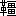

小泉純一は
芝日蔭町の宿屋を出て、東京方眼図を片手に人にうるさく問うて、新橋
停留場から上野行の電車に乗った。目まぐろしい
須田町の乗換も無事に済んだ。さて本郷三丁目で電車を降りて、
追分から高等学校に附いて右に曲がって、
根津権現の表坂上にある
袖浦館という下宿屋の前に到着したのは、十月二十何日かの午前八時であった。
此処は道が丁字路になっている。権現前から登って来る道が、自分の
辿って来た道を鉛直に切る
処に袖浦館はある。木材にペンキを塗った、マッチの箱のような
擬西洋造である。
入口の
鴨居の上に、木札が沢山並べて
嵌めてある。それに下宿人の姓名が書いてある。
純一は立ち留まって名前を読んで見た。自分の捜す大石
狷太郎という名は上から二三人目に書いてあるので、すぐに見附かった。赤い
襷を十文字に掛けて、
上り
口の板縁に
雑巾を掛けている十五六の女中が雑巾の手を留めて、「どなたの
所へいらっしゃるの」と問うた。
「大石さんにお目に掛りたいのだが」
田舎から出て来た純一は、小説で読み覚えた東京
詞を使うのである。丁度
不慣な外国語を使うように、一語一語考えて見て口に出すのである。そしてこの返事の無難に出来たのが、心中で嬉しかった。
雑巾を
掴んで突っ立った、ませた、おちゃっぴいな
小女の目に映じたのは、色の白い、卵から
孵ったばかりの
雛のような目をしている青年である。
薩摩絣の
袷に
小倉の
袴を
穿いて、同じ絣の袷羽織を着ている。
被物は柔かい
茶褐の帽子で、足には紺足袋に薩摩下駄を引っ掛けている。
当前の書生の風俗ではあるが、何から何まで新しい。これで
昨夕始めて新橋に着いた田舎者とは誰にも見えない。小女は親しげに純一を見て、こう云った。
「大石さんの
所へいらっしったの。あなた今時分いらっしったって駄目よ。あの方は十時にならなくっちゃあ起きていらっしゃらないのですもの。ですから、いつでも御飯は朝とお
午とが一しょになるの。お帰りが二時になったり、三時になったりして、それからお休みになると、一日
寐ていらっしってよ」
「それじゃあ、少し散歩をしてから、又来るよ」
「ええ。それが好うございます」
純一は権現前の坂の方へ向いて歩き出した。二三歩すると
袂から方眼図の小さく折ったのを出して、見ながら歩くのである。自分の来た道では、官員らしい、洋服の男や、角帽の学生や、白い二本筋の帽を被った高等学校の生徒や、小学校へ出る子供や、女学生なんぞが、ぞろぞろと本郷の
通の方へ出るのに
擦れ違ったが、今坂の方へ曲って見ると、まるで
往来がない。右は高等学校の
外囲、左は角が出来たばかりの会堂で、その
傍の小屋のような家から車夫が声を掛けて車を勧めた処を通り過ぎると、土塀や
生垣を
繞らした屋敷ばかりで、その間に
綺麗な道が、ひろびろと附いている。
広い道を歩くものが自分ひとりになると共に、この頃の朝の空気の、毛髪の根を緊縮させるような渋み味を感じた。そして今小女に聞いた大石の日常の生活を思った。国から
態々逢いに出て来た大石という男を、純一は頭の中で、
朧気でない想像図にえがいているが、今聞いた話はこの図の
輪廓を少しも
傷けはしない。傷けないばかりではない、一層明確にしたように感ぜられる。大石というものに対する、純一が
景仰と
畏怖との或る混合の感じが明確になったのである。
坂の上に出た。地図では知れないが、割合に幅の広いこの坂はＳの字をぞんざいに書いたように屈曲して附いている。純一は坂の上で足を留めて向うを見た。
灰色の薄曇をしている空の下に、同じ灰色に見えて、しかも透き
徹った空気に浸されて、向うの上野の山と自分の立っている
向うが
岡との間の人家の
群が見える。ここで目に映ずるだけの人家でも、故郷の町程の
大さはあるように思われるのである。純一は
暫く眺めていて、深い呼吸をした。
坂を降りて左側の鳥居を
這入る。
花崗岩を敷いてある道を根津神社の方へ
行く。下駄の
磬のように鳴るのが、
好い心持である。
剥げた木像の据えてある
随身門から内を、古風な
瑞籬で囲んである。故郷の家で、お
祖母様のお部屋に、
錦絵の
屏風があった。その絵に、どこの神社であったか知らぬが、こんな
瑞垣があったと思う。社殿の縁には、ねんねこ
絆纏の中へ赤ん坊を
負って、
手拭の鉢巻をした小娘が腰を掛けて、寒そうに体を
竦めている。純一は拝む気にもなれぬので、小さい門を左の方へ出ると、
溝のような池があって、向うの小高い処には
常磐木の間に葉の黄ばんだ木の
雑った木立がある。濁ってきたない池の水の、所々に泡の浮いているのを見ると、
厭になったので、急いで裏門を出た。
藪下の狭い道に這入る。多くは格子戸の嵌まっている小さい家が、一列に並んでいる前に、売物の荷車が止めてあるので、体を横にして通る。右側は崩れ掛って住まわれなくなった古長屋に戸が締めてある。
九尺二間というのがこれだなと思って通り過ぎる。その隣に
冠木門のあるのを見ると、色川国士別邸と
不恰好な木札に書いて
釘附にしてある。妙な姓名なので、新聞を読むうちに記憶していた、どこかの議員だったなと思って通る。そらから先きは余り綺麗でない別荘らしい家と植木屋のような家とが続いている。左側の丘陵のような処には、
大分大きい木が立っているのを、ひどく乱暴に刈り込んである。手入の悪い大きい屋敷の裏手だなと思って通り過ぎる。
爪先上がりの道を、平になる処まで登ると、又右側が
崖になっていて、上野の山までの間の人家の屋根が見える。ふいと左側の
籠塀のある家を見ると、毛利某という門札が目に附く。純一は、おや、これが
鴎村の家だなと思って、
一寸立って
駒寄の中を
覗いて見た。
干からびた老人の癖に、みずみずしい青年の中にはいってまごついている人、そして愚痴と厭味とを言っている人、
竿と
紐尺とを持って測地師が土地を測るような小説や脚本を書いている人の事だから、今時分は苦虫を
咬み
潰したような顔をして起きて出て、台所で
炭薪の小言でも言っているだろうと思って、純一は
身顫をして門前を立ち去った。
四辻を右へ坂を降りると右も左も菊細工の小屋である。国の芝居の木戸番のように、高い台の上に
胡坐をかいた、人買か巾着切りのような男が、どの小屋の前にもいて、手に手に絵番附のようなものを持っているのを、往来の人に押し附けるようにして、うるさく見物を勧める。まだ朝早いので、通る人が少い処へ、純一が通り掛かったのだから、道の両側から純一一人を
的にして勧めるのである。外から見えるようにしてある人形を見ようと思っても、純一は足を留めて見ることが出来ない。そこで覚えず足を早めて通り抜けて、右手の広い町へ曲った。
時計を出して見れば、まだ八時三十分にしかならない。まだなかなか大石の目の
醒める時刻にはならないので、
好い加減な横町を、上野の山の方へ曲った。狭い町の両側は
穢ない長屋で、
塩煎餅を焼いている店や、小さい荒物屋がある。物置にしてある小屋の
開戸が半分
開いている為めに、身を横にして通らねばならない処さえある。
勾配のない溝に、
芥が落ちて水が
淀んでいる。血色の悪い、
瘠せこけた子供がうろうろしているのを見ると、いたずらをする元気もないように思われる。純一は国なんぞにはこんな
哀な所はないと思った。
曲りくねって
行くうちに、
小川に掛けた板橋を渡って、
田圃が半分町になり掛かって、掛流しの折のような新しい家の
疎に立っている
辺に出た。一軒の家の横側に、ペンキの大字で楽器製造所と書いてある。成程、こんな物のあるのも国と違う所だと、純一は驚いて見て通った。
ふいと墓地の横手を
谷中の方から降りる、田舎道のような坂の下に出た。灰色の雲のある処から、ない処へ日が
廻って、黄いろい、寂しい暖みのある光がさっと差して来た。坂を上って上野の一部を見ようか、それでは余り遅くなるかも知れないと、危ぶみながら
佇立している。
さっきから坂を降りて来るのが、純一が視野のはずれの方に映っていた、書生風の男がじき傍まで来たので、覚えず顔を見合せた。
「小泉じゃあないか」
先方から声を掛けた。
「瀬戸か。出し抜けに逢ったから、僕はびっくりした」
「君より僕の方が
余っ
程驚かなくちゃあならないのだ。
何時出て来たい」
「ゆうべ着いたのだ。やっぱり君は美術学校にいるのかね」
「うむ。今学校から来たのだ。モデルが病気だと云って出て来ないから、
駒込の友達の処へでも
行こうと思って出掛けた処だ」
「そんな自由な事が出来るのかね」
「中学とは違うよ」
純一は一本参ったと思った。瀬戸
速人とはＹ市の中学で同級にいたのである。
「どこがどんな処だか、分からないから
為方がない」
純一は
厭味気なしに折れて出た。瀬戸も実は受持教授が展覧会事務所に
往っていないのを
幸に、腹が痛いとか何とか云って、ごまかして学校を出て来たのだから、今度は自分の方で気の毒なような心持になった。そして理想主義の看板のような、純一の黒く澄んだ
瞳で、自分の顔の表情を見られるのが
頗る不愉快であった。
この時十七八の、不断着で買物にでも
行くというような、
廂髪の一寸
愛敬のある娘が、袖が障るように二人の傍を通って、純一の顔を、気に入った心持を隠さずに現したような見方で見て行った。瀬戸はその娘の肉附の
好い体をじっと見て、慌てたように純一の顔に視線を移した。
「君はどこへ
行くのだい」
「
路花に逢おうと思って行った処が、十時でなけりゃあ起きないということだから、この
辺をさっきからぶらぶらしている」
「大石路花か。なんでもひどく無愛想な奴だということだ。やっぱり君は小説家志願でいるのだね」
「どうなるか知れはしないよ」
「君は財産家だから、なんでも好きな事を
遣るが
好いさ。紹介でもあるのかい」
「うむ。君が東京へ出てから中学へ来た田中という先生があるのだ。校友会で心易くなって、僕の処へ遊びに来たのだ。その先生が大石の同窓だもんだから、紹介状を書いて貰った」
「そんなら好かろう。随分話のしにくい男だというから、ふいと行ったって駄目だろうと思ったのだ。もうそろそろ十時になるだろう。そこいらまで一しょに
行こう」
二人は又狭い横町を抜けて、幅の広い寂しい通を横切って、純一の一度渡った、小川に掛けた
生木の橋を渡って、
千駄木下の大通に出た。菊見に行くらしい車が、大分続いて
藍染橋の方から来る。瀬戸が先へ立って、ペンキ塗の
杙にゐで井病院と
仮名違に書いて立ててある、西側の横町へ這入るので、純一は附いて
行く。瀬戸が思い出したように問うた。
「どこにいるのだい」
「まだ日蔭町の宿屋にいる」
「それじゃあ居所が
極まったら知らせてくれ給えよ」
瀬戸は名刺を出して、
動坂の下宿の番地を鉛筆で書いて渡した。
「僕はここにいる。君は路花の処へ入門するのかね。盛んな事を遣って盛んな事を書いているというじゃないか」
「君は読まないか」
「小説はめったに読まないよ」
二人は藪下へ出た。瀬戸が立ち留まった。
「僕はここで失敬するが、道は分かるかね」
「ここはさっき通った処だ」
「それじゃあ、いずれその内」
「
左様なら」
瀬戸は
団子坂の方へ、純一は根津権現の方へ、ここで袂を分かった。
二階の八畳である。東に向いている、西洋風の
硝子窓二つから、形紙を張った
向側の壁まで一ぱいに日が差している。この袖浦館という下宿は、
支那学生なんぞを目当にして建てたものらしい。この部屋は近頃まで
印度学生が二人住まって、
籐の長椅子の上にごろごろしていたのである。その時
廉い
羅氈の敷いてあった床に、今は畳が敷いてあるが、南の窓の下には記念の長椅子が置いてある。
テエブルの足を切ったような大机が、東側の二つの窓の間の処に、少し壁から離して無造作に据えてある。
何故窓の前に置かないのだと、友達がこの部屋の主人に問うたら、窓掛を引けば日が這入らない、引かなければ
目ぶしいと云った。窓掛の白木綿で、主人が
濡手を拭いたのを、女中が見て亭主に告口をしたことがある。亭主が苦情を言いに来た処が、もう
洗濯をしても
好い頃だと、あべこべに叱って恐れ入らせたそうだ。この部屋の主人は大石狷太郎である。
大石は今顔を洗って帰って来て、
更紗の座布団の上に胡坐をかいて、小さい
薬鑵の湯気を立てている火鉢を引き寄せて、
敷島を吹かしている。そこへ女中が膳を持って来る。その膳の
汁椀の
側に、名刺が一枚載せてある。大石はちょいと手に取って名前を読んで、黙って女中の顔を見た。女中はこう云った。
「御飯を上がるのだと申しましたら、それでは待っていると
仰しゃって、下にいらっしゃいます」
大石は黙って
頷いて飯を食い始めた。食いながら座布団の
傍にある東京新聞を拡げて、一面の小説を読む。これは自分が書いているのである。社に出ているうちに校正は自分でして置いて、これだけは毎朝一字残さずに読む。それが非常に早い。それからやはり自分の担当している附録にざっと目を通す。附録は文学欄で
填めていて、記者は四五人の
外に
出でない。書くことは、第一流と云われる二三人の作の批評だけであって、その他の事には殆ど全く
容喙しないことになっている。大石自身はその二三人の
中の一人なのである。飯が済むと、女中は片手に膳、片手に土瓶を持って
起ちながら、こう云った。
「お客様をお通し申しましょうか」
「うむ、来ても
好い」
返事はしても、女中の方を見もしない。随分そっけなくして、
笑談一つ言わないのに、女中は飽くまで丁寧にしている。それは大石が外の客の倍も
附届をするからである。窓掛一件の時亭主が閉口して引っ込んだのも、同じわけで、大石は下宿料をきちんと払う。時々は面倒だから来月分も取って置いてくれいなんぞと云うことさえある。袖浦館の上から下まで、大石の金力に刃向うものはない。それでいて、着物なんぞは随分質素にしている。今着ている
銘撰の綿入と、締めている
白縮緬のへこ帯とは、相応に新しくはあるが、寝る時もこのまま寝て、洋服に着換えない時には、このままでどこへでも出掛けるのである。
大石が東京新聞を見てしまって、傍に
畳ねて置いてある、外の新聞二三枚の文学欄だけを
拾読をする処へ、さっきの名刺の客が這入ってきた。二十二三の書生風の男である。
縞の綿入に小倉袴を穿いて、羽織は着ていない。名刺には新思潮記者とあったが、実際この頃の真面目な記者には、こういう風なのが多いのである。
「近藤時雄です」
鋭い目の
窪んだ、鼻の
尖った顔に、無造作な愛敬を
湛えて、記者は
名告った。
「僕が大石です」
目を挙げて客の顔を見ただけで、新聞は手から置かない。用があるなら、早く言ってしまって帰れとでも云いそうな心持が見える。それでも、近藤の顔に初め見えていた微笑は消えない。主人が新聞を手から置くことを予期しないと見える。そしてあらゆる新聞雑誌に肖像の載せてある大石が、自分で名を名告ったのは、全く無用な事であって、その無用な事をしたのは、特に恩恵を施してくれたのだ位に思っているのかも知れない。
「先生。何かお話は願われますまいか」
「何の話ですか」
新聞がやっと手を離れた。
「現代思想というようなお話が伺われると
好いのですが」
「別に何も考えてはいません」
「しかし先生のお作に出ている主人公や何ぞの心持ですな。あれをみんなが色々に論じていますが、先生はどう思っていらっしゃるか分らないのです。そういう事をお話なすって下さると我々青年は
為合せなのですが。ほんの
片端で
宜しいのです。手掛りを与えて下されば宜しいのです」
近藤は
頻りに迫っている。女中が又名刺を持って来た。紹介状が添えてある。大石は紹介状の田中
亮という署名と、小泉純一持参と書いてある処とを見たきりで、封を切らずに下に置いて、女中に言った。
「
好いからお
通なさいと云っておくれ」
近藤は肉薄した。
「どうでしょう、先生、願われますまいか」
梯子の下まで来て待っていた純一は、すぐに上がって来た。そして来客のあるのを見て、少し隔った処から大石に辞儀をして控えている。急いで歩いて来たので、少し赤みを帯びている顔から、曇のない黒い瞳が、珍らしい外の世界を覗いている。大石はこの瞳の光を自分の顔に注がれたとき、自分の顔の覚えず
霽やかになるのを感じた。そして熱心に自分の顔を見詰めている近藤にこう云った。
「僕の書く人物に就いて言われるだけの事は、僕は小説で言っている。その外に何があるもんかね。僕はこの頃長い論文なんかは面倒だから読まないが、一体僕の書く人物がどうだと云っているかね」
始めて少し内容のあるような事を言った。それに批評家が何と云っていると云うことを、向うに話させれば、
勢その通だとか、そうではないとか云わなくてはならなくなる。今来た少年の、
無垢の自然をそのままのような目附を見て、ふいと
が緩んだなと、大石は気が附いたが、既に遅かった。
「批評家は大体こう云うのです。先生のお書になるものは真の告白だ。ああ云う告白をなさる厳粛な態度に服する。
Aurelius Augustinus だとか、
Jean Jaques Rousseau だとか云うような、昔の人の取った態度のようだと云うのです」
「
難有いわけだね。僕は今の先生方の論文も面倒だから読まないが、昔の人の書いたものも面倒だから読まない。しかし聖
Augustinus は若い時に乱行を遣って、
基督教に這入ってから、態度を一変してしまって、
fanatic な坊さんになって
懺悔をしたのだそうだ。
Rousseau は妻と名の附かない女と一しょにいて、子が出来たところで、育て方に困って、孤児院へ入れたりなんぞしたことを懺悔したが、生れつき馬鹿に堅い男で、
伊太利の公使館にいた時、すばらしい
別品の処へ連れて
行かれたのに、顫え上ってどうもすることが出来なかったというじゃあないか。僕の書いている人物はだらしのない事を遣っている。地獄を買っている。あれがそんなにえらいと云うのかね」
「ええ。それがえらいと云うのです。地獄はみんなが買います。地獄を買っていて、
己は地獄を買っていると自省する態度が、厳粛だと云うのです」
「それじゃあ地獄を買わない奴は、厳粛な態度は取れないと云うのかね」
「そりゃあ地獄も買うことの出来ないような偏屈な奴もありましょう。買っていても、矯飾して知らない振をしている奴もありましょう。そういう奴は内生活が貧弱です。そんな奴には芸術の趣味なんかは分かりません。小説なんぞは書けません。懺悔の為様がない。告白をする内容がない。厳粛な態度の取りようがないと云うのです」
「ふん。それじゃあ偏屈でもなくって、矯飾もしないで、芸術の趣味の分かる、製作の出来る人間はいないと云うのかね」
「そりゃあ、そんな神のようなものが有るとも無いとも、
誰も断言はしていません。しかし批評の対象は神のようなものではありません。人間です」
「人間は皆地獄を買うのかね」
「先生。僕を冷かしては
行けません」
「冷かしなんぞはしない」大石は
睫毛をも動かさずに、ゆったり胡坐をかいている。
帳場のぼんぼん時計が、
前触に
鍋に物の焦げ附くような音をさせて、
大業に打ち出した。
留所もなく打っている。十二時である。
近藤は気の附いたような様子をして云った。
「お邪魔をいたしました。又伺います」
「さようなら。こっちのお客が待たせてあるから、お見送りはしませんよ」
「どう致しまして」近藤は席を立った。
大石は暫くじっと純一の顔を見ていて、
気色を柔げて詞を掛けた。
「君ひどく待たせたねえ。飯前じゃないか」
「まだ食べたくありません」
「何時に朝飯を食ったのだい」
「六時半です」
「なんだ。君のような
壮んな青年が六時半に朝飯を食って、
午が来たのに食べたくないということがあるものか。
嘘だろう」
語気が頗る鋭い。純一は一寸不意に出られてまごついたが、主人の顔を仰いでいる目は
逸さなかった。純一の心の
中では、こういう人の前で世間並の
空辞儀をしたのは悪かったと思う悔やら、その位な事をしたからと云って、
行きなり叱ってくれなくても好さそうなものだと思う不平やらが
籠み合って、それでまごついたのである。
「僕が悪うございました。食べたくないと云ったのは嘘です」
「はははは。君は素直で
好い。ここの内の飯は
旨くはないが、御馳走しよう。その代り一人で食うのだよ。僕はまだ朝飯から二時間立たないのだから」
誂えた飯は直ぐに来た。純一が
初に懲りて、遠慮なしに食うのを、大石は面白そうに見て、煙草を
呑んでいる。純一は食いながらこんな事を思うのである。大石という人は変っているだろうとは思ったが、随分勝手の違いようがひどい。さっきの客が帰った
迹で、黙っていてくれれば、こっちから用事を言い出すのであった。飯を食わせる程なら、何の用事があって来たかと問うても好さそうなものだに黙っていられるから、言い出す機会がない。持って来た紹介状も、さっきから見れば、封が切らずにある。紹介状も見ず、用事も問わずに、知らない人に行きなり飯を食わせるというような事は、話にも聞いたことがない。ひどい勝手の違いようだと思っているのである。ところが、大石の
考は頗る単純である。純一が自分を崇拝している青年の
一人だということは、顔の表情で知れている。田中が紹介状を書いたのを見ると、
何処から来たということも知れている。Ｙ県出身の崇拝者。目前で大飯を食っている純一の
attribute はこれで尽きている。多言を
須いないと思っているのである。
飯が済んで、女中が膳を持って降りた。その時大石はついと立って、戸棚から羽織を出して着ながらこう云った。
「僕は今から新聞社に行くから、又遊びに来給え。夜は
行けないよ」
机の上の書類を取って
懐に入れる。
長押から中折れの帽を取って被る。
転瞬倏忽の間に梯子段を降りるのである。純一は
呆れて帽を
攫んで
後に続いた。
初めて大石を尋ねた翌日の事である。純一は居所を極めようと思って宿屋を出た。
袖浦館を見てから、下宿屋というものが厭になっているので、どこか静かな
処で小さい家を借りようと思うのである。前日には大石に袖浦館の前で別れて、上野へ行って文部省の展覧会を見て帰った。その時上野がなんとなく気に入ったので、きょうは新橋から真直に上野へ来た。
博物館の門に突き当って、根岸の方へ
行こうか、きのう通った谷中の方へ行こうかと
暫く考えたが、大石を尋ねるに便利な処をと思っているので、足が自然に谷中の方へ向いた。美術学校の角を曲って、桜木町から天王寺の墓地へ出た。
今日も風のない
好い天気である。
銀杏の落葉の散らばっている敷石を踏んで、大小種々な墓石に掘ってある、知らぬ人の名を読みながら、ぶらぶらと
初音町に出た。
人通りの少い広々とした町に、生垣を結い
繞らした小さい家の並んでいる処がある。その中の一軒の、
自然木の
門柱に取り附けた
柴折戸に、貸家の札が張ってあるのが目に附いた。
純一がその門の前に立ち留まって、垣の内を覗いていると、隣の植木鉢を沢山
入口に並べてある家から、
白髪の婆あさんが出て来て話をし掛けた。聞けば貸家になっている家は、この婆あさんの亭主で、植木屋をしていた爺いさんが、
倅に
娵を取って家を譲るとき、新しく立てて
這入った隠居所なのである。爺いさんは四年前に、倅が戦争に行っている留守に、七十幾つとかで亡くなった。それから貸家にして、油画をかく人に
借していたが、先月その人が京都へ越して行って、
明家になったというのである。画家は一人ものであった。食事は植木屋から運んだ。総てこの家から上がる銭は婆あさんのものになるので、
若し一人もののお客が附いたら、やはり前通りに食事の世話をしても
好いと云っている。
婆あさんの
質樸で、
身綺麗にしているのが、純一にはひどく気に入った。婆あさんの方でも、純一の大人しそうな、品の
好いのが、一目見て気に入ったので、「お友達があって、御一しょにお住まいになるなら、それでも宜しゅうございますが、出来ることならあなたのようなお方に、お一人で住まって
戴きたいのでございます」と云った。
「まあ、とにかく御覧なすって下さい」と云って、婆あさんは柴折戸を開けた。純一は国のお
祖母あ様の腰が曲って耳の遠いのを思い出して、こんな
巌乗な年寄もあるものかと思いながら、一しょに這入って見た。婆あさんは建ててから十年になると云うが、住み荒したと云うような処は少しもない。この家に手入をして綺麗にするのを、婆あさんは為事にしていると云っているが、いかにもそうらしく思われる。一番
好い部屋は四畳半で、飛石の曲り角に
蹲いの
手水鉢が据えてある。
茶道口のような西側の戸の外は、鏡のように拭き入れた廊下で、六畳の間に続けてある。それに勝手が附いている。
純一は、これまで、茶室というと陰気な、厭な感じが伴うように思っていた。国の家には、旧藩時代に殿様がお
出になったという茶席がある。寒くなってからも蚊がいて、気の詰まるような処であった。それにこの家は茶掛かった
拵えでありながら、いかにも
晴晴している。
蹂口のような戸口が南向になっていて、東の窓の外は狭い庭を隔てて、直ぐに広い往来になっているからであろう。
話はいつ極まるともなく極まったという工合である。
一巡して来て、蹂口に据えてある、大きい
鞍馬石の上に立ち留まって、純一が「
午から越して来ても
好いのですか」と云うと、蹲の
傍の
苔にまじっている、小さい草を
撮んで抜いていた婆あさんが、「宜しいどころじゃあございません、この通りいつでもお住まいになるように、毎日掃除をしていますから」と云った。
隣の植木屋との間は、低い竹垣になっていて、丁度純一の立っている向うの処に、花の散ってしまった
萩がまん
円に繁っている。その傍に二度咲のダアリアの赤に黄の
雑った花が十ばかり、高く首を
擡げて咲いている。その花の上に青み掛かった日の光が一ぱいに差しているのを、純一が見るともなしに見ていると、萩の茂みを離れて、ダアリアの花の間へ、幅の広いクリイム色のリボンを掛けた束髪の娘の頭がひょいと出た。大きい目で純一をじいっと見ているので、純一もじいっと見ている。
婆あさんは純一の視線を
辿って娘の首を見着けて、「おやおや」と云った。
「お客さま」
答を待たない問の調子で娘は云って、にっこり笑った。そして萩の茂みに隠れてしまった。
純一は午後越して来る約束をして、忙がしそうにこの家の門を出た。植木屋の前を通るとき、ダアリアの咲いているあたりを見たが、四枚並べて敷いてある
御蔭石が、萩の植わっている処から右に折れ曲っていて、それより奥は見えなかった。
初音町に引き越してから、一週間目が天長節であった。
瀬戸の処へは、越した晩に葉書を出して、近い事だから直ぐにも来るかと思ったが、まだ来ない。大石の処へは、二度目に尋ねて行って、詩人になりたい、小説が書いて見たいと云う志願を話して見た。詩人は生れるもので、
己がなろうと企てたってなられるものではないなどと云って叱られはすまいかと、心中危ぶみながら打ち出して見たが、大石は
好いとも悪いとも云わない。
稽古のしようもない。修行のしようもない。只書いて見るだけの事だ。文章なんぞというものは、擬古文でも書こうというには、稽古の必要もあろうが、そんな事は大石自身にも出来ない。自身の書いているものにも、
仮名違なんぞは沢山あるだろう。そんな事には
頓着しないで
遣っている。要するに頭次第だと云った。それから、とにかく余り生産的な
為事ではないが、その方はどう思っているかと問われたので、純一が資産のある家の一人息子に生れて、パンの為めに働くには及ばない身の上だと話すと、大石は笑って、それでは生活難と闘わないでも済むから、
一廉の労力の節減は出来るが、その代り
刺戟を受けることが少いから、うっかりすると成功の道を踏みはずすだろうと云った。純一は何の
掴まえ処もない話だと思って
稍や失望したが、帰ってから考えて見れば、大石の言ったより外に、別に何物かがあろうと思ったのが間違で、そんな物はありようがないのだと悟った。そしてなんとなく寂しいような、心細いような心持がした。一度は、
家主の
植長がどこからか買い集めて来てくれた家具の一つの
唐机に向って、その書いて見るということに
著手しようとして見たが、頭次第だと云う頭が、どうも空虚で、何を書いて
好いか分らない。東京に出てからの感じも、何物かが有るようで無いようで、その有るようなものは雑然としていて、どこを押えて見ようという処がない。馬鹿らしくなって、一旦持った筆を置いた。
天長節の朝であった。目が
醒めて見ると、四畳半の東窓の戸の
隙から、オレンジ色の日が枕の処まで差し込んで、細かい
塵が
活溌に
跳っている。枕元に置いて寝た時計を取って見れば、六時である。
純一は国にいるとき、学校へ御真影を拝みに行ったことを思い出した。そしてふいと青山の練兵
場へ行って見ようかと思ったが、すぐに又自分で自分を打ち消した。兵隊の沢山並んで歩くのを見たってつまらないと思ったのである。
そのうち婆あさんが朝飯を運んで来たので、純一が食べていると、「お婆あさん」と、優しい声で呼ぶのが聞えた。純一の目は婆あさんの目と一しょに、その声の方角を辿って、南側の戸口の処から外へ、ダアリアの花のあたりまで行くと、この家を借りた日に見た少女の頭が、同じ処に見えている。リボンはやはりクリイム色で容赦なく

いた大きい目は、純一が宮島へ
詣ったとき見た鹿の目を思い出させた。純一は先の日にちらと見たばかりで、その後この娘の事を一度も思い出さずにいたが、今又ふいとその顔を見て、いつの間にか余程親しくなっているような心持がした。意識の
閾の下を、この娘の影が往来していたのかも知れない。婆あさんはこう云った。
「おや、いらっしゃいまし。
安は団子坂まで買物に参りましたが、もう
直に帰って参りましょう。まあ
一寸こちらへいらっしゃいまし」
「
往っても好くって」
「ええええ。あちらから廻っていらっしゃいまし」
少女の頭は萩の茂みの蔭に隠れた。婆あさんは純一に、少女が中沢という銀行頭取の娘で、近所の別荘にいるということ、娵の安がもと別荘で小間使をしていて娘と
仲好だということを話した。
その
隙に植木屋の勝手の方へ廻ったお雪さんは、飛石伝いに離れの前に来た。中沢の娘はお雪さんというのである。
婆あさんが、「この方が今度越していらっしゃった小泉さんという方でございます」というと、お雪さんは黙ってお辞儀をして、純一の顔をじいっと見て立っている。着物も羽織もくすんだ色の
銘撰であるが、長い袖の
八口から
緋縮緬の
襦袢の袖が
飜れ出ている。
飲み掛けた茶を下に置いて、これも黙ってお辞儀をした純一の顔は赤くなったが、お雪さんの方は
却って平気である。そして
稍々身を反らせているかと思われる位に、真直に立っている。純一はそれを見て、何だか人に
逼るような、
戦を挑むような態度だと感じたのである。
純一は何とか云わなくてはならないと思ったが、どうも
詞が見付からなかった。そして茶碗を取り上げて、茶を一口に飲んだ。婆あさんが詞を挟んだ。
「お嬢様は好く画を見にいらっしゃいましたが、小泉さんは御本をお読みなさるのですから、折々いらっしゃって御本のお話をお聞きなさいますと宜しゅうございます。御本のお話はお好きでございましょう」
「ええ」
純一は、「僕は本は余り読みません」と云った。言って
了うと自分で、まあ、何と云う馬鹿気た事を言ったものだろうと思った。そしてお雪さんの感情を害しはしなかったかと思って、
気色を伺った。しかしお雪さんは相変らず口元に微笑を
湛えているのである。
その微笑が又純一には気になった。それはどうも自分を
見下している微笑のように思われて、その見下されるのが自分の当然受くべき罰のように思われたからである。
純一はどうにかして名誉を
恢復しなくてはならないような感じがした。そして余程勇気を振り起して云った。
「どうです。少しお掛なすっては」
「
難有う」
右の草履が
碾磑の飛石を一つ踏んで、左の草履が麻の葉のような
皴のある鞍馬の
沓脱に上がる。お雪さんの体がしなやかに
一捩り捩られて、長い書生羽織に包まれた腰が蹂口に卸された。
諺にもいう天長節日和の冬の日がぱっと差して来たので、お雪さんは
目映しそうな顔をして、横に純一の方に向いた。純一が国にいるとき取り寄せた近代美術史に、ナナという題のマネエの画があって、大きな
眉刷毛を持って、鏡の前に立って、一寸横に振り向いた娘がかいてあった。その稍や規則正し過ぎるかと思われるような、
細面な顔に、お雪さんが好く似ていると思うのは、額を右から左へ
斜に
掠めている、小指の大きさ程ずつに固まった、柔かい前髪の為めもあろう。その前髪の下の大きい目が、日に目映しがっても、少しも純一には目映しがらない。
「あなたお国からいらっしった方のようじゃあないわ」
純一は笑いながら顔を赤くした。そして顔の赤くなるのを意識して、ひどく忌々しがった。それに出し抜けに、美中に
刺ありともいうべき批評の詞を
浴せ掛けるとは、
怪しからん事だと思った。
婆あさんはお鉢を持って、
起って行った。二人は暫く無言でいた。純一は急に空気が重くろしくなったように感じた。
垣の外を、毛皮の
衿の附いた
外套を着た客を載せた車が一つ、田端の方へ走って行った。
とうとう婆あさんが膳を下げに来るまで、純一は何の詞をも
見出すことを得なかった。婆あさんは膳と土瓶とを両手に持って、二人の顔を
見競べて、「まあ、
大相お
静でございますね」と云って、勝手へ行った。
蹲の向うの
山茶花の枝から、雀が一羽飛び下りて、蹲の水を飲む。この不思議な雀が純一の結ぼれた舌を
解いた。
「雀が水を飲んでいますね」
「黙っていらっしゃいよ」
純一は起って閾際まで出た。雀はついと飛んで行った。お雪さんは純一の顔を仰いで見た。
「あら、とうとう逃がしておしまいなすってね」
「なに、僕が来なくたって逃げたのです」大分遠慮は無くなったが、下手な役者が
台詞を言うような心持である。
「そうじゃないわ」詞遣は急劇に親密の度を加えて来る。少し間を置いて、「わたし又来てよ」と云うかと思うと、大きい目の
閃を跡に残して、千代田草履は飛石の上をばたばたと踏んで去った。
純一は机の上にある
仏蘭西の雑誌を取り上げた。中学にいるときの外国語は英語であったが、聖公会の宣教師の所へ毎晩通って、仏語を学んだ。
初は
暁星学校の教科書を読むのも辛かったが、一年程通っているうちに、ふいと楽に読めるようになった。そこで教師のベルタンさんに頼んで、
巴里の書店に紹介して貰った。それからは書目を送ってくれるので、新刊書を直接に取寄せている。雑誌もその書店が取り次いで送ってくれるのである。
開けた処には、セガンチニの死ぬるところが書いてある。氷山を隣に持った小屋のような田舎屋である。ろくな
煖炉もない。そこで画家は死に
瀕している。体のうちの臓器はもう運転を
停めようとしているのに、画家は窓を開けさせて、氷の山の
巓に棚引く雲を眺めている。
純一は巻を
掩うて考えた。芸術はこうしたものであろう。自分の
画がくべきアルプの山は現社会である。国にいたとき夢みていた大都会の渦巻は今自分を漂わせているのである。いや、漂わせているのなら
好い。漂わせていなくてはならないのに、自分は岸の
蔦蘿にかじり附いているのではあるまいか。正しい意味で生活していないのではあるまいか。セガンチニが一度も窓を開けず、戸の外へ出なかったら、どうだろう。そうしたら、山の上に住まっている
甲斐はあるまい。
今東京で社会の表面に立っている人に、国の人は沢山ある。世はＹ県の世である。国を立つとき某元老に紹介して遣ろう、某大臣に紹介して遣ろうと云った人があったのを皆ことわった。それはそういう人達がどんなに偉大であろうが、どんなに権勢があろうが、そんな事は自分の
目中に置いていなかったからである。それから又こんな事を思った。人の遭遇というものは、紹介状や何ぞで得られるものではない。紹介状や何ぞで得られたような遭遇は、別に或物が土台を造っていたのである。紹介状は偶然そこへ出くわしたのである。
開いている扉があったら足を
容れよう。扉が閉じられていたら通り過ぎよう。こう思って、田中さんの紹介状一本の外は、皆貰わずに置いたのである。
自分は東京に来ているには違ない。しかしこんなにしていて、東京が分かるだろうか。こうしていては国の書斎にいるのも同じ事ではあるまいか。同じ事なら、まだ
好い。国で中学を済ませた時、高等学校の試験を受けに東京へ出て、今では大学にはいっているものもある。瀬戸のように美術学校にはいっているものもある。直ぐに社会に出て、職業を求めたものもある。自分が優等の成績を以て卒業しながら、仏蘭西語の研究を続けて、暫く国に
留まっていたのは、自信があり抱負があっての事であった。学士や博士になることは余り希望しない。世間にこれぞと云って、
為て見たい職業もない。家には今のように支配人任せにしていても、一族が楽に暮らして
行かれるだけの財産がある。そこで親類の異議のうるさいのを排して創作家になりたいと決心したのであった。
そう思い立ってから語学を教えて貰っている教師のベルタンさんに色々な事を問うて見たが、この人は巴里の空気を呼吸していた人の癖に、そんな方面の消息は少しも知らない。本業で読んでいる
筈の新旧約全書でも、それを偉大なる文学として観察するという事はない。何かその中の話を問うて見るのに、
啻に文学として
観ていないばかりではない、
楽んで読んでいるという事さえないようである。只寺院の側から観た
煩瑣な註釈を加えた大冊の書物を、深く究めようともせずに、貯蔵しているばかりである。そして日々の為事には、国から来た新聞を読む。新聞では列国の均勢とか、どこかで
偶々起っている外交問題とかいうような事に気を着けている。そんなら何か秘密な政治上のミッションでも持っているかと云うに、そうでもないらしい。恐らくは、欧米人の
謂う
珈琲卓の政治家の
一人なのであろう。その外には東洋へ立つ前に買って来たという医書を少し持っていて、それを読んで自分の体だけの治療をする。殊にこの人の褐色の長い髪に掩われている頭には、持病の頭痛があって、古びたタラアルのような黒い衣で包んでいる腰のあたりにも、
厭な病気があるのを、いつも手前療治で繕っているらしい。そんな人柄なので少し話を文学や美術の事に向けようとすると、顧みて他を言うのである。ようようの
思でこの人に為て貰った事は巴里の
書肆へ紹介して貰っただけである。
こんな事を思っている内に、故郷の町はずれの、
田圃の中に、じめじめした処へ土を盛って、
不恰好に造ったペンキ塗の会堂が目に浮ぶ。聖公会と書いた、古びた木札の掛けてある、赤く塗った門を這入ると、
瓦で築き上げた花壇が二つある。その一つには
百合が植えてある。今一つの方にはコスモスが植えてある。どちらも春から芽を出しながら、百合は秋の初、コスモスは秋の
季に
覚束なげな花が咲くまで、いじけたままに育つのである。中にもコスモスは、
胡蘿蔔のような葉がちぢれて、
瘠せた幹がひょろひょろして立っているのである。
その奥の、
搏風だけゴチック
賽に造った、ペンキ塗のがらくた普請が会堂で、仏蘭西語を習いに
行く、少数の青年の外には、いつまで立っても、この中へ這入って来る人はない。ベルタンさんは老いぼれた料理人兼小使を一人使って、がらんとした、
稍大きい家に住んでいるのだから、どこも
彼処も
埃だらけで、白昼に
鼠が駈け廻っている。
ベルタンさんは長崎から買って来たという大きいデスクに、千八百五十何年などという年号の書いてある、クロオスの色の赤だか黒だか分からなくなった書物を、乱雑に積み上げて置いている。その側には食い掛けた腸詰や
乾酪を載せた皿が、不精にも勝手へ下げずに、国から来た
Figaro の
反古を
被せて置いてある。
虎斑の猫が一匹積み上げた書物の上に飛び上がって、そこで香箱を作って、腸詰の

を
嗅いでいる。
その向うに、茶褐色の長い髪を、白い広い額から、
背後へ
掻き上げて、例のタラアルまがいの黒い服を着て、お
祖父さん椅子に、
誰やらに貰ったという、北海道の狐の皮を掛けて、ベルタンさんが据わっている。夏も冬も同じ事である。冬は部屋の隅の鉄砲煖炉に
松真木が
燻っているだけである。
或日稽古の時間より三十分ばかり早く行ったので、ベルタンさんといろいろな話をした。その時教師がお前は何になる積りかと問うたので、正直に
Romancier になると云った。ベルタンさんは二三度問い返して、妙な顔をして黙ってしまった。この人は小説家というものに就いては、これまで少しも考えて見た事がないので、何と云って
好いか分からなかったらしい。殆どわたくしは火星へ移住しますとでも云ったのと同じ位に呆れたらしい。
純一は読み掛けた雑誌も読まずにこんな回想に
耽っていたが、ふと今朝婆あさんの起して置いてくれた火鉢の火が、真白い灰を被って小さくなってしまったのに気が附いて、慌てて炭をついで、頬を膨らせて
頻りに吹き始めた。
天長節の日の午前はこんな風で立ってしまった。婆あさんの運んで来た
昼食を食べた。そこへぶらりと瀬戸
速人が来た。
婆あさんが倅の長次郎に
白げさせて
持て来た、小さい木札に、純一が名を書いて、門の柱に掛けさせて置いたので、瀬戸はすぐに尋ね当てて這入って来たのである。日当りの
好い小部屋で、向き合って据わって見ると、瀬戸の顔は大分故郷にいた時とは違っている。谷中の坂の下で逢ったときには、向うから声を掛けたのと顔の形よりは顔の表情を見たのとで、さ程には思わなかったが、瀬戸の昔油ぎっていた顔が、今は干からびて、目尻や口の
周囲に、何か言うと
皺が出来る。
家主の婆あさんなんぞは婆あさんでも
最少し
艶々しているように思われるのである。瀬戸はこう云った。
「ひどくしゃれた内を見附けたもんだなあ」
「そうかねえ」
「そうかねえもないもんだ。一体君は人に無邪気な青年だと云われる癖に、食えない人だよ。田舎から飛び出して来て、大抵の人間ならまごついているんだが、
誰の所をでも一人で訪問する。家を一人で探して借りる。まるで百年も東京にいる人のようじゃないか」
「君、東京は百年前にはなかったよ」
「それだ。君のそう云う方面は馬鹿な奴には分からないのだ。君はずるいよ」
瀬戸は頻りにずるいよを振り廻して、純一の知己を以て自ら任じているという風である。それからこんな事を言った。今日の午後は暇なので、純一がどこか行きたい処でもあるなら、一しょに行っても
好い。上野の展覧会へ行っても好い。浅草公園へ散歩に行っても好い。今一つは自分の折々行く青年
倶楽部のようなものがある。会員は多くは未来の文士というような連中で、それに美術家が二三人加わっている。
極真面目な会で、名家を頼んで話をして貰う事になっている。今日は
拊石が来る。路花なんぞとは流派が違うが、なんにしろ大家の事だから、いつもより盛んだろうと思うというのである。
純一は画なんぞを見るには、分かっても分からなくても、人と一しょに見るのが
嫌である。浅草公園の昨今の様子は、ちょいちょい新聞に出る出来事から推し測って見ても、わざわざ往って見る気にはなられない。拊石という人は流行に遅れたようではあるが、とにかく小説家中で一番学問があるそうだ。どんな人か顔を見て置こうと思った。そこで倶楽部へ連れて行って貰うことにした。
二人は初音町を出て、上野の山をぶらぶら通り抜けた。博物館の前にも、展覧会の前にも、馬車が幾つも停めてある。精養軒の東照宮の方に近い入口の前には、立派な自動車が一台ある。瀬戸が云った。
「汽車はタアナアがかいたので画になったが、まだ自動車の名画というものは聞かないね」
「そうかねえ。文章にはもう大分あるようだが」
「
旨く書いた奴があるかね」
「小説にも脚本にも沢山書いてあるのだが、只使ってあるというだけのようだ。旨く書いたのはやっぱりマアテルリンクの小品位のものだろう」
「ふん。一体自動車というものは幾ら位するだろう」
「五六千円から、少し
好いのは一万円以上だというじゃあないか」
「それじゃあ、僕なんぞは一生画をかいても、自動車は買えそうもない」
瀬戸は火の消えた朝日を、人のぞろぞろ歩いている足元へ無遠慮に投げて、苦笑をした。笑うとひどく醜くなる顔である。
広小路に出た。国旗をぶっちがえにして立てた電車が幾台も来るが、皆満員である。瀬戸が無理に人を押し分けて乗るので、純一も為方なしに附いて乗った。
須田町で乗り換えて、錦町で降りた。横町へ曲って、赤煉瓦の神田区役所の向いの処に来ると、瀬戸が立ち留まった。
この辺には木造のけちな家ばかり並んでいる。その一軒の
庇に、好く本屋の店先に立ててあるような、木の枠に紙を張り附けた看板が立て掛けてある。上の方へ横に
羅馬字で
DIDASKALIA と書いて、下には
竪に十一月例会と書いてある。
「ここだよ。二階へ上がるのだ」
瀬戸は下駄や半靴の乱雑に脱ぎ散らしてある中へ、薩摩下駄を跳ね飛ばして、正面の
梯子を登って
行く。純一は附いて上がりながら、店を横目で見ると、帳場の格子の
背後には、
二十ばかりの色の
蒼い五分刈頭の男がすわっていて、勝手に続いているらしい三尺の口に立っている
赧顔の大女と話をしている。女は
襷がけで、裾をまくって、
膝の少し下まである、鼠色になった
褌を出している。その女が「いらっしゃい」と大声で云って、一寸こっちを見ただけで、
轡虫の鳴くような声で、話をし続けているのである。
二階は広くてきたない。一方の壁の前に、
卓と椅子とが置いてあって、卓の上には花瓶に南天が生けてあるが、いつ生けたものか葉がところどころ
泣菫の
所謂乾反葉になっている。その側に水を入れた瓶とコップとがある。
十四五人ばかりの客が、二つ三つの火鉢を中心にして、よごれた座布団の上にすわっている。間々にばら
蒔いてある座布団は跡から来る客を待っているのである。
客は大抵
紺飛白の羽織に
小倉袴という風で、それに学校の制服を着たのが交っている。中には大学や高等学校の服もある。
会話は大分盛んである。
丁度純一が上がって来たとき、
上り
口に近い
一群の中で、
誰やらが
声高にこう云うのが聞えた。
「とにかく、君、ライフとアアトが別々になっている奴は駄目だよ」
純一は知れ切った事を、仰山らしく云っているものだと思いながら、瀬戸が人にでも引き合わせてくれるのかと、少し
躊躇していたが、瀬戸は誰やら心安い間らしい人を見附けて、座敷のずっと奥の方へずんずん行って、その人と小声で
忙しそうに話し出したので、純一は上り口に近い群の片端に、座布団を引き寄せて寂しく据わった。
この群では、
識らない純一の来たのを、気にもしない様子で、会話を続けている。
話題に上っているのは、今夜演説に来る拊石である。老成らしい
一人が云う。あれはとにかく芸術家として成功している。成功といっても一時世間を動かしたという側でいうのではない。文芸史上の意義でいうのである。それに学殖がある。短篇集なんぞの中には、西洋の事を書いて、西洋人が書いたとしきゃ思われないようなのがあると云う。そうすると、さっき声高に話していた男が、こう云う。学問や特別知識は何の価値もない。芸術家として成功しているとは、旨く人形を
列べて、踊らせているような処を言うのではあるまいか。その成功が
嫌だ。
纏まっているのが嫌だ。人形を勝手に踊らせていて、エゴイストらしい自己が物蔭に隠れて、見物の面白がるのを冷笑しているように思われる。それをライフとアアトが別々になっているというのだと云う。こう云っている男は近眼目がねを掛けた
痩男で、柄にない大きな声を出すのである。
傍から遠慮げに
喙を容れた男がある。
「それでも教員を
罷めたのなんぞは、生活を芸術に一致させようとしたのではなかろうか」
「分かるもんか」
目金の男は一言で排斥した。
今まで黙っている一人の
怜悧らしい男が、遠慮げな男を顧みて、こう云った。
「しかし教員を罷めただけでも、鴎村なんぞのように、役人をしているのに比べて見ると、余程芸術家らしいかも知れないね」
話題は拊石から鴎村に移った。
純一は拊石の物などは、多少興味を持って読んだことがあるが、鴎村の物では、アンデルセンの
飜訳だけを見て、こんなつまらない作を、よくも
暇潰しに訳したものだと思ったきり、この人に対して何の興味をも持っていないから、会話に耳を傾けないで、独りで勝手な事を思っていた。
会話はいよいよ
栄えて、
笑声が
雑って来る。
「厭味だと云われるのが気になると見えて、自分で厭味だと書いて、その書いたのを厭味だと云われているなんぞは、随分みじめだね」と、怜悧らしい男が云って、外の人と一しょになって笑ったのだけが、偶然純一の耳に止まった。
純一はそれが耳に止まったので、それまで
独で思っていた事の端緒を失って、ふいとこう思った。自分の世間から受けた評に就いてかれこれ云えば、馬鹿にせられるか、厭味と思われるかに
極まっている。そんな事を
敢てする人はおめでたいかも知れない。厭味なのかも知れない。それとも実際
無頓着に自己を
客観しているのかも知れない。それを心理的に判断することは、性格を知らないでは出来ない筈だと思った。
瀬戸が座敷の奥の方から、「小泉君」と呼んだ。純一がその方を見ると、瀬戸はもう初めの所にはいない。隅の方に、子供の手習机を据えて、その上に書類を散らかしている男と、火鉢を隔てて、向き合っているのである。
席を起ってそこへ行って見れば、机の上には一円札やら小さい銀貨やらが、書類の側に置いてある。純一はそこで七十銭の会費を払った。
「席料と弁当代だよ」瀬戸は純一にこう云って聞せながら、机を構えている男に、「今日は菓子は出ないのかい」と云った。
まだ返辞をしないうちに、例の赭顔の女中が大きい盆に
一人前ずつに包んだ餅菓子を山盛にして持って来て銘々に配り始めた。
配ってしまうと、大きい土瓶に番茶を入れたのを、所々に置いて
行く。
純一が受け取った菓子を手に持ったまま、会計をしている人の机の傍にいると、「おい、瀬戸」と呼び掛けられて、瀬戸は忙がしそうに立って行った。呼んだのは、初め這入ったとき瀬戸が話をしていた男である。髪を長く
伸した、色の蒼い男である。又何か小声で熱心に話し出した。
人が次第に殖えて来て、それが必ずこの机の傍に来るので、純一は元の席に帰った。余り
上り
口に近いので、自分の敷いていた座布団だけはまだ人に占領せられずにあったのである。そこで据わろうと思うと半分ばかり飲みさしてあった茶碗をひっくり返した。純一は少し慌てて、「これは失敬しました」と云って
袂からハンカチイフを出して拭いた。
「畳が驚くでしょう」
こう云って茶碗の主は、純一が銀座のどこやらの店で、ふいと一番善いのをと云って買った、フランドルのバチストで
拵えたハンカチイフに目を
注けている。この男は最初から柱に
倚り掛かって、黙って人の話を聞きながら、折々純一の顔を見ていたのである。大学の制服の、襟にＭの字の附いたのを着た、体格の立派な男である。
一寸調子の変った返事なので、畳よりは純一の方が驚いて顔を見ていると、「君も画家ですか」と云った。「いえ。そうではありません。まだ田舎から出たばかりで、なんにも
遣っていないのです」
純一はこう云って、名刺を学生にわたした。学生は、「名刺があったかしらん」とつぶやきながら隠しを探って、小さい名刺を出して純一にくれた。大村荘之助としてある。大村はこう云った。
「僕は医者になるのだが、文学好だもんだから、折々出掛けて来ますよ。君は外国語は何を遣っています」
「フランスを少しばかり習いました」
「何を読んでいます」
「フロオベル、モオパッサン、それから、ブウルジェエ、ベルジックのマアテルリンクなんぞを
些ばかり読みました」
「らくに読めますか」
「ええ。マアテルリンクなんぞは、脚本は分りますが、論文はむつかしくて困ります」
「どうむつかしいのです」
「なんだか要点が
掴まえにくいようで」
「そうでしょう」
大村の顔を、
微かな微笑が
掠めて過ぎた。
嘲の分子なんぞは少しも含まない、温い微笑である。感激し易い青年の心は、
何故ともなくこの人を頼もしく思った。作品を読んで慕って来た大石に逢ったときは、その人が自分の想像に
画いていた人と違ってはいないのに、どうも険しい
巌の前に立ったような心持がしてならなかった。大村という人は何をしている人だか知らない。医科の学生なら、
独逸は出来るだろう。それにフランスも出来るらしい。只これだけの推察が、
咄嗟の間に出来たばかりであるのに、なんだか力になって貰われそうな気がする。ニイチェという人は、「
己は
流の岸の欄干だ」と云ったそうだが、どうもこの大村が自分の手で掴えることの出来る欄干ではあるまいかと思われてならない。そして純一のこう思う心はその大きい
瞳を
透して大村の心にも通じた。
この時梯子の下で、「諸君、平田先生が見えました」と呼ぶ声がした。平田というのは拊石の
氏なのである。
幹事らしい男に案内せられて、梯子を登って来る、拊石という人を、どんな人かと思って、純一は見ていた。
少し古びた黒の
羅紗服を着ている。背丈は中位である。顔の色は蒼いが、アイロニイを帯びた快活な表情である。世間では鴎村と同じように、
継子根性のねじくれた人物だと云っているが、どうもそうは見えない。少し赤み掛かった、たっぷりある
八字髭が、油気なしに
上向に
捩じ上げてある。純一は、髭というものは白くなる前に、四十代で赤み掛かって来る、その頃でなくては、日本人では立派にはならないものだと思った。
拊石は
上り
口で大村を見て、「何か書けますか」と声を掛けた。
「どうも持って行って見て戴くようなものは出来ません」
「ちっと無遠慮に世間へ出して見給え。活字は自由になる世の中だ」
「余り自由になり過ぎて困ります」
「活字は自由でも、思想は自由でないからね」
緩かな調子で、人に強い印象を与える
詞附である。強い印象を与えるのは、常に思想が霊活に動いていて、それをぴったり適応した言語で表現するからであるらしい。
拊石は会計掛の机の側へ案内せられて、座布団の上へ
胡坐をかいて、小さい紙巻の煙草を出して
呑んでいると、幹事が
卓の向うへ行って、紹介の挨拶をした。
拊石は不精らしく体を卓の向うへ運んだ。方々の話声の鎮まるのを、
暫く待っていて、ゆっくり口を開く。不断の会話のような調子である。
「諸君からイブセンの話をして貰いたいという事でありました。わたくしもイブセンに就いて、別に深く考えたことはない。イブセンに就いてのわたくしの智識は、諸君の既に有しておられる智識以上に何物もあるまいと思う。しかし知らない事を聞くのは骨が折れる。知っていることを聞くの気楽なるに
如かずである。お菓子が出ているようだから、どうぞお菓子を食べながら気楽に聞いて下さい」
こんな調子である。
声色を励ますというような処は少しもない。それかと云って、評判に聞いている
雪嶺の演説のように
訥弁の能弁だというでもない。平板極まる
中に、どうかすると非常に奇警な詞が、不用意にして出て来るだけは、雪嶺の演説を速記で読んだときと同じようである。
大分話が進んで来てから、こんな事を言った。「イブセンは初め
諾威の小さいイブセンであって、それが社会劇に手を着けてから、大きな
欧羅巴のイブセンになったというが、それが日本に伝わって来て、又ずっと小さいイブセンになりました。なんでも日本へ持って来ると小さくなる。ニイチェも小さくなる。トルストイも小さくなる。ニイチェの詞を思い出す。地球はその時小さくなった。そしてその上に何物をも小さくする、最後の人類がひょこひょこ
跳っているのである。我等は幸福を発見したと、最後の人類は云って、目をしばだたくのである。日本人は色々な主義、色々なイスムを輸入して来て、それを
弄んで目をしばだたいている。何もかも日本人の手に
入っては小さいおもちゃになるのであるから、元が恐ろしい物であったからと云って、
剛がるには当らない。何も
山鹿素行や、四十七士や、水戸浪士を地下に起して、その小さくなったイブセンやトルストイに対抗させるには及ばないのです」まあ、こんな調子である。
それから新しい事でもなんでもないが、純一がこれまで蓄えて持っている思想の中心を動かされたのは拊石が
諷刺的な語調から、
忽然真面目になって、イブセンの個人主義に両面があるということを語り出した処であった。拊石は
先ず、次第にあらゆる習慣の
縛を脱して、個人を個人として生活させようとする思想が、イブセンの生涯の作の上に、
所謂赤い糸になって一貫していることを言った。「種々の別離を己は
閲した」という様な心持である。これを聞いている間は、純一もこれまで自分が舟に
棹さして下って行く順流を、演説者も同舟の人になって下って行くように感じていた。ところが、拊石は話頭を一転して、「これがイブセンの自己の一面です、
Peer Gynt に詩人的に発揮している自己の一面です、世間的自己です」と結んで置いて、別にイブセンには最初から他の一面の自己があるということを言った。「若しこの一面がなかったら、イブセンは
放縦を説くに過ぎない。イブセンはそんな人物ではない。イブセンには別に出世間的自己があって、始終向上して
行こうとする。それが
Brand に於いて発揮せられている。イブセンは何の為めに習慣の朽ちたる
索を引きちぎって棄てるか。ここに自由を得て、身を
泥土に
委ねようとするのではない。強い翼に風を切って、高く遠く飛ぼうとするのである」純一はこれを聞いていて、その語気が少しも荘重に聞かせようとする様子でなく、依然として平坦な会話の調子を維持しているにも
拘らず、無理に自分の乗っている船の
舳先を
旋らして逆に急流を
溯らせられるような感じがして、それから暫くの間は、独りで深い思量に
耽った。
譬えば長い間集めた物を、一々心覚えをして箱に入れて置いたのを、人に上を下へと
掻き交ぜられたような物である。それを元の通りにするのはむずかしい。いや、元の通りにしようなんぞとは思わない。元の通りでなく、どうにか整頓しようと思う。そしてそれが出来ないのである。出来ないのは無理もない。そんな整頓は
固より一朝一夕に出来る筈の整頓ではないのである。純一の耳には拊石の詞が遠い遠い物音のように、意味のない雑音になって聞えている。
純一はこの雑音を聞いているうちに、ふと聴衆の動揺を感じて、殆ど無意識に耳を
欹てると、丁度拊石がこう云っていた。
「ゾラの
Claude は芸術を求める。イブセンのブラントは理想を求める。その求めるものの為めに、妻をも子をも犠牲にして顧みない。そして自分も滅びる。そこを
藪睨に睨んで、ブラントを諷刺だとさえ云ったものがある。実はイブセンは大真面目である。大真面目で向上の一路を示している。
悉皆か絶無か。この理想はブラントという主人公の理想であるが、それが自己より
出でたるもの、自己の意志より出でたるものだという所に、イブセンの求めるものの内容が限られている。とにかく道は自己の
行く為めに、自己の開く道である。倫理は自己の
遵奉する為めに、自己の構成する倫理である。宗教は自己の信仰する為めに、自己の建立する宗教である。
一言で云えば、
Autonomie である。それを公式にして見せることは、イブセンにも出来なんだであろう。とにかくイブセンは求める人であります。現代人であります。新しい人であります」
拊石はこう云ってしまって、聴衆は結論だかなんだか分らずにいるうちに、ぶらりとテエブルを離れて前に据わっていた座布団の上に戻った。
あちこちに拍手するものがあったが、はたが応ぜないので、すぐに
止んでしまった。多数は演説が止んでもじっと考えている。一座は非常に静かである。
幹事が閉会を告げた。
下女が
鰻飯の
丼を運び出す。方々で話声はちらほら聞えて来るが、その話もしめやかである。自分自分で考えることを考えているらしい。
縛がまだ解けないのである。
幹事が拊石を送り出すを相図に、会員はそろそろ帰り始めた。
純一が梯子段の処に立っていると、瀬戸が
忙しそうに傍へ来て問うのである。
「君、もうすぐに帰るか」
「帰る」
「それじゃあ、僕は寄って
行く処があるから、失敬するよ」
門口で別れて、瀬戸は神田の方へ
行く。倶楽部へ来たときから、一しょに話していた男が、跡から足を早めて追っ駈けて行った。
純一が
小川町の方へ一人で歩き出すと、
背後を
大股に靴で歩いて来る人のあるのに気が附いた。振り返って見れば、さっき大村という名刺をくれた医科の学生であった。並ぶともなしに、純一の右側を歩きながら、こう云った。
「君はどっちへ帰るのです」
「谷中にいます」
「瀬戸は君の親友ですか」
「いいえ。親友というわけではないのですが、国で中学を一しょに遣ったものですから」
なんだか言いわけらしい返事である。血色の
好い、
巌乗な大村は、純一と歩度を合せる為めに、余程加減をして歩くらしいのである。小川町の通を須田町の方へ、二人は暫く無言で歩いている。
両側の店にはもう明りが附いている。少し風が出て、
土埃を捲き上げる。看板ががたがた鳴る。天下堂の前の人道を歩きながら、大村が「電車ですか」と問うた。
「僕は少し歩こうと思います」
「元気だねえ。それじゃあ、僕も不精をしないで歩くとしようか。しかし君は本郷へ廻っては損でしょう」
「いいえ。大した違いはありません」
又暫く詞が絶えた。大村が歩度を加減しているらしいので、純一はなるたけ大股に歩こうとしている。しかし純一は、大村が無理をして縮める歩度は整っているのに、自分の強いて伸べようとする歩度は乱れ勝になるように感ずるのである。そしてそれが歩度ばかりではない。只なんとなく大村という男の全体は平衡を保っているのに、自分は動揺しているように感ずるのである。
この動揺の性質を純一は分析して見ようとしている。ところが、それがひどくむずかしい。先頃大石に逢った時を顧みれば、彼を大きく思って、自分を小さく思ったに違いない。しかし彼が何物をか有しているとは思わない。自分も相応に因襲や前極めを破壊している積りでいたのに、大石に逢って見れば、彼の破壊は自分なんぞより周到であるらしい。自分も今
一洗濯したら、あんな態度になられるだろうと思った。
然るに今日拊石の演説を聞いているうちに、彼が何物をか有しているのが、
髣髴として認められた様である。その何物かが気になる。自分の動揺は、その何物かに与えられた波動である。純一は突然こう云った。
「一体新人というのは、どんな人を指して言うのでしょう」
大村は純一の顔をちょいと見た。そして目と口との周囲に微笑の影が
閃いた。
「さっき拊石さんがイブセンを新しい人だと云ったから、そう云うのですね。拊石さんは妙な人ですよ。新人というのが嫌いで、わざわざ新しい人と云っているのです。僕がいつか新人と云うと、新人とは漢語で
花娵の事だと云って、僕を冷かしたのです」
話が横道へ
逸れるのを、純一はじれったく思って、又出直して見た。
「なる程旧人と新人ということは、女の事にばかり云ってあるようですね。そんなら僕も新しい人と云いましょう。新しい人はつまり道徳や宗教の理想なんぞに捕われていない人なんでしょうか。それとも何か別の物を有している人なんでしょうか」
微笑が又閃く。
「消極的新人と積極的新人と、どっちが本当の新人かと云うことになりますね」
「ええ。まあ、そうです。その積極的新人というものがあるでしょうか」
微笑が又閃く。
「そうですねえ。有るか無いか知らないが、有る
筈には相違ないでしょう。破壊してしまえば、又建設する。石を崩しては、又積むのでしょうよ。君は哲学を読みましたか」
「哲学に就いては、少し読んで見ました。哲学その物はなんにも読みません」正直に、躊躇せずに答えたのである。
「そうでしょう」
夕の昌平橋は
雑沓する。内神田の
咽喉を
扼している、ここの
狭隘に、おりおり捲き起される冷たい
埃を浴びて、影のような
群集が
忙しげに
摩れ違っている。暫くは話も出来ないので、影と一しょに急ぎながら空を見れば、仁丹の広告燈が青くなったり、赤くなったりしている。純一は暫く考えて見て云った。
「哲学が幾度建設せられても、その度毎に破壊せられるように、新人も積極的になって、何物かを建設したら、又その何物かに捕われるのではないでしょうか」
「捕われるのですとも。縄が新しくなると、当分当りどころが違うから、
縛を感ぜないのだろうと、僕は思っているのです」
「そんなら
寧ろ消極のままで、懐疑に安住していたらどうでしょう」
「懐疑が安住でしょうか」
純一は一寸窮した。「安住と云ったのは、矛盾でした。つまり永遠の懐疑です」
「なんだか
咀われたものとでも云いそうだね」
「いいえ。懐疑と云ったのも当っていません。永遠に求めるのです。永遠の希求です」
「まあ、そんなものでしょう」
大村の詞はひどく
冷澹なようである。しかしその音調や表情に
温みが
籠っているので、純一は不快を感ぜない。聖堂の裏の塀のあたりを歩きながら、純一は考え考えこんな事を話し出した。
「さっき倶楽部でもお話をしたようですが、僕はマアテルリンクを大抵読んで見ました。それから同じ学校にいた友達だというので、
Verhaeren を読み始めたのです。この間
La Multiple Splendeur が来たもんですから、それを国から出て来るとき、汽車で読みました。あれには大分纏まった人世観のようなものがあるのですね。妙にこう
敬虔なような態度を取っているのですね。まるで日本なんぞで新人だと云っている人達とは違っているもんですから、へんな心持がしました。あなたの云う積極的新人なのでしょう。日本で消極的な事ばかし書いている新人の作を見ますと、縛られた縄を
解いて
行く処に、なる程と思う処がありますが、別に深く引き附けられるような感じはありません。あのフェルハアレンの詩なんぞを見ますと、妙な人生観があるので、それが直ぐにこっちの人生観にはならないのですが、その癖あの敬虔なような調子に引き寄せられてしまうのです。ロダンは友達だそうですが、丁度ロダンの彫刻なんぞも、同じ事だろうと思うのです。そうして見ると、西洋で新人と云われている連中は、皆気息の
通っている処があって、それが日本の新人とは大分違っているように思うのです。拊石さんのイブセンの話も同じ事です。どうも日本の新人という人達は、拊石の云ったように、小さいのではありますまいか」
「小さいのですとも。あれは
Clique の名なのです」大村は
恬然としてこう云った。
銘々勝手な事を考えて、二人は本郷の通を歩いた。大村の方では田舎もなかなか馬鹿にはならない、自分の知っている文科の学生の或るものよりは、この独学の青年の方が、眼識も能力も優れていると思うのである。
大学前から、道幅のまだ広げられない森川町に掛かるとき、大村が突然こう云った。
「君、瀬戸には気を着けて交際し給えよ」
「ええ。分かっています。
Boh me
me ですから」
「うん。それが分かっていれば
好いのです」
近いうちに大村の西片町の下宿を尋ねる約束をして、純一は高等学校の角を曲った。
十一月二十七日に有楽座でイブセンの
John Gabriel Borkmann が興行せられた。
これは時代思潮の上から
観れば、重大なる出来事であると、純一は信じているので、自由劇場の発表があるのを待ち兼ねていたように、早速会員になって置いた。これより前に、まだ純一が国にいた頃、シェエクスピイア興行があったこともある。しかしシェエクスピイアやギョオテは、
縦いどんなに
旨く演ぜられたところで、結構には相違ないが、今の青年に痛切な感じを与えることはむずかしかろう。痛切でないばかりではない。事に依ると、あんなクラッシックな、
俳諧の用語で言えば、一時流行でなくて千古不易の方に属する作を味う余裕は、青年の多数には無いと云っても好かろう。極端に言えば、若しシェエクスピイアのような作が新しく出たら、これはドラムではない、テアトルだなんぞと云うかも知れない。その韻文をも冗漫だと云うかも知れない。ギョオテもそうである。ファウストが新作として出たら、青年は何と云うだろうか。第二部は
勿論であるが、第一部でも、これは象徴ではない、アレゴリイだとも云い兼ねまい。なぜと云うに、近世の写実の強い
刺戟に慣れた舌には、百年
前の落ち着いた深い趣味は味いにくいからである。そこでその古典的なシェエクスピイアがどう演ぜられたか。当時の新聞雑誌で見れば、ヴェネチアの街が駿河台の
屋鋪町で、オセロは日清戦争時代の将官の
肋骨服に、三等勲章を
佩びて登場したということである。その舞台や
衣裳を想像して見たばかりで、今の青年は侮辱せられるような感じをせずにはいられないのである。
二十七日の晩に、電車で
数寄屋橋まで行って、有楽座に
這入ると、パルケットの四列目あたりに案内せられた。見物はもうみんな
揃って、興行主の演説があった跡で、丁度これから第一幕が始まるという時であった。
東京に始めて出来て、珍らしいものに言い
囃されている、この西洋風の夜の劇場に這入って見ても、種々の本や
画で、劇場の事を見ている純一が為めには、別に目を
駭かすこともない。
純一の席の近処は、女客ばかりであった。左に二人並んでいるのは、まだどこかの学校にでも通っていそうな
廂髪の令嬢で、一人は
縹色の
袴、一人は
菫色の袴を
穿いている。右の方にはコオトを着たままで、その上に毛の厚い
skunks の襟巻をした奥さんがいる。この奥さんの左の椅子が明いていたのである。
純一が座に着くと、何やら首を
聚めて話していた令嬢も、右手の奥さんも、一時に顔を振り向けて、純一の方を向いた。縹色のお嬢さんは赤い円顔で、菫色のは白い角張った顔である。その角張った顔が何やらに似ている。西洋人が
胡桃を
噬み割らせる、恐ろしい口をした人形がある。あれを優しく女らしくしたようである。国へ演説に来たとき、一度見た事のある島田三郎という人に、どこやら似ている。どちらも美しくはない。それと違って、スカンクスの奥さんは
凄いような美人で、鼻は高過ぎる程高く、切目の長い
黒目勝の目に、有り余る
媚がある。
誰やらの奥さんに、友達を引き合せた跡で、「君、今の目附は誰にでもするのだから、心配し給うな」と云ったという話があるが、まあ、そんな風な目である。真黒い髪が多過ぎ長過ぎるのを、持て余しているというように見える。お嬢さん達はすぐに東西の桟敷を折々きょろきょろ見廻して、前より少し声を低めたばかり、大そうな用事でもあるらしく話し続けている。奥さんは
良や久しい間、純一の顔を無遠慮に見ていたのである。
「そら、幕が
開いてよ」と縹のお嬢さんが菫のお嬢さんをつついた。「いやあね。あんまりおしゃべりに実が
入って知らないでいたわ」
桟敷が
闇くなる。さすが会員組織で客を集めただけあって、所々の話声がぱったり
止む。舞台では、これまでの日本の芝居で見物の同情を
惹きそうな
理窟を言う、エゴイスチックなボルクマン夫人が、
倅の来るのを待っている処へ、倅ではなくて、若かった昔の恋の競争者で、情に
脆い、じたらくなような事を言う、アルトリュスチックな妹エルラが来て、長い長い対話が始まる。それを聞いているうちに、筋の立った理窟を言う夫人の、強そうで弱みのあるのが、次第に同情を失って、いくじのなさそうな事を言う妹の、弱そうで底力のあるのに、自然と同情が集まって来る。見物は少し勝手が違うのに気が附く。対話には退屈しながら、期待の情に制せられて、息を
屏めて聞いているのである。ちと大き過ぎた二階の足音が、破産した銀行頭取だと分かる所で、こんな影を画くような手段に馴れない見物が、始めて新しい刺戟を受ける。息子の情婦のヴィルトン夫人が出る。息子が出る。感情が次第に激して来る。皆引っ込んだ跡に、ボルクマン夫人が残って、床の上に身を転がして
煩悶するところで幕になった。
見物の席がぱっと明るくなった。
「ボルクマン夫人の転がるのが、さぞ
可笑しかろうと思ったが、存外可笑しかないことね」と菫色が云った。
「ええ。可笑しかなくってよ。とにかく、変っていて面白いわね」と縹色が答えた。
右の奥さんは、幕になるとすぐ立ったが、間もなく襟巻とコオトなしになって戻って来た。空気が
暖になって来たからであろう。
鶉縮緬の上着に羽織、
金春式唐織の丸帯であるが、純一は只黒ずんだ、立派な羽織を着ていると思って見たのである。それから
膝の上に組み合せている指に、殆ど一本一本
指環が光っているのに気が着いた。
奥さんの目は又純一の顔に注がれた。
「あなたは脚本を読んでいらっしゃるのでしょう。次の幕はどんな処でございますの」
落ち着いた、はっきりした声である。そしてなんとなく
金石の響を帯びているように感ぜられる。しかし純一には、声よりは目の閃きが強い印象を与えた。横着らしい
笑が目の底に潜んでいて、口で言っている
詞とは、まるで別な表情をしているようである。そう思うと同時に、左の令嬢二人が一斉に自分の方を見たのが分かった。
「こん度の脚本は読みませんが、フランス訳で読んだことがあります。次の幕はあの足音のした二階を見せることになっています」
「おや、あなたフランス学者」奥さんはこう云って、何か思うことあるらしく、にっこり笑った。
丁度この時幕が開いたので、答うることを
須いない問のような、奥さんの詞は、どういう感情に根ざして発したものか、純一には分からずにしまった。
舞台では
檻の
狼のボルクマンが、自分にピアノを弾いて聞せてくれる小娘の、小さい心の臓をそっと開けて見て、ここにも早く失意の人の、苦痛の
萌芽が籠もっているのを見て、強いて自分の抑鬱不平の心を慰めようとしている。見物は只娘フリイダの、小鳥の
囀るような、
可哀らしい声を聞いて、浅草公園の菊細工のある処に這入って、紅雀の
籠の前に足を留めた時のような心持になっている。
「まあ、
可哀いことね」と縹色のお嬢さんの

くのが聞えた。
小鳥のようなフリイダが帰って、親鳥の失敗詩人が来る。それも帰る。そこへ昔命に懸けて愛した男を、冷酷なきょうだいに夫にせられて、不治の病に体のしんに食い込まれているエルラが、
燭を
秉って老いたる恋人の檻に這入って来る。妻になったという優勝の地位の象徴ででもあるように、大きい
巾を頭に巻き附けた夫人グンヒルドが、扉の外で立聞をして、恐ろしい幻のように、現れて又消える。
爪牙の鈍った狼のたゆたうのを、大きい愛の力で励まして、エルラはその幻の
洞窟たる階下の室に連れて
行こうとすると、幕が下りる。
又見物の席が明るくなる。ざわざわと、風が林をゆするように、人の話声が聞えて来る。純一は又奥さんの目が自分の方に向いたのを知覚した。
「これからどうなりますの」
「こん度は又二階の下です。もうこん度で、あらかた解決が附いてしまいます」
奥さんに詞を掛けられてから
後は、純一は左手の令嬢二人に、鋭い観察の対象にせられたように感ずる。令嬢が自分の視野に映じている間は、その令嬢は
余所を見ているが、正面を向くか、又は少しでも右の方へ向くと、令嬢の視線が矢のように飛んで来て、自分の
項に
中るのを感ずる。見ていない所の見える、不愉快な感じである。Ｙ県にいた時の、中学の理学の教師に、山村というお爺いさんがいて、それが
Spiritisme に関する、妙な迷信を持っていた。その教師が云うには、人は誰でも体の
周囲に特殊な雰囲気を有している。それを五官を以てせずして感ずるので、道を
背後から歩いて来る友達が
誰だということは、見返らないでも分かると云った。純一は五官を以てせずして、
背後に受ける視線を感ずるのが、不愉快でならなかった。
幕が
開いた。
覿面に死と相見ているものは、
姑息に安んずることを好まない。老いたる処女エルラは、老いたる夫人の階下の部屋へ、檻の
獣を連れて来る。
鷸蚌ならぬ三人に争われる、
獲ものの青年エルハルトは、夫人に呼び戻されて、この場へ帰る。母にも従わない。父にも従わない。
情誼の縄で縛ろうとするおばにも従わない。「わたくしは生きようと思います」と云う、猛烈な叫声を、今日の大向うを占めている、
数多の学生連に
喝采せられながら、
萎れる前に、吸い取られる
限の日光を吸い取ろうとしている花のようなヴィルトン夫人に連れられて、南国をさして雪中を立とうとする、銀の鈴の附いた
橇に乗りに
行く。
この次の
幕間であった。少し休憩の時間が長いということが、番附にことわってあったので、見物が大抵一旦席を立った。純一は丁度自分が立とうとすると、それより心持早く右手の奥さんが立ったので、前後から人に押されて、奥さんの体に触れては離れ、離れては触れながら、外の廊下の方へ歩いて行く。
微な
parfum の
がおりおり純一の鼻を襲うのである。
奥さんは振り向いて、目で笑った。純一は何を笑ったとも
解せぬながら、行儀好く笑い交した。そして人に押されるのが可笑しいのだろうと、跡から解釈した。
廊下に出た。純一は人が
疎になったので、遠慮して奥さんの
傍を離れようと思って、わざと歩度を緩め掛けた。しかしまだ二人の間に
幾何の距離も出来ないうちに、奥さんが振り返ってこう云った。
「あなたフランス語をなさるのなら、宅に書物が沢山ございますから、見にいらっしゃいまし。新しい物ばかり御覧になるのかも知れませんが、古い本にだって、
宜しいものはございますでしょう。御遠慮はない
内なのでございますの」
前から
識り合っている人のように、少しの
窘迫の態度もなく、歩きながら云われたのである。純一は名刺を出して、奥さんに渡しながら、素直にこう云った。
「わたくしは国から出て参ったばかりで、谷中に家を借りておりますが、本は殆どなんにも持っていないと云っても宜しい位です。もし文学の本がございますのですと、少し古い本で見たいものが沢山ございます」
「そうですか。文学の本がございますの。全集というような物が揃えてございますの。その外は歴史のような物が多いのでしょう。亡くなった主人は法律学者でしたが、その方の本は大学の図書館に納めてしまいましたの」
奥さんが
未亡人だということを、この時純一は知った。そして初めて逢った自分に、宅へ本を見に来いなんぞと云われるのは、一家の主権者になっていられるからだなと思った。奥さんは姓名だけの小さく書いてある純一の名刺を
一寸読んで見て、帯の間から
繻珍の紙入を出して、それへしまって、自分の名刺を代りにくれながら、「あなた、お国は」と云った。
「Ｙ県です」
「おや、それでは亡くなった主人と御同国でございますのね。東京へお
出になったばかりだというのに、ちっともお国詞が出ませんじゃございませんか」
「いいえ。折々出ます」
奥さんの名刺には坂井れい子と書いてあった。純一はそれを見ると、すぐ「坂井
恒先生の奥さんでいらっしゃったのですね」と云って、丁寧に辞儀をした。
「宅を御存じでございましたの」
「いいえ。お名前だけ承知していましたのです」
坂井先生はＹ県出身の学者として名高い人であった。
Montesquieu の
Esprit des lois を漢文で訳したのなんぞは、評判が高いばかりで、広く世間には行われなかったが、
Code Napol on
on の典型的な
飜訳は、先生が亡くなられても、価値を減ぜずにいて、今も坂井家では、これによって少からぬ収入を得ているのである。純一も先生が四十を越すまで独身でいて、どうしたわけか、娘にしても
好いような、美しい細君を迎えて、まだ一年と立たないうちに、
脊髄病で亡くなられたということは、中学にいた時、
噂に聞いていたのである。
噂はそれのみではない。先生は本職の法科大学教授としてよりは、代々の当路者から
種々な用事を言い附けられて、随分多方面に働いておられたので、亡くなられた跡には
一廉の遺産があった。それを未亡人が一人で管理していて、旧藩主を始め、同県の人と全く交際を絶って、何を当てにしているとも分からない生活をしていられる。子がないのに、養子をせられるでもない。
誰も夫人と親密な人というもののあることを聞かない。先生の亡くなる僅か前に落成した、根岸の
villa 風の西洋造に住まっておられるが、静かに夫の跡を弔っていられるらしくはない。先生の
存生の時よりも派手な暮らしをしておられる。その生活は
一の秘密だということであった。
純一が青年の空想は、国でこの噂話を聞いた時、
種々な幻像を描き出していたので、坂井夫人という女は、面白い小説の女主人公のように、純一の記憶に刻み附けられていたのである。
純一は坂井先生の名を聞いていたという返事をして、奥さんの顔を見ると、その顔には又さっきの無意味な、
若くは意味の
掩われている微笑が浮んでいる。丁度二人は西の階段の下に
佇んでいたのである。
「上へ上がって見ましょうか」と奥さんが云った。
「ええ」
二人は階段を登った。
その時上の廊下から、「小泉君じゃあないか」と声を掛けるものがある。上から四五段目の処まで登っていた純一が、仰向いて見ると、声の主は大村であった。
「大村君ですか」
この返事をすると、奥さんは
頤で知れない程の会釈をして、足を早めて階段を登ってしまって、一人で左へ行った。
純一は大村と階段の上り口に立っている。丁度
Buffet と書いて、その下に登って左を指した矢の、書き添えてある札を打ち附けた柱の処である。純一は懐かしげに大村を見て云った。
「好く丁度一しょになったものですね。不思議なようです」
「なに、不思議なものかね。興行は二日しかない。我々は是非とも来る。そうして見ると、二分の一の
probabilit で出合うわけでしょう。ところが、ジダスカリアの連中なんぞは、皆大抵続けて来るから、それが殆ど一分の一になる」
「瀬戸も来ていますかしらん」
「いたようでしたよ」
「これ程立派な劇場ですから、
foyer とでも云ったような散歩
場も出来ているでしょうね」
「出来ていないのですよ。
先ずこの廊下あたりがフォアイエエになっている。広い場所があっちにあるが、食堂になっているのです。日本人は歩いたり話したりするよりは、飲食をする方を好くから、食堂を広く取るようになるのでしょう」
純一の左の方にいた令嬢二人が、手を
繋ぎ合って、
頻りに話しながら通って行った。その外
種々な人の通る中で、大村がおりおりあれは
誰だと教えてくれるのである。
それから純一は、大村と話しながら、食堂の入口まで歩いて行って、おもちゃ
店のあるあたりに
暫く立ち留まって、食堂に
出入する人を眺めていると、ベルが鳴った。
純一が大村に別れて、階段を降りて、自分の席へ
行くとき、腰掛の列の間の狭い道で人に押されていると、又
parfum の
香がする。振り返って見て、坂井の奥さんの
謎の目に出合った。
雪の
門口の幕が
開く。ヴィルトン夫人に娘を連れて行かれた、不遇の楽天詩人たる書記は、銀の鈴を鳴らして行く橇に
跳飛ばされて、足に怪我をしながらも、
尚娘の前途を祝福して、寂しい家の
燈の
下に泣いている妻を慰めに帰って行く。道具が変って、丘陵の上になる。野心ある実業家たる老主人公が、平生心にえがいていた、大工場の幻を見て、雪のベンチの上に
瞑目すると、優しい昔の情人と、反目の生活を共にした未亡人とが、
屍の上に握手して、幕は降りた。
出口が込み合うからと思って、純一は暫く廊下に立ち留まって、舞台の方を見ていた。舞台では、一旦卸した幕を上げて、俳優が大詰の道具の中で、大詰の姿勢を取って、写真を写させている。
「左様なら。御本はいつでもお
出になれば、御覧に入れます」
純一が見返る暇に、坂井夫人の後姿は、出口の人込みの中にまぎれ入ってしまった。返事も出来なかったのである。純一は跡を見送りながら、ふいと思った。「どうも
己は女の人に物を言うのは、窮屈でならないが、なぜあの奥さんと話をするのを、少しも窮屈に感じなかったのだろう。それにあの奥さんは、妙な目の人だ。あの目の奥には何があるかしらん」
帰るときに気を附けていたが、大村にも瀬戸にも逢はなかった。左隣にいたお嬢さん二人が頻りに車夫の名を呼んでいるのを見た。
純一が日記の断片
十一月三十日。晴。毎日
几帳面に書く日記ででもあるように、天気を書くのも可笑しい。どうしても己には続いて日記を書くということが出来ない。こないだ大村を尋ねて行った時に、その話をしたら、「人間は
種々なものに縛られているから、自分で自分をまで縛らなくても
好いじゃないか」と云った。なる程、人間が生きていたと云って、何も
齷齪として日記を附けて置かねばならないと云うものではあるまい。しかし日記に縛られずに何をするかが問題である。何の目的の為めに自己を解放するかが問題である。
作る。製作する。神が万物を製作したように製作する。これが最初の考えであった。しかしそれが出来ない。「下宿の二階に転がっていて、何が書けるか」などという批評家の詞を見る度に、そんなら世界を周遊したら、誰にでもえらい作が出来るかと反問して
遣りたいと思う反抗が一面に起ると同時に、己はその下宿屋の二階もまだ知らないと思う
怯懦が他の一面に
萌す。丁度
Titanos が岩石を砕いて、それを天に
擲とうとしているのを、傍に
尖った帽子を
被った一寸坊が見ていて、顔を
蹙めて笑っているようなものである。
そんならどうしたら
好いか。
生きる。生活する。
答は簡単である。しかしその内容は簡単どころではない。
一体日本人は生きるということを知っているだろうか。小学校の門を
潜ってからというものは、一しょう懸命にこの学校時代を駈け抜けようとする。その先きには生活があると思うのである。学校というものを離れて職業にあり附くと、その職業を
為し遂げてしまおうとする。その先きには生活があると思うのである。そしてその先には生活はないのである。
現在は過去と未来との間に
劃した一線である。この線の上に生活がなくては、生活はどこにもないのである。
そこで己は何をしている。
今日はもう半夜を過ぎている。もう今日ではなくなっている。しかし変に気が澄んでいて、
寐ようと思ったって、寐られそうにはない。
その今日でなくなった今日には閲歴がある。それが人生の閲歴、生活の閲歴でなくてはならない
筈である。それを書こうと思って久しく
徒に過ぎ去る記念に、空虚な数字のみを
留めた日記の、新しいペエジを開いたのである。
しかし己の書いている事は、何を書いているのだか分からない。実は書くべき事が大いにある筈で、それが殆ど無いのである。やはり空虚な数字のみにして置いた方が増しかも知れないと思う位である。
朝は平凡な朝であった。
極まって二三日置きに国から来る、お
祖母あ様の手紙が来た。
食物に気を附けろ、往来で電車や馬車や自動車に
障って怪我をするなというような事が書いてあった。食物や車の外には、危険物のあることを知らないのである。
それから日曜だというので、瀬戸が遣って来た。ひどく知己らしい事を言う。何か己とあの男と秘密を共有していて、それを同心
戮力して
隠蔽している筈だというような態度を取って来る。そして一日の
消遣策を二つ三つ立てて己の採択に任せる。その中に例の如く
une direction dominante がある。それは磁石の針の如くに、かの共有している筈の秘密を指しているのである。己はいつもなるべくそれと方向を殊にしている策を認容するのであるが、こん度はためしにどれをも廃棄して、「きょうは僕は内で本を読むのだ」と云って見た。その結果は己の予期した通りであった。瀬戸は暫くもじもじしていたがとうとう金を貸せと云った。
己にはかれの要求を満足させることは、さほどむずかしくはなかった。しかし己は中学時代に早く得ている経験を繰り返したくなかった。「君こないだのもまだ返さないで、甚だ済まないが」と云うのは
尤も無邪気なのである。「長々
難有う」と云って一旦出して置いて、改めてプラス幾らかの要求をするというのは古い手である。それから一番
振っているのは、「もうこれだけで丁度になりますからどうぞ」というのであった。
端たのないようにする物、
纏めて置く物に事を
闕いて、借金を纏めて置かないでも好さそうなものである。己はそういう経験を繰り返したくなかった。そこで断然初めからことわることにした。
然るにそのことわるということの経験は甚だ乏しい。己だって国から送って貰うだけの金を何々に遣うという予算を立てているから、不用な金はない。しかしその予算を狂わせれば、貸されない事はない。かれの要求するだけの金は現に持っているのである。それを無いと云おうか。そんな嘘は
衝きたくない。又嘘を衝いたって、それが嘘だということは、先方へはっきり知れている。それは不愉快である。
つい国を立つすぐ前である。やはりこんな風に心中でとつ置いつした結果、「君これは返さなくても
好いが、僕はこれきり出さないよ」と云った事があった。そしてその友達とはそれきり絶交の姿になった。実につまらない潔癖であったのだ。嘘を衝きたくないからと云って、相手の面目を
潰すには及ばないのである。それよりはまだ嘘を衝いた方が
好いかも知れない。
己は勇気を出して瀬戸にこう云った。「僕はこれまで悪い経験をしている。君と僕との間には金銭上の関係を生ぜさせたくない。どうぞその事だけは
已めてくれ給え」と云った。瀬戸は驚いたような目附をして己の顔を見ていたが、外の話を二つ三つして、そこそこに帰ってしまった。あの男は己よりは世慣れている。多分あの事の為めに交際を
廃めはすまい。只その態度を変えるだろう。もう「君はえらいよ」は言わなくなって、
却て少しは前より己をえらく思うかも知れない。
しかし己はこんな事を書く積りで、日記を
開けたのではなかった。目的の
不慥な訪問をする人は、
故らに
迂路を取る。己は自分の書こうと思う事が、心にはっきり分かっていないので、強いて余計な事を書いているのではあるまいか。
午後から坂井夫人を訪ねて見た。有楽座で識りあいになってから、今日尋ねて
行くまでには、実は多少の思慮を費していた。行こうか行くまいかと、理性に問うて見た。フランスの本が集めてあるというのだから、
往って見たら、利益を
得ることもあろうとは思ったが、人の噂に身の上が疑問になっている奥さんの
邸に
行くのは、好くあるまいかと思った。ところが、理性の上で
pro の側の理由と
contra の側の理由とが争っている中へ、意志が
容喙した。己は往って見たかった。その往って見たかったというのは、書物も見たかったには相違ない。しかし容赦なく自己を解剖して見たら、どうもそればかりであったとは云われまい。
己はあの奥さんの目の奥の秘密が知りたかったのだ。
有楽座から帰ってから、己はあの目を折々思出した。どうかすると半ば意識せずに思い出していて、それを意識してはっと思ったこともある。言わばあの目が己を追い掛けていた。
或はあの目が己を引き寄せようとしていたと云っても
好いかも知れない。実は理性の
争に、意志が容喙したと云うのは、主客を
顛倒した話で、その理性の争というのは、あの目の磁石力に対する、無力なる
抗抵に過ぎなかったかも知れない。
とうとうその抗抵に意志の打ち勝ってしまったのが今日であった。己は根岸へ出掛けた。
家は直ぐ知れた。平らに
苅り込んだ

の木が高く黒板塀の上に
聳えているのが、何かの秘密を蔵しているかと思われるような、外観の陰気な邸であった。石の
門柱に鉄格子の扉が取り附けてあって、それが締めて、脇の片扉だけが
開いていた。門内の左右を低い
籠塀で
為切って、その奥に西洋風に戸を締めた入口がある。ベルを押すと、美しい十四五の小間使が出て、名刺を受け取って
這入って、間もなく出て来て「どうぞこちらへ」と案内した。
通されたのは二階の西洋間であった。一番先に目に附いたのは
Watteau か何かの画を下画に使ったらしい、美しい
gobelins であった。
園の木立の前で、立っている婦人の手に若い男が
接吻している図である。草木の緑や、男女の衣服の赤や、紫や、黄のかすんだような色が、丁度窓から差し込む夕日を受けて
眩ゆくない、心持の
好い調子に見えていた。
小間使が茶をもて来て、「奥様が直ぐにいらっしゃいます」と云って、出て行った。茶を一口飲んで、書籍の立て並べてある棚の前に行って見た。
書棚の中にある本は大抵己のあるだろうと予期していた本であった。
Corneille と
Racine と
Molire とは立派に製本した全集が揃えてある。それから
Voltaire の物や
Hugo の物が大分ある。
背革の文字をあちこち見ているところへ、奥さんが出て来られた。
己は謎らしい目を再び見た。己は誰も云いそうな、簡単で平凡な
詞と矛盾しているような表情を再びこの
女子の目の中に見出した。そしてそれを見ると同時に、己のここへ来たのは、コルネイユやラシイヌに引き寄せられたのではなくて、この目に引き寄せられたのだと思った。
己は奥さんとどんな会話をしたかを記憶しない。この記憶の消え失せたのはインテレクトの上の余り大きい損耗ではないに違いない。しかし奇妙な事には、己の記憶は決して空虚ではない。談話を忘れる癖に或る単語を覚えている。今一層適切に言えば、言語を忘れて音響を忘れないでいる。或る単語が幾つか耳の根に附いているようなのは、音響として附いているのである。
記憶の今一つの内容は奥さんの挙動である。体の運動である。どうして立っておられたか、どうして腰を掛けられたか、又指の
尖の余り細り過ぎているような手が、いかに動かずに、殆ど象徴的に膝の上に繋ぎ合わされていたか、その癖その同じ手が、いかに
敏捷に、女中の運んで来た紅茶を取り次いで渡したかというような事である。
こういう音響や運動の記憶が、その順序の
不確な割に、その一々の部分がはっきりとして残っているのである。
ここに
可笑しい事がある。己は奥さんの運動を覚えているが、その静止しておられる状態に対しては記憶が
頗る
朧気なのである。その美しい顔だけでも表情で覚えているので、形で覚えているのではない。その目だけでもそうである。国にいた時、或る
爺いが己に、牛の角と耳とは、どちらが上で、どちらが下に附いておりますかと問うた。それ位の事は己も知っていたから、直ぐに答えたら、爺いが云った。「旦那方でそれが直ぐにお分かりになるお方はめったにござりません」と云った。形の記憶は
誰も乏しいと見える。独り女の顔ばかりではない。
そんなら奥さんの着物に就いて、どれだけの事を覚えているか。これがいよいよ
覚束ない。記憶は却て奥さんの詞をたどる。己が見るともなしに、奥さんの羽織の縞を見ていると、奥さんが云われた。「おかしいでしょう。お婆あさんがこんな派手な物を着て。わたしは昔の
余所行を今の不断着にしますの」と云われた。己はこの詞を聞いて、
始てなる程そうかと思った。華美に過ぎるというような感じは己にはなかった。己には只着物の美しい色が、奥さんの
容姿には好く調和しているが、どこやら世間並でない処があるというように思われたばかりであった。
己の日記の筆はまだ迂路を取っている。己は怯懦である。
久しく棄てて顧みなかったこの日記を開いて、筆を
把ってこれに臨んだのは何の為めであるか。或る閲歴を書こうと思ったからではないか。なぜその閲歴を為す勇気があって、それを書く勇気がないか。それとも勇気があって
敢て為したのではなくて、人に余儀なくせられて
漫りに為したのであるか。漫りに為して恥じないのであるか。
己は根岸の家の鉄の扉を走って出たときは血が
涌き立っていた。そして何か分からない
爽快を感じていた。一種の力の感じを持っていた。あの時の自分は平生の自分とは別であって、平生の自分はあの時の状態と比べると、脈のうちに冷たい
魚の血を蓄えていたのではないかとさえ思われるようであった。
しかしそれは体の感じであって、思想は
混沌としていた。己は最初は
大股に歩いた。薩摩下駄が寒い夜の土を踏んで高い音を立てた。そのうちに歩調が段々に緩くなって、
鶯坂の上を西へ曲って、
石燈籠の列をなしている、お
霊屋の前を通る頃には、それまで
膚を燃やしていた血がどこかへ流れて行ってしまって、自分の顔の
蒼くなって、膚に
粟を生ずるのを感じた。それと同時に思想が段々秩序を
恢復して来た。澄んだ喜びが涌いて来た。
譬えば
paroxysme をなして発作する病を持っているものが、その発作の経過し去った
後に、
安堵の思をするような工合であった。己は手に一巻のラシイヌを持っていた。そしてそれを返しに
行かなくてはならないという義務が、格別愉快な義務でもないように思われた。もうあの目が魔力を
逞うして、自分を引き寄せることが出来なくなったのではあるまいかと思われた。
突然妙な事が己の記憶から浮き上がった。それは奥さんの或る姿勢である。己がラシイヌを借りて帰ろうとすると、寒いからというので、小間使に言い付けて、
燗をした
葡萄酒を出させて、己がそれを飲むのをじっと見ていながら、それまで
前屈みになって掛けていられた長椅子に、背を十分に持たせて白足袋を
穿いた両足をずっと前へ伸ばされた。記憶から浮き上がったのは意味のない様なあの時の姿勢である。
あれを思い出すと同時に、己は
往くときから帰るまでの奥さんとの対話を回顧して見て、一つも愛情にわたる詞のなかったのに驚いた。そしてあらゆる小説や脚本が虚構ではあるまいかと疑って見た。その時ふいと
Aude という名が思い出された。只オオドの目は海のように人を漂わしながら、死せる目であった、空虚な目であったというのに、奥さんの謎の目は生きているだけが違う。あの目はいろいろな事を語った。しかしあの姿勢も何事をか己に語ったのである。あんな語りようは珍らしい。飽くまで行儀正しい処と、一変して飽くまで
frivole な処とのあるのも、あれもオオドだと、つくづく思いながら歩いていたら、美術学校と図書館との間を曲がる曲がり角で、巡査が突然角燈を顔のところへ出したので、びっくりした。
己は今日の日記を書くのに、目的地に向って迂路を取ると云ったが、これでは遂に目的地を避けて、その外辺を一周したようなものである。しかし己は知らざる人であったのが、今日知る人になったのである。そしてその一時涌き立った波が
忽ち又
斂まって、まだその時から二時間余りしか立たないのに、心は哲人の如くに平静になっている。己はこんな物とは予期していなかった。
予期していなかったのはそればかりではない。己が知る人になるのに、こんな機縁で知る人になろうとも予期していなかった。己は必ず恋愛を待って、始て知る人になろうとも思わなかったが、又恋愛というものなしに、自衛心が容易に打ち勝たれてしまおうとも思わなかった。そしてあの坂井夫人は決して決して己の恋愛の対象ではないのである。
己に内面からの衝動、本能の
策励のあったのは
已に久しい事である。己は心が不安になって、本を読んでいるのに、目が徒らに文字を見て、心がその意義を
繹ねることの出来なくなることがあった。己はふいと何の目的もなく外に出たくなって飛び出して、忙がしげに
所々を歩いていて、その途中で自分が何物かを求めているのに気が付いて、あの
Gautier の
Mademoiselle Maupin にある少年のように女を求めているのに気が付いて、自ら
咎めはしなかったが、自ら
嘲ったことがある。あの時の心持は妙な心持であった。或る
aventure に遭遇して見たい。その相手が女なら
好い。そしてその遭遇に身を
委ねてしまうか否かは疑問である。その
刹那に於ける思慮の選択か、又は意志の判断に待つのである。自分の体は愛惜すべきものである。容易に身を委ねてしまいたくはない。事に依ったら、女に
遇って、女が己に許すのに、己は従わないで、そして女をなるべく侮辱せずに、なだめて
慰藉して別れたら、面白かろう。そうしたら、或は珍らしい純潔な
交が成り立つまいものでもない。いやいや。それは不可能であろう。西洋の小説を見るのに、そんな場合には女は到底侮辱を感ぜずにはいないものらしい。又よしや一時純潔な交のようなものが出来ても、それはきっと似て非なるもので、その純潔は
汚涜の
繰延に過ぎないだろう。所詮そうそう先の先までは分かるものではない。とにかくアヴァンチュウルに遭遇して見てからの事である。まあ、こんな風な思量が、半ば意識の
閾の下に、半ばその閾を
踰えて、心の中に往来していたことがある。そういう時には、己はそれに気が付いて、意識が目をはっきり
醒ますと同時に、己はひどく自ら恥じた。己はなんという怯懦な人間だろう。なぜ真の生活を求めようとしないか。なぜ猛烈な恋愛を求めようとしないか。己はいくじなしだと自ら恥じた。
しかしとにかく内面からの衝動はあった。そして外面からの誘惑もないことはなかった。己は小さい時から人に
可哀がられた。
好い子という詞が己の別名のように唱えられた。友達と遊んでいると、年長者、殊に女性の年長者が友達の侮辱を基礎にして、その上に己の名誉の肖像を立ててくれた。好い子たる自覚は知らず
識らずの間に、己の影を顧みて自ら喜ぶ情を養成した。己の
vanit を養成した。それから己は単に自分の美貌を意識したばかりではない。己は次第にそれを利用するようになった。己の目で或る見かたをすると、強情な年長者が
脆く譲歩してしまうことがある。そこで初めは殆ど意識することなしに、人の意志の抗抵を感ずるとき、その見かたをするようになった。己は次第にこれが
媚であるということを自覚せずにはいられなかった。それを自覚してからは、
大丈夫たるべきものが、こんな
宦官のするような態度をしてはならないと反省することもあったが、好い子から美少年に進化した今日も、この媚が全くは無くならずにいる。この媚が無形の悪習慣というよりは、
寧ろ有形の
畸形のように己の体に附いている。この媚は己の醒めた意識が
滅そうとした為めに、却って
raffin になって、無邪気らしい仮面を被って、その蔭に隠れて、一層威力を逞くしているのではないかとも思われるのである。そして外面から来る誘惑、
就中異性の誘惑は、この自ら喜ぶ情と媚とが内応をするので、己の為めには随分
防遏し難いものになっているに相違ないのである。
今日の出来事はこう云う畠に生えた苗に過ぎない。
己はこの出来事のあったのを後悔してはいない。なぜというに、現社会に
僅有絶無というようになっているらしい、男子の貞操は、
縦い尊重すべきものであるとしても、それは身を保つとか自ら重んずるとかいう利己主義だというより外に、何の意義をも有せざるように思うからである。そういう利己主義は己にもある。あの時己は理性の光に刹那の間照されたが、
歯牙の相撃とうとするまでになった神経興奮の雲が、それを忽ち
蔽ってしまった。その刹那の光明の消えるとき、己は心の中で、「なに、未亡人だ」と叫んだ。平賀源内がどこかで云っていたことがある。「人の女房に流し目で見られたときは、
頸に墨を打たれたと思うが
好い。後家は」何やらというような事であった。そんな心持がしたのである。
とにかく己は利己主義の上から、或る損失を招いたということを自覚する。そしてこれから
後に、又こんな損失を招きたくないということをも自覚する。しかし後悔と名づける程の苦い味を感じてはいないのである。
苦みはない。そんなら甘みがあるかというに、それもない。あのとき一時発現した力の感じ、発揚の心状は、すぐに
迹もなく消え失せてしまって、この部屋に帰って、この机の前に据わってからは、何の積極的な感じもない。この体に大いなる生理的変動を生じたものとは思われない。尤も幾分かいつもより寂しいようには思う。しかしその寂しさはあの根岸の家に引き寄せられる寂しさではない。恋愛もなければ、
係恋もない。
一体こんな閲歴が生活であろうか。どうもそうは思われない。真の充実した生活では慥にない。
己には真の生活は出来ないのであろうか。己もデカダンスの沼に生えた、根のない浮草で、花は咲いても、夢のような蒼白い花に過ぎないのであろうか。
もう書く程の事もない。夜の明けないうちに少し寐ようか。しかし寐られれば
好いが。只この寐られそうにないのだけが、興奮の記念かも知れない。それともその余波さえ
最早消えてしまっていて、今寐られそうにないのは、長い間物を書いていたせいかも知れない。
純一の根岸に行った翌日は、前日と同じような
好い天気であった。
純一はいつも随分夜をふかして本なぞを読むことがあっても、朝起きて爽快を覚えないことはないのであるが、今朝、日の当っている障子の前にすわって見れば、鈍い頭痛がしていて、目に
羞明を感じる。顔を洗ったら、直るだろうと思って、急いで縁に出た。
細かい水蒸気を含んでいる朝の空気に浸されて、物が皆青白い調子に見える。暇があるからだと云って、長次郎が松葉を敷いてくれた
蹲いのあたりを見れば、敷松葉の
界にしてある、太い縄の上に霜がまだらに降っている。
ふいと庭下駄を穿いて門に出て、しゃがんで往来を見ていた。
絆纏を着た職人が二人きれぎれな話をして通る。息が白く見える。
暫くしゃがんでいるうちに、頭痛がしなくなった。縁に帰って
楊枝を使うとき、前日の記憶がぼんやり浮んで来た。あの事を今一度ゆっくり考えて見なくてはならないというような気がする。障子の内では座敷を掃く音がしている。婆あさんがもう床を上げてしまって、東側の戸を開けて、
埃を掃き出しているのである。
顔を急いで洗って、部屋に這入って見ると、
綺麗に掃除がしてある。目はすぐに机の上に置いてある日記に
惹かれた。きのう自分の実際に遭遇した出来事よりは、それを日記にどう書いたということが、当面の問題であるように思われる。記憶は記憶を呼び起す。そして純一は一種の不安に襲われて来た。それはきのうの出来事に就いての、ゆうべの心理上の分析には大分行き届かない処があって、全体の判断も間違っているように思われるからである。夜の思想から見ると昼の思想から見るとで同一の事相が別様の面目を呈して来る。
ゆうべの出来事はゆうべだけの出来事ではない。これから先きはどうなるだろう。自分の方に恋愛のないのは事実である。しかしあの奥さんに、もう自分を引き寄せる力がないかどうだか、それは余程疑わしい。ゆうべ何もかも過ぎ去ったように思ったのは、
瘧の発作の
後に、病人が全快したように思う
類ではあるまいか。又あの
謎の目が見たくなることがありはすまいか。ゆうべ夜が更けてからの心理状態とは違って、なんだかもう少しあの目の魔力が働き出して来たかとさえ思われるのである。
それに宿主なしに勘定は出来ない。問題はこっちがどう思うかというばかりではない。向うの思わくも勘定に入れなくてはならない。有楽座で始て逢ってから、向うは目的に向って一直線に進んで来ている。自分は受身である。これから先きを自分がどうしようかというよりは、向うがどうしてくれるかという方が問題かも知れない。恋愛があるのないのと
生利な事を思ったが、向うこそ恋愛はないのであろう。そうして見れば、我が為めに恥ずべきこの交際を、向うがいつまで継続しようと思っているかが問題ではあるまいか。それは
固より一時の事であるには違いない。しかし一時というのは比較的な詞である。
こんな事を思っている処へ、婆あさんが朝飯を運んで来たので、純一は
箸を取り上げた。婆あさんは給仕をしながら云った。
「昨晩は
大相遅くまで勉強していらっしゃいましたね」
「ええ。友達の処へ本を借りに行って、つい話が長くなってしまって、遅く帰って来て、それから少し為事をしたもんですから」
言いわけらしい返事をして、これがこの内へ来てからの、
嘘の衝き始めだと、ふいと思った。そして
厭な心持がした。
食事が済むと、婆あさんは火鉢に炭をついで置いて帰った。
純一はゆうべ借りて来たラシイヌを出して、一二枚開けて見たが、読む気になれなかった。そこでこんなクラッシックなものは、気分のもっと平穏な時に読むべきものだと、自分で自分に言いわけをした。それから二三日前に、神田の
三才社で見附けて、買って帰った
Huysmans の小説のあったのを出して、読みはじめた。
小説家たる主人公と医者の客との対話が書いてある。話題は過ぎ去ったものとしての自然主義の得失である。次第次第に実世間に遠ざかって、しまいには殆ど縁の切れたようになった文芸を、ともかくも再び血のあり肉のあるものにしたのは、この主義の功績である。しかし
煩瑣な、冗漫な
文字で、平凡な
卑猥な思想を写すに至ったこの主義の作者の末路を、飽くまで排斥する客の詞にも、確に一面の真理がある。
自然主義の功績を
称える処には、バルザックが挙げてある。フロオベルが挙げてある。ゴンクウルが挙げてある。最後にゾラが挙げてある。とにかく立派な系図である。
純一は日本での
en miniature 自然主義運動を回顧して、どんなに
贔屓目に見ても、さ程
難有くもないように思った。純一も東京に出て、近く寄って預言者を見てから、
渇仰の熱が余程冷却しているのである。
対話が済んで客が帰る。主人公が独りで物を考えている。そこにこんな事が書いてある。「材料の真実な事、部分部分の詳密な事、それから豊富で神経質な言語、これ等は写実主義の保存せられなくてはならない側である。しかしその上に霊的価値を
汲むものとならなくてはならない。
奇蹟を官能の病で説明しようとしてはならない。人生に霊と
体との二つの部分があって、それが
鎔合せられている。寧ろ
混淆せられている。小説も出来る事なら、そんな風に二つの部分があらせたい。そしてその二つの部分の
反応、
葛藤、調和を書くことにしたい。
一言で言えば、ゾラの深く
穿って置いた道を踏んで
行きながら、別にそれと併行している道を空中に通ぜさせたい。それが裏面の道、背後の道である。一言で言えば霊的自然主義を建立するのである。そうなったらば、それは別様な誇りであろう。別様な完全であろう。別様な強大であろう」そういう立派な事が出来ないで、自然主義をお座敷向きにしようとするリベラルな流義と、電信体の悪く気取った文章で、
徒らに霊的芸術の真似をしていて、到底思想の貧弱を覆うことの出来ない流儀とが出来ているというのである。
純一はここまで読んで来て、ふいと自分の思想が書物を離れて動き出した。目には
文字を見ていて、心には別の事を思っている。
それは自分のきのうの閲歴が体だけの閲歴であって、自分の霊は別に空中の道を歩いていると思ったのが始で、それから本に書いてある事が余所になってしまったのである。
あの霊を離れた交を、坂井夫人はいつまで継続しようとするだろうか。きのうも既に心に浮かんだオオドのように、いつまでも己に附き
纏うのだろうか。それとも夫人は目的を達するまでは、一直線に進んで来たが、既に目的を達した時が
初の終なのであろうか。借りて帰っているラシイヌの一巻が、今は自分を向うに結び附けている一筋の糸である。あれを返すとき、向うは糸を切るであろうか。それともその一筋を二筋にも三筋にもしはすまいか。手紙をよこしはすまいか。この内へ尋ねて来はすまいか。
こう思うと、なんだかその手紙が待たれるような気がする。その人が待たれるような気がする。あのお雪さんは度々この部屋へ来た。いくら親しくしても、気が置かれて、帰ったあとでほっと息を衝く。あの奥さんは始めて顔を見た時から気が置けない。この部屋へでもずっと這入って来て、どんなにか自然らしく振舞うだろう。何を話そうかと気苦労をするような事はあるまい。話なんぞはしなくても分かっているというような風をするだろう。
純一はここまで考えて、空想の次第に放縦になって来るのに心附いた。そして自分を
腑甲斐なく思った。
自分は男子ではないか。経験のない為めに、これまでは受身になっていたにしても、何もいつまでも受身になっている
筈がない。向うがどう思ったって、それにどう応ずるかはこっちに在る。もう向うの自由になっていないと、こっちが決心さえすればそれまでである。借りた本は小包にしてでも返される。手紙が来ても、開けて見なければ
好い。尋ねて来たら、きっぱりとことわれば好い。
純一はここまで考えて、それが自分に出来るだろうかと反省して見た。そして
躊躇した。それを
極めずに置く処に、一種の快味があるのを感じた。その躊躇している虚に乗ずるように、色々な記憶が現れて来る。しなやかな体の
起ちよう据わりよう、意味ありげな顔の表情、懐かしい声の調子が思い出される。そしてそれを惜む未錬の情のあることを、我ながら
抹殺してしまうことが出来ないのである。又してもこの部屋であの態度を見たらどうだろうなどと思われる。脱ぎ棄てた
吾嬬コオト、その上に置いてあるマッフまでが、さながら目に見えるようになるのである。
純一はふと気が附いて、自分で自分を嘲って、又
Huysmans を読み出した。
Durtal という主人公が文芸家として旅に疲れた人なら、自分はまだ
途に上らない人である。ドュルタルは現世界に
愛想をつかして、いっその事カトリック教に身を投じようかと思っては、
幾度かその「空虚に向っての飛躍」を敢てしないで、袋町から
踵を
旋らして帰るのである。それがなぜ愛想をつかしたかと思うと、実に馬鹿らしい。現世界は奇蹟の多きに
堪えない。金なんぞも大いなる奇蹟である。何か為事をしようと思っている人の手には金がない。金のある人は何も出来ない。富人が金を得れば、
悪業が増長する。貧人が金を得れば堕落の
梯を
降って
行く。金が集まって資本になると、個人を
禍するものが一変して人類を禍するものになる。千万の人はこれがために餓死して、世界はその前に
跪く。これが悪魔の
業でないなら、不可思議であろう。奇蹟であろう。この奇蹟を信ぜざることを得ないとなれば、
三位一体のドグマも信ぜられない筈がなくなると云うのである。
純一は顔を
蹙めた。そして作者の
厭世主義には多少の同情を寄せながら、そのカトリック教を唯一の退却路にしているのを見て、因襲というものの根ざしの強さを感じた。
十一時半頃に大村が尋ねて来た。月曜日の午前の最終一時間の講義と、午後の臨床講義とは某教授の受持であるのに、その人が事故があって休むので、今日は遠足でもしようかと思うということである。純一はすぐに同意して云った。
「僕はまだちっとも近郊の様子を知らないのです。天気もひどく
好いから、どこへでも御一しょに
行きましょう」
「天気はこの頃の事さ。外国人が岡目八目で、やっぱり冬寒くなる前が一番
好いと云っているね」
「そうですかねえ。どっちの方へ
行きますか」
「そうさ。僕もまだ極めてはいないのです。とにかく上野から汽車に乗ることにするさ」
「もうすぐ
午ですね」
「上野で食って出掛けるさ」
純一が
袴を穿いていると、大村は机の上に置いてある本を手に取って見た。
「大変なものを読んでいるね」
「そうですかね。まだ初めの方を見ているのですが、なんだかひどく厭世的な事が書いてあります」
「そうそう。
行き留まりのカトリック教まで行って、半分道だけ引き返して、霊的自然主義になるという処でしょう」
「ええ。そこまで見たのです。一体先きはどうなるのですか」
こう云いながら、純一は袴を穿いてしまって、鳥打帽を手に持った。大村も立って戸口に行って腰を掛けて、
編上沓を穿き掛けた。
「まあ、歩きながら話すから待ち給え」
純一は先きへ下駄を引っ掛けて、植木屋の裏口を
覗いて、
午食をことわって置いて、大村と一しょに歩き出した。大村と並んで歩くと、
動もすればこの
巌乗な大男に圧倒せられるような感じのするのを禁じ得ない。
純一の感じが伝わりでもしたように、大村は
一寸純一の顔を見て云った。
「ゆっくり
行こうね」
なんだか譲歩するような、
庇護するような口調であった。しかし純一は不平には思わなかった。
「さっきの小説の先きはどうなるのですか」と、純一が問うた。
「いや。大変なわけさ。相手に出て来る女主人公は正真正銘の
sataniste なのだからね。しかしドュルタルは驚いて手を引いてしまうのです。フランスの社会には、道徳も宗教もなくなって、只悪魔主義だけが存在しているという話になるのです。今まであの作者のものは読まなかったのですか」
「ええ。つい読む機会がなかったのです。あの本も註文して買ったのではないのです。瀬戸が三才社に大分沢山フランスの小説が来ていると云ったので、往って見たとき、ふいと買ったのです」
「瀬戸はフランスは読めないでしょう」
「読めないのです。学校で奨励しているので、会話かなんかを買いに行ったとき、見て来て話したのです」
「そんな事でしょう。まあ、読んで見給え。随分猛烈な事が書いてあるのだ。一体青年の読む本ではないね」
目で笑って純一の顔を見た。純一は黙って歩いている。
天王寺前の通に出た。天気の
好いわりに往来は少い。
墓参に
行くかと思われるような女子供の、車に乗ったのに逢った。町屋の店先に
莚蓆を敷いて、子供が日なたぼこりをして遊んでいる。
動物園前から、東照宮の一の鳥居の内を横切って、精養軒の裏口から這入った。
帳場の前を横切って食堂に這入ると、丁度客が一人もないので、給仕が二三人
煖炉の前で話をしていたが、驚いたような様子をして散ってしまった。その一人のヴェランダに近い
卓の処まで附いて来たのに、食事を
誂えた。
酒はと問われて、大村は
麦酒、純一はシトロンを命じた。大村が「寒そうだな」と云った。
「酒も飲めないことはないのですが、構えて飲むという程好きでないのです」
「そんなら勧めたら飲むのですか」
この詞が純一の耳には妙に痛切に響いた。「ええ。どうも僕は
passif で
行けません」
「誰だってあらゆる方面に
actif に
agressif に
遣るわけには
行かないよ」
給仕がスウプを持って来た。二人は暫く食事をしながら、雑談をしているうちに、何の連絡もなしに、純一が云った。
「男子の貞操という問題はどういうものでしょう」
「そうさ。僕は医学生だが、男子は生理上に、女子よりも貞操が保ちにくく出来ているだけは、事実らしいのだね。しかし保つことが不可能でもなければ、保つのが有害でも無論ないということだ。御相談とあれば、僕は保つ方を賛成するね」
純一は少し顔の赤くなるのを感じた。「僕だって保ちたいと思っているのです。しかし貞操なんというものは、利己的の意義しかないように思うのですが、どうでしょう」
「なぜ」
「つまり自己を愛惜するに過ぎないのではないでしょうか」
大村は何やら一寸考えるらしかったが、こう云った。「そう云えば云われないことはないね。僕の分からないと思ったのは、生活の衝動とか、種族の継続とかいうような意義から考えたからです。その方から見れば、生活の衝動を抑制しているのだから、
egoistique よりは
altrustique の方になるからね。なんだか哲学臭いことを言うようだが、そう見るのが当り前のようだからね」
純一は手に持っていたフォオクを置いて、目をかがやかした。「なる程そうです。どうぞ僕の希望ですから、哲学談をして下さい。僕は国にいた頃からなんでも因襲に
囚われているのはつまらないと、つくづく思ったのです。そして腹の底で、自分の周囲の物を、何もかも否定するようになったのですね。それには小説やなんぞに影響せられた所もあるのでしょう。それから近頃になって、自分の思想を点検して見るようになったのです。いつかあなたと新人の話をしたでしょう。丁度あの頃からなのです。あの時積極的新人ということを言ったのですが、その積極的ということの内容が、どうも僕にははっきりしていなかったのです」
給仕が大村の前にあるフライの皿を引いて、純一の前へ来て顔を
覗くようにした。純一は「
好いよ」と云って、フォオクを皿の中へ入れて、持って
行かせて話し続けた。「そこで折々ひとりで考えて見たのです。そうすると、自分の思想が
凡て利己的なようなのですね。しかもけちな利己主義で、殆ど独善主義とでも言って
好いように思われたのです。僕はこんな事では
行けないと思ったのです。或る物を犠牲にしなくては、或る物は得られないと思ったのです。ところが、僕なんぞの今までした事には、犠牲を払うとか、献身的態度に出るとかいうような事が一つもないでしょう。それからというものはあれも利己的だ、これも利己的だと思ったのです。それだもんですから、貞操ということを考えた時も、生活の受用や種族の継続が犠牲になっているという側を考えずに、自己の保存だ、利己的だという側ばかり考えたのです」
大村の顔には、憎らしくない微笑が浮んだ。「そこで自己を犠牲にして、恋愛を得ようと思ったというのですか」
「いいえ。そうではないのです。それは僕だって恋愛というものを期待していないことはないのです。しかし恋愛というものを人生の総てだとは思いませんから、恋愛を成就するのが、積極的新人の面目だとも思いません」純一は
稍やわざとらしい
笑をした。「つまり貧乏人の世帯調べのように、自己の徳目を数えて見て、貞操なんということを持ち出したのです」
「なる程。人間のする事は、殊に善と云われる側の事になると、同じ事をしても、利己の動機でするのもあろうし、利他の動機でするのもあろうし、両方の動機を有しているのもあるでしょう。そこで新人だって積極的なものを求めて、道徳を構成しようとか、宗教を構成しようとかいうことになれば、それはどうせ利己では
行けないでしょうよ」
「それではどうしても又因襲のような或る物に
縛せられるのですね。いつかもその事を言ったら、あなたは縄の当り処が違うと云ったでしょう。あれがどうも好く分らないのですが」
「大変な事を記憶していましたね。僕はまあ、こんな風に思っているのです。因襲というのは、その
縛が本能的で、無意識なのです。新人が道徳で縛られるのは、同じ
縛でも意識して縛られるのです。因襲に縛られるのが、窃盗をした奴が逃げ廻っていて、とうとう縛られるのなら、新人は大泥坊が堂々と名乗って出て、笑いながら
縛に就くのですね。どうせ囚われだの
縛だのという
語を使うのだから」
大村が自分で云って置いて、自分が無遠慮に笑うので、純一も一しょになって笑った。暫くしてから純一が云った。
「そうして見ると、その道徳というものは自己が造るものでありながら、利他的であり、
social であるのですね」
「無論そうさ。自己が造った個人的道徳が公共的になるのを、飛躍だの、復活だのと云うのだね。だから積極的新人が出来れば、社会問題も内部から解決せられるわけでしょう」
二人は暫く詞が絶えた。料理は小鳥の
炙ものに
萵苣のサラダが出ていた。それを食ってしまって、ヴェランダへ出て
珈琲を飲んだ。
勘定を済ませて、快い冬の日を角帽と鳥打帽とに受けて、東京に珍らしい、乾いた空気を呼吸しながら二人は精養軒を出た。
二人は山を横切って、
常磐華壇の裏の小さな坂を降りて、停車
場に
這入った。時候が
好いので、近在のものが多く出ると見えて、札売場の前には
草鞋ばきで
風炉敷包を持った連中が、ぎっしり詰まったようになって立っている。
「どこにしようか」と、大村が云った。
「王子も僕はまだ行ったことがないのです」と純一が云った。
「王子は余り近過ぎるね。大宮にしよう」大村はこう云って、二等待合の方に廻って、一等の札を二枚買った。
時間はまだ二十分程ある。大村が三等客の待つベンチのある処の片隅で、煙草を買っている間に、純一は一等待合に這入って見た。
ここで或る珍らしい光景が純一の目に映じた。
中央に据えてある
卓の
傍に、一人の夫人が立っている。年はもう五十を余程越しているが、純一の目には四十位にしか見えない。地味ではあるが、身の廻りは立派にしているように思われた。小さく巻いた束髪に、目立つような髪飾もしていないが、
鼠色の毛皮の
領巻をして、同じ毛皮のマッフを持っている。そして五六人の男女に取り巻かれているが、その姿勢や態度が目を
駭かすのである。
先ず女王が
cercle をしているとしか思われない。留守を頼んで置く老女に用事を言い附ける。随行らしい三十歳ばかりの洋服の男に指図をする。送って来たらしい女学生風の少女に一人一人訓戒めいた詞を掛ける。
切口状めいた詞が、血の色の極淡い
脣から
凛として出る。洗錬を極めた文章のような言語に一句の無駄がない。それを語尾一つ
曖昧にせずに、はっきり言う。純一は国にいたとき、九州の大演習を見に連れて
行かれて、師団長が将校集まれの
喇叭を吹かせて、命令を伝えるのを見たことがある。あの時より外には、こんな
口吻で物を言う人を見たことがないのである。
純一は心のうちで、この未知の夫人と坂井夫人とを比較することを禁じ得なかった。どちらも目に立つ女であって、どこか技巧を
弄しているらしい、しかしそれが殆ど自然に迫っている。
外の女は下手が舞台に登ったようである。丁度芸術にも日本には或る
manirisme が行われているように、風俗にもそれがある。本で読んだり、画で見たりする、西洋の女のように自然が勝っていない。そしてその技巧のある夫人の中で、坂井の奥さんが女らしく
怜悧な方の代表者であるなら、この奥さんは
女丈夫とか、賢夫人とか云われる方の代表者であろうと思った。
そこへ、純一はどこへ行ったかと見廻しているような様子で、大村が外から覗いたので、純一はすぐに出て行って、一しょに三等客の待っているベンチの
側の石畳みの上を、あちこち歩きながら云った。
「今一等待合にいた夫人は、当り前の女ではないようでしたが、君は気が附きませんでしたか」
「気が附かなくて。あれは、君、有名な
高畠詠子さんだよ」
「そうですか」と云った純一は、心の
中になる程と
頷いた。東京の女学校長で、あらゆる
毀誉褒貶を一身に集めたことのある人である。校長を
退いた理由としても、種々の風説が伝えられた。国にいたとき、田中先生の話に、詠子さんは演説が上手で、或る目的を以て生徒の群に対して演説するとなると、ナポレオンが士卒を鼓舞するときの雄弁の面影があると云った。悪徳新聞のあらゆる攻撃を受けていながら、告別の演説でも、全校の生徒を泣かせたそうである。それも
一時の感動ばかりではない。
級ごとに記念品を贈る委員なぞが出来たとき、殆ど
一人もその募りに応ぜなかったものはないということである。とにかく英雄である。絶えず自己の感情を自己の意志の
下に支配している人物であろうと、純一は想像した。
「女丈夫だとは聞いていましたが、一寸見てもあれ程態度の目立つ人だとは思わなかったのです」
「うん。態度の
reprsentativeな女だね」
「それに実際えらいのでしょう」
「えらいのですとも。君、オオトリシアンで、まだ若いのに自殺した学者があったね。
Otto Weininger というのだ。僕なんぞはニイチェから
後の書物では、あの人の書いたものに一番ひどく
動されたと云っても
好いが、あれがこう云う議論をしていますね。どの男でも幾分か女の要素を持っているように、どの女でも幾分か男の要素を持っている。個人は皆M+Wだというのさ。そして女のえらいのはMの比例数が大きいのだそうだ」
「そんなら詠子さんはMを余程沢山持っているのでしょう」と云いながら、純一は自分には大分Wがありそうだと思って、いやな心持がした。
風炉敷包を持った連中は、もうさっきから黒い木札の立ててある改札口に押し掛けている。
埒が
開くや否や、押し合ってプラットフォオムへ出る。純一はとかくこんな時には、透くまで待っていようとするのであるが、今日大村が人を押し
退けようともせず、人に道を譲りもせずに、
群集を空気扱いにして
行くので、その背後に附いて、早く出た。
一等室に這入って見れば、二人が
先登であった。そこへ純一が待合室で見た洋服の男が、赤帽に
革包を持たせて走って来た。赤帽が縦側の左の腰掛の真ん中へ革包を置いて、荒い格子縞の
駱駝の
膝掛を
傍に
鋪いた。洋服の男は外へ出た。大村が横側の
後に腰掛けたので、純一も並んで腰を掛けた。
続いて町のものらしい婆あさんと、若い女とが這入って来た。物馴れない純一にも、
銀杏返しに
珊瑚珠の
根掛をした女が芸者だろうということだけは分かった。二人の女は小さい革包を間に置いて腰を掛けたが、すぐに下駄を脱いで革包を挟んで、向き合って、きちんと据わった。二人の白足袋が
symtrique に腰掛の
縁にはみ出している。
芸者らしい女は平気でこっちを見ている。純一は少し間の悪いような心持がしたので、
救を求めるように大村を見た。大村は知らぬ顔をして、人の
馳せ違うプラットフォオムを見ていた。
乗るだけの客が大抵乗ってしまった頃に、詠子さんが同じ
室に這入って来た。さっきの洋服の男は、三等にでも乗るのであろう。挨拶をして走って行った。女学生らしい四五人がずらりと窓の外に立ち並んだ。詠子さんは
開いていた窓から、年寄の女に何か言った。
発車の笛が鳴った。「御機嫌
宜しゅう」、「さようなら」なんぞという詞が、
愛相の
好い女学生達の口から、
囀るように出た。詠子さんは窓の内に真っ直に立って、
頤で会釈をしている。女学生の
中の年上で、
痩せた顔の表情のひどく
活溌なのが、汽車の大分遠ざかるまで、ハンケチを振って見送っていた。
詠子さんは静かに膝掛の上に腰を卸して、マッフに両手を入れて、端然としている。
暫くは
誰も物を言わない。
日暮里の停車
場を過ぎた頃、始めて物を言い出したのは、
黒うとらしい
女連であった。「
往くと思っているでしょうか」と若いのが云うと、「思っていなくってさ」と年を取ったのが云う。思いの外に遠慮深い小声である。しかし静かなこの室では一句も残らずに聞える。それが始終主格のない話ばかりなのである。
大村が黙っているので、純一も遠慮して黙っている。詠子さんはやはり端然としている。
窓の外は同じような
田圃道ばかりで、おりおりそこに客を載せてゆっくり歩いている人力車なんぞが見える。刈跡から群がって雀が立つ。醜い人物をかいた広告の一つに、
鴉の止まっていたのが、
嘴を大きく
開いて
啼きながら立つ。
室内は、左の窓から日の差し込んでいる処に、小さい
塵が
跳っている。
黒人らしい女連も黙ってしまう。なぜだか大村が物を言わないので、純一も退屈には思いながら黙っていた。
王子を過ぎるとき、窓から外を見ていた純一が、「ここが王子ですね」と云うと、大村は「この列車は留まらないのだよ」と云ったきり、又黙ってしまった。
赤羽で駅員が一人這入って来て、
卓の上に備えてある煎茶の湯に
障って見て、出て行った。ここでも、
蕨や浦和でも、多少の乗客の
出入はあったが、純一等のいる沈黙の一等室には人の増減がなかった。詠子さんは始終端然としているのである。
三時過ぎに大宮に着いた。駅員に切符を半分折り取らせて、停車場を出るとき、大村がさも楽々したという調子で云った。
「ああ苦しかった」
「なぜです」
「馬鹿げているけれどね、僕は或る種類の人間には、なるべく自己を観察して貰いたくないのだ」
「その種類の人間に詠子さんが属しているのですか」
大村は笑った。「まあ、そうだね」
「一体どういう種類なのでしょう」
「そうさね。一寸説明に窮するね。要するに自己を誤解せられる
虞のある人には、自己を観察して貰いたくないとでも云ったら
好いのでしょう」純一は目を
っている。「これでは余り抽象的かねえ。
所謂教育界の人物なんぞがそれだね」
「あ。分かりました。つまり
hypocrites だと云うのでしょう」
大村は又笑った。「そりゃあ、あんまり酷だよ。僕だってそれ程教育家を悪く思っていやしないが、人を鋳型に
※［＃「山／（てへん＋甘）」、U+37DB、99-12］めて
拵えようとしているのが癖になっていて、
誰をでもその鋳型に※
［＃「山／（てへん＋甘）」、U+37DB、99-13］めて見ようとするからね」
こんな事を話しながら、二人は公園の門を這入った。常磐木の間に、葉の黄ばんだ雑木の交っている茂みを見込む、二本柱の門に、大宮公園と大字で書いた木札の、稍古びたのが掛かっているのである。
落葉の散らばっている、幅の広い道に、人の影も見えない。なる程大村の散歩に来そうな処だと、純一は思った。只どこからか
微かに
三味線の
音がする。純一が云った。
「さっきお話しのワイニンゲルなんぞは女性をどう見ているのですか」
「女性ですか。それは余程
振っていますよ。なんでも女というものには娼妓のチイプと母のチイプとしかないというのです。簡単に云えば、娼と
母とでも云いますかね。あの論から推すと、
東京や無名通信で退治ている役者買の奥さん連は、事実である限りは、どんなに身分が高くても、どんな金持を
親爺や亭主に持っていても、あれは皆
娼妓です。芸者という語を世界の字書に提供した日本に、娼妓の型が発展しているのは、不思議ではないかも知れない。子供を二人しか生まないことにして、そろそろ人口の
耗って来るフランスなんぞは、娼妓の型の優勝を示しているのに外ならない。要するにこの
質の女は
antisociale です。
幸な事には、他の一面には
母の型があって、これも永遠に滅びない。母の型の女は、子を欲しがっていて、母として子を
可哀がるばかりではない。娘の時から犬ころや猫や小鳥をも、母として可哀がる。
娵に
行けば夫をも母として可哀がる。人類の継続の上には、この型の女が勲功を奏している。だから国家が良妻賢母主義で女子を教育するのは
尤もでしょう。調馬手が馬を育てるにも、駈足は教えなくても
好いようなもので、娼妓の型には別に教育の必要がないだろうから」
「それでは女子が独立していろいろの職業を営んで
行くようになる、あの風潮に対してはどう思っているのでしょう」
「あれはM>Wの女と
看做して、それを育てるには、男の這入るあらゆる学校に女の這入るのを拒まないようにすれば
好いわけでしょうよ」
「なる程。そこで恋愛はどうなるのです。母の型の女を対象にしては恋愛の満足は出来ないでしょうし、娼妓の型の女を対象にしたら、それは堕落ではないでしょうか」
「そうです。だから恋愛の希望を前途に持っているという君なんぞの為めには、ワイニンゲルの論は残酷を極めているのです。女には恋愛というようなものはない。娼妓の型には色欲がある。母の型には繁殖の欲があるに過ぎない。恋愛の対象というものは、
凡て男子の構成した幻影だというのです。それがワイニンゲルの為めには非常に真面目な話で、当人が自殺したのも、その辺に根ざしているらしいのです」
「なる程」と云った純一は、暫く詞もなかった。坂井の奥さんが娼妓の型の代表者として、彼れの想像の上に浮ぶ。

くことを知らない
polype の腕に、自分は無意味の
餌になって
抱かれていたような心持がして、堪えられない程不愉快になって来るのである。そしてこう云った。
「そんな事を考えると、
厭世的になってしまいますね」
「そうさ。ワイニンゲルなんぞの
足跡を踏んで
行けば、厭世は免れないね。しかし恋愛なんという概念のうちには人生の
酔を含んでいる。
Ivresse を含んでいる、
鴉片や
Haschisch のようなものだ。鴉片は支那までが表向禁じているが、人類が酒を飲まなくなるかは疑問だね。
Dionisos は
Apollon の制裁を受けたって、滅びてしまうものではあるまい。問題は制裁
奈何にある。どう縛られるか、どう囚われるかにあると云っても好かろう」
二人は
氷川神社の拝殿近く来た。右側の茶屋から声を掛けられたので、殆ど反射的に避けて、
社の背後の方へ曲がった。
落葉の散らばっている小道の向うに、木立に囲まれた離れのような家が見える。三味線の音はそこからする。四五人のとよめき笑う声と女の歌う声とが交って来る。
音締の悪い三味線の伴奏で、聴くに堪えない卑しい歌を歌っている。丁度日が少し傾いて来たので、幸に障子が締め切ってあって、この放たれた男女の
一群と顔を合せずに済んだ。二人は又この離れを避けた。
社の東側の沼の
畔に出た。
葦簀を立て
繞らして、店をしまっている掛茶屋がある。
「
好い処ですね」と、覚えず純一が云った。
「好かろう」と、大村は無邪気に得意らしく云って、腰掛けに掛けた。
大村が紙巻煙草に火を附ける間、純一は沼の上を見わたしている。僅か二三間先きに、
枯葦の茂みを抜いて立っている
杙があって、それに鴉が
一羽止まっている。こっちを向いて、黒い円い目で見て、紫色の反射のある羽をちょいと動かしたが、又居ずまいを直して逃げずにいる。
大村が突然云った。「まだ何も書いて見ないのですか」
「ええ。
蜚ばず鳴かずです」と、純一は鴉を見ながら答えた。
「好く文学者の成功の事を、大いなる
coup をしたと云うが、あれは
采を
擲つので、つまり芸術を
賭博に比したのだね。それは流行作者、売れる作者になるにはそういう偶然の結果もあろうが、
censure 問題は別として、今のように思想を発表する道の開けている時代では、価値のある作が具眼者に認められずにしまうという虞れは先ず無いね。だから急ぐには及ばないが、遠慮するにも及ばない。
起とうと思えば、いつでも起てるのだからね」
「そうでしょうか」
「僕なんぞはそういう問題では、非常に楽天的に考えていますよ。どんなに手広に新聞雑誌を利用している
clique でも、有力な分子はいつの間にか自立してしまうから、党派そのものは
脱殻になってしまって、自滅せずにはいられないのです。だからそんなものに、
縋ったって頼もしくはないし、そんなものに黙殺せられたって、悪く言われたって阻喪するには及ばない。無論そんな仲間に這入るなんという必要はないのです」
「しかし相談相手になって貰われる先輩というようなものは欲しいと思うのですが」
「そりゃああっても
好いでしょうが、縁のある人が出合うのだから、強いて求めるわけには
行かない。紹介状やなんぞで、役に立つ交際が成り立つことは先ず無いからね」
こんな話をしているうちに、三味線や歌が聞え
已んだので、純一は時計を見た。
「もう五時を大分過ぎています」
「道理で少し寒くなって来た」と云って、大村が立った。
鴉が一声啼いて森の方へ飛んで行った。その行方を見送れば、いつの間にか鼠色の薄い雲が空を
掩うていた。
二人は暫く落葉の道を歩いて上りの汽車に乗った。
純一が日記は又白い処ばかり多くなった。いつの間にか十二月も半ばを過ぎている。珍らしい晴天続きで、国で
噂に聞いたような、東京の寒さをまだ感じたことがない。
植長の庭の菊も切られてしまって、久しく咲いていた
山茶花までが散り尽した。もう色のあるものと云っては、
常磐樹に交って、梅もどきやなんぞのような、赤い実のなっている木が、あちこちに残っているばかりである。
中沢のお雪さんが余り久しく見えないと思いながら、問いもせずにいると、或る日婆あさんがこんな事を話した。お雪さんに小さい妹がある。それがジフテリイになって大学の病院に這入った。ジフテリイは血清注射で直ったが、跡が腎臓炎になって、なかなか退院することが出来ない。お雪さんは
稽古に行った帰りに、毎日見舞に行って、遅くなって帰る。休日には朝早くからおもちゃなんぞを買って行って、終日附いているということである。「ほんとにあんな気立ての
好い子ってありません」と婆あさんが褒めて話した。
この頃純一は久し振りで一度大石路花を尋ねた。下宿が小石川の
富坂上に変っていた。純一はまだ何一つ
纏まった事を始めずにいるのを恥じて、
若し
行きなり何をしているかと問われはすまいかと心配して行ったが、そんな事は少しも問わない。
寧ろなんにもしないのが当り前だとでも思っているらしく感ぜられた。丁度這入って行ったとき、机の上に一ぱい原稿紙を散らかして、何か書き掛けていたらしいので「お邪魔なら又参ります」と云うと「
搆わないよ、器械的に書いているのだから、いつでも
已めて、いつでも続けられる。重宝な作品だ」と真面目な顔で云った。そしていつもの
詞少なに応答をする癖とまるで変って、自分の目下の境遇を話して聞せてくれた。それが極端に冷静な調子で、自分はなんの
痛癢をも感ぜずに、第三者の出来事を話しているように聞えるのである。純一は直ぐに、その話が今書き掛けている作品と密接の関係を有しているのだということを悟った。話しながら、事柄の経過の糸筋を整理しているらしいのである。話している相手が
誰でも搆わないらしいのである。
路花の書いている東京新聞は、初め社会の下層を読者にして、平易な事を平易な文で書いていた
小新聞に起って、次第に品位を高めたものであった。記者と共に調子は幾度も変った。しかし近年のように、文芸方面に向って真面目に活動したことはなかった。それは所謂自然主義の唯一の機関と云っても
好いようになってからの事である。ところが社主が亡くなって、新聞は遺産として、親から子の手に渡った。これまでの新聞の発展は、社主が意識して遂げさせた発展ではなかった。思想の新しい記者が偶然這入る。学生やなんぞのような若い読者が偶然殖える。記者は知らず
識らず多数の新しい読者に迎合するようになる。こういう交互の作用がいつか自然主義の機関を成就させたのであった。それを
故の社主は放任していたのである。新聞は新しい社主の手に渡った。少壮政治家の鉄のような
腕が意識ある意志によって
揮われた。社中のものの話に聞けば、あの
背の低い、肥満した体を
巴里為立てのフロックコオトに包んで、鋭い目の周囲に横着そうな微笑を
湛えた新社主
誉田男爵は、
欧羅巴の某大国の
Corps diplomatique で鍛えて来た社交的
伎倆を
逞うして、或る夜一代の名士を華族会館の食堂に
羅致したのである。今後は賛助員の名の下に、社会のあらゆる方面の記事を東京新聞に寄せることになったという、この名士とはどんな人々であったか。帝国大学の総ての分科の第一流の教授連がその過半を占めていたのである。新聞はこれから
acadmique になるだろう。社会の出来事は、
謂わば永遠の形の
下に見た
鳥瞰図になって、新聞を飾るだろう。同じ問題でも、今まで焼芋の皮の
燻る、
縁の焦げた火鉢の
傍で考えた事が発表せられた代りに、こん度は温室で咲かせた熱帯の花の蔭から、雪を
硝子越しに見る窓の下で考えた事が発表せられるだろう。それは結構である。そんな新聞もあっても
好い。しかし社員の
中で只一人華族会館のシャンパニエエの
杯を
嘗めなかった路花はどうしても車の第三輪になるのである。それなのに「見てい給え、今に僕なんぞの新聞は華族新聞になるんだ」と、平気な顔をして云っている。
純一は著作の邪魔なぞをしてはならないと思ったので、そこそこに
暇乞をして、富坂上の下宿屋を出た。そして帰り道に考えた。東京新聞が大村の云う小さいクリクを形づくって、不公平な批評をしていたのは、局外から見ても、余り感心出来なかった。しかしとにかく主張があった。特色があった。推し測って見るに、新聞社が路花を
推戴したことがあるのではあるまいから、路花の思想が自然に全体の調子を支配する様になって、あの特色は生じたのだろう。そこで社主が代って、あの調子を社会を
荼毒するものだと認めたとしよう。一般の読者を未丁年者として見る目で、そう認めたのは致し方がない。只驚くのは新聞をアカデミックにしてその弊を除こうとした事である。それでは反動に過ぎない。抑圧だと云っても
好い。なぜ思想の自由を或る程度まで許して置いて、そして矯正しようとはしないのだろう。路花の立場から見れば、ここには不平がなくてはならない。この不平は
赫とした赤い怒りになって現れるか、そうでないなら、
緑青のような皮肉になって現れねばならない。路花はどんな物を書くだろうか。いやいや。やはりいつもの何物に出逢っても屈折しないラジウム光線のような文章で、何もかも自己とは交渉のないように書いて、「ああ、わたくしの頭にはなんにもない」なんぞと云うだろう。今の文壇は、愚痴というものの外に、力の
反応を見ることの出来ない程に
萎弱しているのだが、これなら何等の反感をも起さずに済む
筈だ。純一はこんな事を考えながら
指が
谷の町を歩いて帰った。
十二月は残り少なになった。前月の中頃から、
四十日程の間雨が降ったのを記憶しない。純一は散歩もし飽きて、自然に内にいて本を読んでいる日が多くなる。二三日続くと、頭が重く、気分が悪くなって、
食機が振わなくなる。そういう時には、
三崎町の町屋が店をしまって、板戸を卸す頃から、急に思い立って、
人気のない上野の山を、薩摩下駄をがら附かせて歩いたこともある。
或るそういう晩の事であった。両大師の横を曲がって
石燈籠の沢山並んでいる処を通って、ふと
鶯坂の上に出た。丁度青森線の上りの終列車が丘の下を通る時であった。死せる都会のはずれに、吉原の電灯が幻のように、霧の海に漂っている。暫く立って眺めているうちに、公園で十一時の鐘が鳴った。巡査が一人根岸から上がって来て、純一を角灯で照して見て、暫く立ち留まって見ていて、お
霊屋の方へ行った。
純一の視線は根岸の人家の黒い屋根の上を
辿っている。坂の両側の
灌木と、お霊屋の背後の森とに遮られて、根岸の大部分は見えないのである。
坂井夫人の家はどの辺だろうと、ふと思った。そして温い血の波が
湧き立って、冷たくなっている耳や鼻や、手足の
尖までも
漲り渡るような心持がした。
坂井夫人を尋ねてから、もう二十日ばかりになっている。純一は内に据わっていても、外を歩いていても、おりおり空想がその人の
俤を想い浮べさせることがある。これまで対象のない
係恋に襲われたことのあるに比べて見れば、この空想の戯れは度数も多く光彩も濃いので、純一はこれまで知らなかった苦痛を感ずるのである。
身の
周囲を立ち
籠めている霧が、
領や袖や口から
潜り込むかと思うような晩であるのに、純一の肌は燃えている。恐ろしい「盲目なる策励」が理性の光を覆うて、純一にこんな事を思わせる。これから一走りにあの家へ行って、門のベルを鳴らして見たい。
己がこの丘の上に立ってこう思っているように、あの奥さんもほの暗い電燈の下の白い
courte-pointe の中で、己を思っているのではあるまいか。
純一は
忽ち肌の
粟立つのを感じた。そしてひどく
刹那の
妄想を
慙じた。
馬鹿な。己はどこまでおめでたい人間だろう。芝居で只一度逢って、只一度尋ねて行っただけの己ではないか。己が幾人かの中の一人に過ぎないということは、殆ど問うことを
須たない。己の方で遠慮をしていれば、向うからは一枚の葉書もよこさない。二十日ばかりの長い間、己は待たない、待ちたくないと思いながら、意志に背いて
便を待っていた。そしてそれが
徒ら事であったではないか。純一は足元にあった小石を下駄で
蹴飛ばした。石は灌木の間を
穿って
崖の下へ
墜ちた。純一はステッキを
揮って帰途に就いた。
＊ ＊ ＊
純一が夜上野の山を歩いた翌日は、十二月二十二日であった。朝晴れていた空が、午後は薄曇になっている。読みさした雑誌を置いて、純一は締めた障子を見詰めてぼんやりしている。己はいつかラシイヌを読もうと思っていて、まだ少しも読まないと、ふと思ったのが縁になって、遮り留めようとしている人の俤が意地悪く念頭に浮かんで来る。「いつでも取り換えにいらっしゃいよ。そう申して置きますから、わたくしがいなかったら、ずんずん上がって取り換えていらっしゃって宜しゅうございます」と坂井の奥さんは云った。その権利をこちらではまだ一度も用に立てないでいるのである。葉書でも来はすまいかと、待ちたくないと戒めながら、心の底で待っていたが、あれは
顛倒した考えであったかも知れない。おとずれはこちらからすべきである。それをせぬ間、向うで控えているのは、あの奥さんのつつましい、
frivole でないのを証拠立てているのではあるまいか。それともわざと
縦って置いて、
却って確実に、
擒にしようとする手管かも知れない。若しそうなら、その手管がどうやら己の上に功を奏して来そうにも感ぜられる。遠慮深い人でないということは、もう経験していると云っても
好い。どうしても
器を傾けて飲ませずに、渇したときの一滴に
咽を
霑させる手段に違いない。純一はこんな事を思っているうちに、空想は次第に放縦になって来るのである。
この時飛石を踏む静かな音がした。
「いらっしって」女の声である。
純一ははっと思った。ちゃんと机の前に据わっているのだから、
誰に障子を開けられても
好いのであるが、思っていた事を気が
咎めて、慌てて居住まいを直さなくてはならないように感じた。
「どなたです」と云って、内から障子を開けた。
にっこり笑って立っているのはお雪さんである。きょうは
廂髪の末を、
三組のお下げにしている。長い、たっぷりある髪を編まれるだけ編んで、その尖の処に例のクリイム色のリボンを掛けている。黄いろい縞の
銘撰の着物が、いつかじゅう着ていたのと、同じか違うか、純一には
鑒別が出来ない。只羽織が真紫のお召であるので、いつかのとは違っているということが分かった。
「どうぞお掛けなさい。それとも寒いなら、お上がんなさいまし。お妹御さんが悪かったのですってね。もうお直りになったのですか」純一はお雪さんに物を言うとなると、これまで苦しいのを
勉めて言うような感じがしてならなかったのであるが、きょうはなんだかその感じが薄らいだようである。全く無くなってしまいはしないが、薄らいだだけは確かなようである。
「よく御存じね。婆あやがお話ししたのでしょう。腎臓の方はどうせ急には直らないのだということですから、きのう退院して参りましたの。もう十日も前から婆あやにも
安にも逢わないもんですから、わたくしはあなたがどっかへ越しておしまいなさりはしないかと思ってよ」こう云いながら、
徐かに縁側に腰を掛けた。暫く
来なかったので、少し遠慮をするらしく、いつかじゅうよりは行儀が
好い。
「なぜそう思ったのです」
「なぜですか」と無意味に云ったが、暫くして「ただそう思ったの」と少しぞんざいに言い足した。
雲の絶間から、傾き掛かった日がさして、四目垣の向うの
檜の影を
縁の上に落していたのが、雲が動いたので消えてしまった。
「わたくしこんな事をしていると、あなた風を引いておしまいなさるわ」細い指をちょいと縁に
衝いて、立ちそうにする。
「
這入ってお締めなさい」
「好くって」返事を待たずに千代田草履を脱ぎ棄てて這入った。
障子はこの似つかわしい二人を狭い一間に押し籠めて、外界との縁を断ってしまった。しかしこういう事はこれが始めではない。今までも度々あって、その度毎に純一は胸を躍らせたのである。
「画があるでしょう。ちょいと拝見」
純一と並んで据わって、机の上にあった西洋雑誌をひっくり返して見ている。
お召の羽織の裾がしっとりした
jet de la draperie をなして、純一が素早く出して薦めた座布団の上に
委積わって、その上へたっぷり
一握みある濃い褐色のお下げが重げに垂れている。
頬から、
腮から、耳の下を
頸に掛けて、障ったら、指に軽い抗抵をなして
窪みそうな、
 色
色の肌の見えているのと、ペエジを
翻す手の一つ一つの指の節に、
抉ったような窪みの附いているのとの上を、純一の不安な目は
往反している。
風景画なんぞは、どんなに美しい色を出して製版してあっても、お雪さんの注意を
惹かない。人物に対してでなくては興味を有せないのである。風景画の中の小さい点景人物を指して、「これはどうしているのでしょう」などと問う。そんな風で純一は画解きをさせられている。
袖と袖と相触れる。何やらの化粧品の
香に交って、健康な女の皮膚の
がする。どの画かを見て突然「まあ、
綺麗だこと」と云って、仰山に体をゆすった拍子に、腰のあたりが衝突して、純一は鈍い、弾力のある抵抗を感じた。
それを感ずるや否や、純一は無意識に、殆ど反射的に坐を起って、大分遠くへ押し
遣られていた火鉢の
傍へ行って、
火箸を手に取って、「あ、火が消えそうになった、少しおこしましょうね」と云った。
「わたくしそんなに寒かないわ」極めて穏かな調子である。なぜ純一が坐を移したか、少しも感ぜないと見える。
「こんなに大きな帽子があるでしょうか」と云うのを、火をいじりながら
覗いて見れば、雑誌のしまいの方にある婦人服の広告であった。
「そんなのが
流行だそうです。こっちへ来ている女にも、もうだいぶ大きいのを
被ったのがありますよ」
お雪さんは雑誌を見てしまった。そして両手で
頬杖を衝いて、無遠慮に純一の顔を見ながら云った。
「わたくしあなたにお目に掛かったら、いろんな事をお話ししなくてはならないと思ったのですが、どうしたんでしょう、みんな忘れてしまってよ」
「病院のお話でしょう」
「ええ。それもあってよ」病院の話が始まった。お医者は一週間も二週間も先きの事を言っているのに、妹は這入った日から、毎日内へ帰ることばかし云っているのである。一日毎に新しく
望を
属して、一日毎にその望が
空しくなるのである。それが可哀そうでならなかったと、お雪さんはさも深く感じたらしく話した。それから見舞に行って帰りそうにすると泣くので、とうとう
寐入るまでいたことやら、妹がなぜ直ぐに馴染んだかと不思議に思った看護婦が、やはり長く附き合って見たら、一番
好い人であったことやら、なんとか云う太ったお医者が廻診の時にお雪さんが居合わすと、きっと頬っぺたを衝っ衝いたことやら、純一はいろいろな事を聞せられた。
話を聞きながら、純一はお雪さんの顔を見ている。
譬えば
微かな風が径尺の水盤の上を渡るように、この愛くるしい顔には、絶間なく小さい表情の波が立っている。お雪さんの遊びに来たことは、これまで何度だか知らないが、純一はいつもこの娘の顔を見るよりは、却ってこの娘に顔を見られていた。それがきょう始て向うの顔をつくづく見ているのである。
そして純一はこう云うことに気が附いた。お雪さんは自分を見られることを意識しているということに気が附いた。それは当り前の事であるのに、純一の為めには、そう思った刹那に、大いなる発見をしたように感ぜられたのである。なぜかというに、この娘が人の見るに任す心持は、同時に人の
為すに任す心持だと思ったからである。人の為すに任すと云っては、まだ十分でない、人の為すを待つ、人の為すを促すと云っても好さそうである。しかし我一歩を進めたら、彼一歩を迎えるだろうか。それとも一歩を
退くだろうか。それとも
守勢を取って踏み応えるであろうか。それは我には分からない。又多分彼にも分からないのであろう。とにかく彼には強い智識欲がある。それが彼をして待つような促すような態度に
出でしむるのである。
純一はこう思うと同時に、この娘を或る破砕し易い物、こわれ物、
危殆なる物として、これに保護を加えなくてはならないように感じた。今の自分の位置にいるものが自分でなかったら、お雪さんの
危いことは実に甚だしいと思ったのである。そしてお雪さんがこの
間に這入った時から、自分の身の内に漂っていた、不安なような、衝動的なような感じが、払い尽されたように消え失せてしまった。
火鉢の灰を
掻きならしている純一が、こんな風に
頓に感じた冷却は、不思議にもお雪さんに通じた。夢の中でする事が、抑制を受けない為めに、自在を得ているようなものである。そして素直な娘の事であるから、残惜しいという感じに継いで、すぐに
諦めの感じが起る。
「またこん度遊びに来ましょうね」何か悪い事でもしたのをあやまるように云って、坐を立った。
「ええ。お
出なさいよ」純一は
償わずに置く負債があるような心持をして、常よりは優しい声で云って、重たげに揺らぐお下げの後姿を見送っていた。
この日の夕方であった。純一は
忙しげに支度をして初音町の家を出た。出る前にはなぜだか暫く鏡を見ていた。そして出る時手にラシイヌの文集を持っていた。
純一が日記の断片
恥辱を語るペエジを日記に添えたくはない。しかし事実はどうもすることが出来ない。
己は部屋を出るとき、ラシイヌの一巻を手に取りながら、こんな事を思った。読もうと思う本を持って散歩に出ることは、これまでも度々あった。今日はラシイヌを持って出る。この本が外の本と違うのは、あの坂井夫人の所へ行くことの出来る
possibilit を己に与えるというだけの事である。
行くと行かぬとの自由はまだ保留してあると思った。
こんな考えは
自ら欺くに近い。
実は余程前から或る希求に伴う不安の念が、次第に強くなって来た。己は極力それを
卻けようとした。しかし卻けても又来る。敵と対陣して小ぜりあいの絶えないようなものである。
大村はこの希求を抑制するのが、健康を害するものではないと云った。害せないかも知れぬが、己は殆どその煩わしさに堪えなくなった。そしてある時は、こんなうるさい生活は人間の
dignit を
傷けるものだとさえ思った。
大村は神経質の遺伝のあるものには、この抑制が出来なくて、それを無理に抑制すると病気になると云った。己はそれを思い出して、
我神経系にそんな遺伝があるのかとさえ思った。しかしそんな筈はない。己の両親は健康であったのが、流行病で一時に死んだのである。
己の自制力の一角を破壊したものは、久し振に尋ねて来たお雪さんである。
お雪さんと並んで据わっていたとき、自然が己に投げ掛けようとした

の、頭の上近く
閃くのが見えた。
お雪さんもあの
を見たには違いない。しかしそれを
遁れようとしたのは、己の方であった。
そして己は自分のそれを遁れようとするのを智なりとして、お雪さんを
見下だしていた。
その時己は我自制力を讃美していて、丁度それと同時に我自制力の一角が破壊せられるのに心附かずにいた。一たび
繋がれては断ち難い、
堅靭なる
索を避けながら、己は縛せられても解き易い、
脆弱なる索に対する、戒心を
弛廃させた。
無智なる、
可憐なるお雪さんは、この破壊この弛廃を
敢てして自ら
曉らないのである。
もしお雪さんが来なかったら、己は部屋を出るとき、ラシイヌを持って出なかっただろう。
己はラシイヌを手に持って、当てもなく上野の山をあちこち歩き廻っているうちに、不安の念が次第に増長して来て、
脈搏の急になるのを感じた。丁度酒の
酔が
循って来るようであった。
公園の入口まで来て、何となく物騒がしい広小路の夕暮を見渡していたとき、己は熱を病んでいるように、気が遠くなって、脚が体の重りに堪えないようになった。
何を思うともなしに引き返して、弁天へ降りる石段の上まで来て、又立ち留まった。ベンチの明いているのが一つあるので、それに腰を掛けて、ラシイヌを
翻して見たが、もうだいぶ
昏くて読めない。無意味に引っ繰り返して、題号なんぞの大きい活字を拾って、
Phdre なんという題号を見て、ぼんやり考え込んでいた。
ふいと気が附いて見ると、石段の傍にある街燈に火が附いていた。形が妙に大きくて、不愉快な黄色に見える街燈であった。まさかあんな色の
色硝子でもあるまい。こん度通る時好く見ようと思う。
人間の心理状態は
可笑しなものである。己はあの明りを見て、根岸へ行こうと決心した。そして明りの附いたのと決心との間に、密接の関係でもあるように感じた。人間は遅疑しながら何かするときは、その行為の動機を有り合せの物に帰するものと見える。
根岸へ向いて歩き出してからは、己はぐんぐん歩いた。歩度は次第に急になった。そして見覚えのある生垣や門が見えるようになってからも、先方の思わくに気兼をして、歩度を緩めるような事はなかった。あの奥さんがどう迎えてくれるかとは思ったが、その迎えかたにこっちが困るような事があろうとは思わなかったのである。
門には表札の上の処に小さい電燈が附いていて、
潜りの戸が押せば
開くようになっていた。それを這入って、
門口のベルを押したときは、さすがに胸が
跳った。それは奥さんに気兼をする感じではなくて、シチュアシヨンの感じであった。
いつか見た小間使の外にどんな奉公人がいるか知らないが、もう日が暮れているのだから、知らない顔のものが出て来はしないかと思った。しかしベルが鳴ると、直ぐにあの小間使が出た。奥さんがしづえと呼んでいたっけ。代々の小間使の名かも知れない。おおかた表玄関のお客には、外の女中は出ないのだろう。
ベルが鳴ってから電気を附けたと見えて、玄関の
腋の
 子
子の硝子にぱっと明りが映ったのであった。
己の顔を見て「おや」と云って、「
一寸申し上げて参ります」と、急いで引き返して行った。黙って上がっても
好いと云われたことはあるが、そうも出来ない。奥へ行ったかと思うと、直ぐに出て来て、「洋室は
煖炉が
焚いてございませんから、こちらへ」と云って、赤い緒の上草履を
揃えて出した。
廊下を二つ三つ曲がった。曲がり角に電気が附いているきりで、どの部屋も真暗で、しんとしている。
しづえの軽い足音と己の重い足音とが反響をした。短い間ではあったが、夢を見ているような物語めいた感じがした。
突き当りに
牡丹に
孔雀をかいた、
塗縁の杉戸がある。上草履を脱いで這入って見ると
内外が障子で、内の障子から明りがさしている。国の内に昔お代官の泊った座敷というのがあって、あれがあんな風に出来ていた。なんというものだか知らない。仮りに書院造りの
colonnade と名づけて置く。
恒先生はだいぶお
大名染みた事が好きであったと思う。
しづえが腰を
屈めて、内の障子を一枚開けた。この
間には微かな電燈が只一つ附けてあった。何も掛けてない、大きい
衣桁が一つ置いてあるのが目に留まった。しづえは向うの唐紙の際へ行って、こん度は
膝を衝いて、「いらっしゃいました」と云って、少し間を置いて唐紙を開けた。
己はとうとう奥さんに逢った。この第三の会見は、己が幾度か実現させまいと思って、未来へ押し遣るようにしていたのであったが、とうとう実現させてしまったのである。しかも自分が主動者になって。
「どうぞお這入り下さいまし、大変お久し振でございますね」と奥さんは云って、退紅色の粗い
形の布団を掛けた
置炬燵を脇へ押し遣って、
桐の円火鉢の火を掻き起して、座敷の真ん中に
鋪いてある、お嬢様の据わりそうな、
紫縮緬の座布団の前に出した。炬燵の
傍には
天外の長者星が開けて伏せてあった。
己は奥さんの態度に意外な真面目と意外な落着きとを感じた。只例の
謎の目のうちに、微かな
笑の影がほのめいているだけであった。奥さんがどんな態度で己に対するだろうという、はっきりした想像を画くことは、己には出来なかった。しかし目前の態度が意外だということだけは直ぐに感ぜられた。そして一種の物足らぬような情と、
萌芽のような反抗心とが、己の意識の底に起った。己が奥さんを「敵」として視る最初は、この瞬間であったかと思う。
奥さんは人に逢うのを予期してでもいたかと思われるように、束髪の髪の毛一筋乱れていなかった。こん度は己も奥さんの着物をはっきり記憶している。羽織はついぞ見たことのない、黄の勝った緑いろの縮緬であった。綿入はお召縮緬だろう。明るい褐色に、細かい黒い格子があった。帯は銀色に鈍く光る、粗い唐草のような
摸様であった。薄桃色の帯揚げが、際立って
艶に若々しく見えた。
己は良心の軽い
呵責を受けながら、とうとう読んで見ずにしまったラシイヌの一巻を返した。奥さんは見遣りもせず手にも取らずに、「お帰りの時、どれでも外のをお持ちなさいまし」と云った。
前からあったのと同じ桐の火鉢が出る。茶が出る。菓子が出る。しづえは静かに這入って静かに立って
行く。一間のうちはしんとしていて、話が絶えると、衝く息の音が聞える程である。二重に
鎖された戸の外には風の音もしないので、汽車が汽笛を鳴らして過ぎる時だけ、実世間の消息が通うように思われるのである。
奥さんは己の返した一つの火鉢を顧みないで、指の
尖の驚くべく細い、透き徹るような左の手を、退紅色摸様の炬燵布団の上に載せて、
稍神経質らしく指を拡げたりすぼめたりしながら、目を大きく
って己の顔をじっと見て、「お
烟草を上がりませんの」だの、「この頃あなた何をしていらっしって」だのというような、無意味な問を発する。己も勉めて無意味な返事をする。己は何か言いながら、覚えず奥さんの顔とお雪さんの顔とを較べて見た。
まあ、なんという違いようだろう。お雪さんの、血の急流が毛細管の中を
奔っているような、ふっくりしてすべっこくない顔には、刹那も表情の変化の絶える
隙がない。
埒もない対話をしているのに、
一一の
詞に応じて、一一の表情筋の
顫動が現れる。
Naif な小曲に
sensible な伴奏がある。
それに較べて見ると、青み掛かって白い、
希臘風に正しいとでも云いたいような奥さんの顔は、殆ど
masque である。仮面である。表情の影を強いて尋ねる触角は尋ね尋ねて、いつでも大きい濃い褐色の
瞳に達してそこに止まる。この奥にばかり何物かがある。これがあるので、奥さんの顔には今にも雷雨が
来ようかという夏の空の、電気に飽いた重くるしさがある。
鷙鳥や猛獣の物をねらう目だと云いたいが、そんなに
獰猛なのではない。
Nymphe というものが熱帯の海にいたら、こんな目をしているだろうか。これがなかったら奥さんの顔を
mine de mort と云っても好かろう。美しい死人の顔色と云っても好かろう。
そういう感じをいよいよ強めるのは、この目にだけある唯一の表情が談話と合一しない事である。口は口の詞を語って、目は目の詞を語る。謎の目を一層謎ならしめて、その持主を
Sphinx にする処はここにある。
或る神学者が
dogma は詞だと云うと、或る他の神学者が詞は詞だが、「強いられたる」詞だと云ったと聞いたが、奥さんの目の謎に己の与えた解釈も強いられたる解釈である。
己がこの日記を今の形のままでか、又はその形を改めてか、世に公にする時が来るだろうか。それはまだ解釈せられない疑問である。仮に他日これを読む人があるとして、己はここでその読む人に言う。「読者よ。僕は君に或る不可思議な告白をせねばならない。そしてその告白の端緒はこれから開ける」
奥さんの目の謎は伝染する。その謎の詞に己の目も応答しなくてはならなくなる。
夜の静けさと闇とに飽いている上野の森を背に負うた、根岸の家の一間で、電燈は
軟い明りを
湛え、火鉢の火が被った白い灰の下から、
羅を漏る肌の光のように、優しい
温まりを送る時、奥さんと己とは、汽車の座席やホテルの食卓を偶然共にした旅人と旅人とが語り交すような対話をしている。万人に公開しても
好いような対話である。初度の会見の折の出来事を
閲して来た己が、決して予期していなかった対話である。
それと同時に奥さんはその口にする詞の一語一語を目の詞で打消して、「あなたとわたくしとの間では、そんな事はどうでも好うございまさあねえ」とでもいうように、
ironiquement に打消して全く別様な話をしている。
Une persuasion puissante et chaleureuse である。そして己の目は
無慙に、抗抵なくこの話に引き入れられて、同じ詞を語る。
席と席とは二三尺を隔てて、己の手を
翳しているのと、奥さんに閑却せられているのと、二つの火鉢が中に置いてある。そして目は吸引し、霊は回抱する。一団の
火焔が二人を
裹んでしまう。
己はこういう時間の非常に長いのを感じた。その時間は苦痛の時間である。そして或る瞬間に、今あからさまに覚える苦痛を、この奥さんを知ってからは、意識の下で絶間なく、
微に覚えているのであったという発見が、稲妻のように、地獄の
焔と
烟とに巻かれている、己の意識を
掠めて過ぎた。
この
間に苦痛は次第に奥さんを敵として見させるようになった。時間が延びて
行くに連れて、この感じが段々長じて来た。
若し己が強烈な意志を持っていたならば、この時席を
蹴て
起って帰っただろう。そして奥さんの白い滑かな頬を
批たずに帰ったのを遺憾としただろう。
突然なんの著明な動機もなく、なんの
過渡もなしに。（この下日記の紙一枚引き裂きあり）
その時己は奥さんの目の
中の微笑が、
凱歌を奏するような
笑に変じているのを見た。そして一たび
断えた無意味な、
余所々々しい対話が又続けられた。奥さんを敵とする己の感じは
愈々強まった。奥さんは云った。
「わたくし二十七日に立って、箱根の
福住へ参りますの。一人で参っておりますから、お暇ならいらっしゃいましな」
「さようですね。僕は少し遣って見ようかと思っている
為事がありますから、どうなりますか分りません。もう大変遅くなりました」
「でもお暇がございましたらね」
奥さんが、傍に這っている、絹糸を巻いた導線の尖の
控鈕を押すと、遠くにベルの鳴る音がした。廊下の足音が暫くの間はっきり聞えていてから、次の間まで来たしづえの御用を伺う声がした。呼ばなければ来ないように訓練してあるのだなと、己は思った。
しづえは己を書棚のある洋室へ案内するのである。己は
迂濶にも、借りている一巻を返すことに就いてはいろいろ考えていたが、跡を
借るということに就いてはちっとも考えていなかった。己は思案する
暇もなく、口実の書物を取り換えに座を起った。打勝たれた人の
腑甲斐ない感じが、己の胸を刺した。
先きに立って這入って、電燈を点じてくれたしづえと一しょに、己は洋室にいたとき、意識の海がまだ波立っていた為めか、お雪さんと一しょにいるより、一層強い
窘迫と興奮とを感じた。しかしこの娘はフランスの小説や脚本にある部屋附きの女中とは違って、おとなしく、つつましやかに、
入口の傍に立ち留まって、両手の指を
緋鹿子の帯上げの上の処で、からみ合わせていた。こういう時に恐るべき微笑もせずに、極めて真面目に。
己は選びもせずに、ラシイヌの
外の一巻を
抽き出して、
持て来た一巻を代りに入れて置いて、しづえと一しょに洋室を出た。
己を悩ました
質の、ラシイヌの一巻は依然として己の手の
中に残ったのである。そして又己を悩まさなくては済まないだろう。
奥さんの部屋へ、
暇乞に覗くと、奥さんは起って送りに出た。上草履を直したしづえは、廊下の曲り角で姿の見えなくなる程距離を置いて、跡から附いて来た。
「お暇があったら箱根へいらっしゃいましね」と、静かな緩い語気で、奥さんは玄関に立っていて繰り返した。
「ええ」と云って、己は奥さんの姿に最後の
一瞥を送った。
髪の毛一筋も乱れていない。着物の襟をきちんと正して立っている、しなやかな姿が、又端なく己の反感を促した。敵は己を箱根へ誘致せずには置かないかなと、己は心に思いながら右の手に持っていた帽を被って出た。
空は青く晴れて、低い処を濃い霧の立ち
籠めている根岸の小道を歩きながら、己は坂井夫人の人と
為りを思った。その時己の記憶の表面へ、力強く他の写象を排して浮き出して来たのは、ベルジック文壇の
耆宿 Lemonnier の書いた
Aude が事であった。あの読んだ時に、女というものの一面を余りに誇張して書いたらしく感じたオオドのような女も、坂井夫人が有る以上は、決して無いとは云われない。
恥辱のペエジはここに尽きる。
己は
拙い小説のような日記を書いた。
十二月二十五日になった。大抵腹を立てるような事はあるまいと、純一の推測していた瀬戸が、
一昨日谷中の借家へにこにこして来て、今夜
亀清楼である同県人の忘年会に出ろと勧めたのである。純一は旧主人の
高縄の
邸へ名刺だけは出して置いたが、余り同県人の交際を求めようとはしないでいるので、最初断ろうとした。しかし瀬戸が勧めて
已まない。会に出る人のうちに、いろいろな階級、いろいろな職業の人があるのだから、何か書こうとしている純一が為めには、面白い観察をすることが出来るに違いないと云うのである。純一も別に
明日何をしようという用事が
極まってもいなかったので、とうとう会釈負けをしてしまった。
丁度瀬戸のいるところへ、植長の
上さんのお
安というのが、亭主の誕生日なので
拵えたと云って赤飯を重箱に入れて、
煮染を添えて持って来た。何も馳走がなかったのに、丁度
好いというので、純一は茶碗や皿を持て来て貰うことにして、瀬戸に出すと、上さんは茶を入れてくれた。
黒繻子の
領の掛かったねんねこ
絆纏を着て、頭を
櫛巻にした安の姿を、瀬戸は無遠慮に眺めて、「こんなお上さんの世話を焼いてくれる内があるなら、僕なんぞも借りたいものだ」と云った。「田舎者で一向届きませんが、母がまめに働くので、小泉さんのお世話は好くいたします」と
謙遜する。
「なに、届かないものか。紺足袋を
穿いている処を見ても、
稼人だということは分かる」と云う。
「わたくし共の田舎では、女でも皆紺足袋を穿きます」と説明する。その田舎というのが不思議だ。お上さんのような、意気な女が田舎者である筈がないと云う。とうとう安が故郷は銚子だと打明けた。段々聞いて見ると、瀬戸が写生旅行に行ったとき、安の里の町内に泊ったことがあったそうだ。いろいろ銚子の話をして、安が帰った跡で、瀬戸が
狡猾らしい顔をして、「明日柳橋へ行ったって、僕の材料はないが、君の所には惜しい材料がある」と云った。どういうわけかと問うと、芸者なんぞは、お白いや頬紅の
effet を研究するには
好いかも知れないが、君の
家主のお上さんのような
生地の女はあの仲間にはないと云った。それから芸者に美人があるとか無いとかいう議論になった。その議論の結果は芸者に美人がないではないが、皆拵えたような表情をしていて、芸者という
type を研究する
粉本にはなっても、女という自然をあの中に見出すことは出来ないということになった。この「女という自然」は
慥に安に於いて見出すことが出来ると瀬戸に注意せられて、純一も首肯せざるを得なかった。話し
草臥れて瀬戸が帰った。純一は一人になってこんな事を思った。一体己には
esprit non procup が
闕けている。安という女が瀬戸の
frivole な目で発見せられるまで、己の目には唯家主の
娵というものが写っていた。人妻が写っていた。それであの義務心の強そうな、好んで何物をも犠牲にするような性格や、その性格を現わしている、忠実な、甲斐甲斐しい一般現象に対しては同情を有していたが、どんな顔をしているということにさえも、ろくろく気が附かなかった。瀬戸に注意せられてから、あの顔を好く思い浮べて見ると、田舎生れの小間使上がりで、植木屋の女房になっている、あの安がどこかに美人の骨相を持っている。
色艶は悪い。
身綺麗にはしていても
髪容に
搆わない。それなのにあの円顔の目と口とには、複製図で見た
Monna Lisa の
媚がある。芸者やなんぞの拵えた表情でない表情を、安は有しているに違いない。思って見れば、抽象的な議論程容易なものは無い。瀬戸でさえあんな議論をするが、明治時代の民間の女と明治時代の芸者とを、簡単な、しかも典型的な表情や姿勢で、現わしている画は少いようだ。明治時代はまだ一人の
Constantin Guys を生まないのである。自分も因襲の束縛を受けない目だけをでも持ちたいものだ。今のような事では、芸術家として世に立つ資格がないと、純一は反省した。五時頃に瀬戸が誘いに来た。
「きょうはお安さんがはんべっていないじゃないか」と、
厭な笑顔をして云う。
「めったに来やしない」
純一は
生帳面な、気の利かない返事をしながら、若し瀬戸の来た時に、お雪さんでもいたら、どんなに冷かされるか、知れたものではないと、気味悪く思った。中沢の奥さんが
箪笥を買って
遣って、内から嫁入をさせたとき、奥さんに美しく化粧をして貰って、別な人のようになって出て来て、いつも友達のようにしていたのが、
叮嚀に手を
衝いて暇乞をすると、
暫く見ていたお雪さんが、おいおい泣き出して皆を困らせたという話や、それから中沢家で、安の事を今でもお娵の安と云っているという話が記憶に浮き出して来た。
支度をして待っていた純一は、瀬戸と一しょに出て、上野公園の冬木立の間を抜けて、広小路で電車に乗った。
須田町で九段両国の電車に乗り換えると、不格好な
外套を
被て、この頃見馴れない山高帽を
被った、酒飲みらしい老人の、腰を掛けている前へ行って、瀬戸がお辞儀をして、「これからお出掛ですか、わたくしも参るところで」と云っている。
瀬戸は純一を直ぐにその老人に紹介した。老人はＹ県出身の漢学者で、高山先生という人であった。美術学校では、岡倉時代からいろいろな学者に、科外講義に出て貰って、講義録を出版している。高山先生もその講義に来たとき、同県人の生徒だというので、瀬戸は近附きになったのである。
高山先生は宮内庁に勤めている。漢学者で仏典も
精しい。
 完白
完白風の
篆書を書く。漢文が出来て、Ｙ県人の碑銘を多く
撰んでいる。純一も名は聞いていたのである。
暫くして電車が透いたので、純一は瀬戸と並んで腰を掛けた。
瀬戸は純一に小声で云った。「あの先生はあれでなかなか
剽軽な先生だよ。漢学はしていても、通人なのだからね」
純一は先生が幅広な、
夷三郎めいた顔をして、女にふざける有様を想像して笑いたくなるのを我慢して、澄ました顔をしていた。
両国の
橋手前で電車を下りて、左へ曲って、柳橋を渡って、高山先生の跡に附いて
亀清に
這入った。
先生がのろのろ上がって
行くと、女中が手を衝いて、「曽根さんでいらっしゃいますか」と云った。
「うん」と云って、女中に引かれて
梯子を登る先生の跡を、瀬戸が附いて
行くので、純一も跡から行った。曽根というのは、
書肆博聞社の記者兼番頭さんをしている男で、忘年会の幹事だと、瀬戸が教えてくれた。この男の名も、純一は雑誌で見て知っていた。
登って取っ附きの座敷が待合になっていて、もう大勢の人が集まっていた。
外はまだ明るいのに、座敷には電燈が附いている。一方の障子に
嵌めた硝子越しに、隅田川が見える。斜に見える両国橋の上を電車が通っている。純一は這入ると直ぐ、座布団の明いているのを見附けて据わって、
鼠掛かった乳色の夕べの空気を透かして、ぽつぽつ火の附き始める向河岸を眺めている。
一番盛んに見える、この座敷の一群は、真中に据えた
棋盤の周囲に形づくられている。当局者というと、当世では少々恐ろしいものに聞えるが、ここで局に当っている老人と若者とは、どちらも
極てのん気な容貌をしている。純一は
象棋も差さず
棋も打たないので、棋を打っている人を見ると、単に時間を打ち殺す人としか思わない。そう云えばと云って、何も時間が或る事件に利用せられなくてはならないと云う程の窮屈な
utilitaire になっているのでもないが、象棋や
domino のように、短時間に勝負の付くものと違って、この棋というものが社交的遊戯になっている間は、危険なる思想が
蔓延するなどという
虞はあるまいと、若い癖に
生利な皮肉を考えている。それも打っている人はまだ
好い。それを
幾重にも取り巻いて見物して居る連中に至っては、実に気が知れない。
この
群の隣に小さい群が出来ていて、その中心になっているのは、さっき電車で初めて逢った高山先生である。先生は両手を火鉢に
翳しながら、何やら大声で話している。純一はしょさいなさにこれに耳を傾けた。聞けば
狸の話をしている。
「そりゃあわたし共のいた時の聖堂なんというものは、今の大学の寄宿舎なんぞとは違って、風雅なものだったよ。狸が出たからね。我々は廊下続きで、障子を立て切った部屋を当てがわれている。そうすると夜なか過ぎになって、廊下に小さい足音がする。人間の足音ではない。それが一つ一つ部屋を
覗いて歩くのだ。起きていると通り過ぎてしまう。
寐ているなら
行燈の油を
嘗めようというのだね。だから行燈は自分で掃除しなくても
好い。廊下に出してさえ置けば、狸
奴が綺麗に
舐めてくれる。それは至極結構だが、聖堂には狸が出るという評判が立ったもんだから、狸の
贋物が出来たね。夏なんぞは熱くて寐られないと、
紙鳶糸に杉の葉を附けて、そいつを持って塀の上に乗って涼んでいる。下を通る奴は災難だ。頭や頬っぺたをちょいちょい杉の葉でくすぐられる。そら、狸だというので逃げ出す。大小を
挿した奴は、刀の反りを打って
空を
睨んで通る。随分悪い
徒らをしたものさね。しかしその頃の書生だって、そんな子供のするような事ばかししていたかというと、そうではない。塀を乗り越して出て、夜の明けるまでに、塀を乗り越して帰ったこともある。人間に論語さえ読ませて置けばおとなしくしていると思うと大違いさ」
狸の話が飛んだ事になってしまった。純一は驚いて聞いていた。
そこへ瀬戸が来て、「君会費を出したか」と云うので、純一はやっと気が附いて、瀬戸に幹事の所へ連れて行って貰った。
曽根という人は如才なさそうな小男である。「学生諸君は一円です」と云う。
純一は
一寸考えて、「学生でなければ幾らですか」と云った。
曽根は余計な事を問う奴だと思うらしい様子であったが、それでも
慇懃に「五円ですが」と答えた。
「そうですか」と云って、純一が五円札を一枚出すのを見て、
背後に立っていた瀬戸が、「馬鹿にきばるな」と冷かした。曽根は真面目な顔をして、名を問うて帳面に附けた。
そのうち人が段々来て、曽根の持っていた帳面の連名の上に大抵丸印が附いた。
最後に某大臣が見えたのを合図に、隣の
間との
界の
襖が開かれた。
何畳敷か知らぬが、ひどく広い座敷である。廊下からの
入口の二間だけを明けて座布団が四角に並べてある。その間々に火鉢が配ってある。向うの床の間の前にある座布団や火鉢はだいぶ小さく見える程である。
曽根が第一に大臣を床の間の前へ案内しようとすると、大臣は自分と同じフロックコオトを着た、まだ三十位の男を促して、一しょに席を立たせた。只大臣の服には、
控鈕の
孔に
略綬が
挿んである。その男のにはそれが無い。
後に聞けば、高縄の侯爵家の家扶が
名代に出席したのだそうである。
座席に札なぞは附けてないので、方々で席の譲り合いが始まる。笑いながら押し合ったり
揉み合ったりしているうちに、謙譲している男が、引き
摩られて
上座に据えられるのもある。なかなかの騒動である。
ようようの事で席の極まるのを見ていると、中程より下に分科大学の
襟章を附けたのもある。種々な学校の制服らしいのを着たのもある。純一や瀬戸と同じような
小倉袴のもある。
所謂学生諸君が六七人いるのである。
こんな時には純一なんぞは気楽なもので、一番跡から附いて出て、
末席と思った所に腰を卸すと、そこは幹事の席ですと云って、曽根が隣りへ押し遣った。
ずっと見渡すに、上流の人は割合いに少いらしい。純一は曽根に問うて見た。
「今晩出席しているのは、国から東京に出ているものの小部分に過ぎないようですが、一体どんなたちの人がこの会を催したのですか」
「小部分ですとも。
素と少壮官吏と云ったような人だけで催すことになっていたのが、人の
出入がある度に、色々
交って来たのですよ。今では新俳優もいます」
こんな話をしているうちに、女中が膳を運んで来始めた。
土地は柳橋、家は亀清である。純一は無論芸者が来ると思った。それに瀬戸がきのうの話の様子では来る例になっているらしかった。それに膳を運ぶのが女中であるのは、どうした事かと思った。
酒が出た。幹事が挨拶をした。その
中に侯爵家から酒を寄附せられたという報告などがあった。それからＹ県出身の元老大官が多い中に、某大臣が特に後進を愛してこういう会に臨まれたのを感謝するというような詞もあった。
大臣は大きな赤い顔をして酒をちびりちびり飲んでいる。純一は遠くからこの人の
巌乗な体を見て、なる程世間の風波に堪えるには、あんな体でなくてはなるまいと思った。折々近処の人と話をする。話をする度にきっと微笑する。これも世に処し人を遇する習慣であろう。しかし話をし
止めると、
眉間に深い
皺が寄る。既往に於ける幾多の不如意が刻み附けた
criture runique であろう。
吸物が吸ってしまわれて、刺身が荒された頃、
所々から床の間の前へお
杯頂戴に出掛けるものがある。所々で知人と知人とが固まり合う。
誰やらが誰やらに紹介して貰う。そこにもここにも談話が
湧く。
忽ちどこかで、「芸者はどうしたのだ」と叫んだものがある。誰かが笑う。誰かが賛成と呼ぶ。誰かがしっと云う。
この時純一は、自分の直ぐ
傍で、幹事を取り巻いて盛んに議論をしているものがあるのに気が附いた。聞けば、芸者を呼ぶ呼ばぬの問題に就いて論じているのである。
暫く聞いているうちに、驚く
可し、宴会に芸者がいる、宴会に芸者がいらぬと争っている、その中へ
謂わば
tertium comparationis として例の学生諸君が引き出されているのである。宴会に芸者がいらぬのではない。学生諸君のいる宴会だから、芸者のいない方が
好いという処に、
Antigishaisme の側は帰着するらしい。それから一体誰がそんな事を言い出したかということになった。
この
声高に、しかも双方から
ironie の調子を以て遣られている議論を、おとなしく真面目に引き受けていた曽根幹事は、已むことを得ず、こういう事を打明けた。こん度の忘年会の計画をしているうちに、或る日教育会の職員になっている
塩田に逢った。塩田の云うには、あの会は学生も出ることだから、芸者を呼ばないが
好いと云うことであった。それから先輩二三人に相談したところが、異議がないので、芸者なしということになったそうである。
「偽善だよ」と、聞いていた一人が云った。「先輩だって、そんな議論を持ち出されたとき、己は芸者が呼んで貰いたいと云うわけには
行かない。議論を持ち出したものの偽善が、先輩を余儀なくして偽善をさせたのだ」
「それは
穿って云えばそんなものかも知れないが、あらゆる美徳を偽善にしてしまっても困るね」と、今一人が云った。
「美徳なものか。芸者が
心から厭なのなら、美徳かも知れない。又そうでなくても、好きな芸者の誘惑に真面目に打勝とうとしているのなら、それも美徳かも知れない。学生のいないところでは呼ぶ芸者を、いるところで呼ばないなんて、そんな美徳はないよ」
「しかし世間というものはそうしたもので、それを美徳としなくてはならないのではあるまいか」
「これはけしからん。それではまるで偽善の世界になってしまうね」
議論の火の手は又
熾んになる。純一は面白がって聞いている。熾んにはなる。しかしそれは花火
綫香が熾んに燃えるようなものである。なぜというに、この言い争っている
一群の中に、芸者が真に厭だとか、
下だらないとか思っているらしいものは一人もない。いずれも自分の好む所を暴露しようか、暴露すまいか、どの位まで暴露しようかなどという心持でしゃべっているに過ぎない。そこで偽善には相違ない。そんなら偽善呼ばわりをしている男はどうかというに、これも自分が真の善というものを持っているので、偽善を排斥するというのでもなんでもない。暴露主義である。浅薄な、
随って価値のない
Cynisme であると、純一は思っている。
とにかく塩田君を呼んで
来ようじゃないかということになった。曽根は暫く方々見廻していたが、とうとう大臣の前に据わって辞儀をしている塩田を見附けて、連れに行った。
塩田という名も、新聞や雑誌に度々出たことがあるので、純一は知っている。どんな人かと思って、曽根の連れて来るのを待っていると、想像したとはまるで違った男が来た。新しい道徳というものに、
頼るべきものがない以上は、古い道徳に
頼らなくてはならない、
古に
復るが即ち
醒覚であると云っている人だから、容貌も道学先生らしく窮屈に出来ていて、それに幾分か世と
忤っている、
misanthrope らしい処がありそうに思ったのに、引っ張られて来た塩田は、やはり曽根と同じような、番頭らしい男である。曽根は小男なのに、塩田は背が高い。曽根は細面で、
尖ったような顔をしているのに、塩田は下膨れの顔で、濃い
頬髯を
剃った
迹が青い。しかしどちらも如才なさそうな様子をして、目にひどく融通の利きそうな
ironique な
閃きを持っている。「こんな事を言わなくては、世間が渡られない。それでお互にこんな事を言っている。実際はそうばかりは
行かない。それもお互に知っている」とでも云うような表情が、この男の断えず
忙しそうに動いている目の中に現れているのである。
「芸者かね。何も僕が
絶待的に拒絶したわけじゃあないのです。学生諸君も来られる席であって見れば、そんなものは呼ばない方が穏当だろうと云ったのですよ」塩田は最初から譲歩し掛かっている。
「そんなら君の、その不穏当だという感じを少し辛抱して貰えば
好いのだ」と、偽善嫌いの男が露骨に出た。
相談は直ぐに
纏まった。塩田は費用はどうするかと云い出して、
一頓挫を来たしそうであったが、会費が余り窮屈には見積ってない処へ、侯爵家の寄附があったから、その心配はないと云って、曽根は席を
起った。
四五人を隔てて据わっていた瀬戸が、つと純一の前に来た。そして小声で云った。
「僕のような学生という奴は随分侮辱せられているね。さっきからの議論を聞いただろう」
純一が黙って
微笑んでいると、瀬戸は「君は学生ではないのだが」と言い足した。
「もう冷かすのはよし給え。知らない人ばかりの宴会だから、恩典に浴したくなかったのだ。僕はこんな会へ来たら、国の
詞でも聞かれるかと思ったら、皆
東京子になってしまっているね」
「そうばかりでもないよ。大臣の近所へ行って聞いていて見給え。ござりますのざに、アクセントのあるのなんぞが沢山聞かれるから」
「まあ、どうやらこうやら柳橋の芸者というものだけは、近くで拝見ができそうだ」
「なに。今頃出し
抜に掛けたって、ろくな芸者がいるものか。よくよくのお
茶碾きでなくては」
「そういうものかね」
こんな話をしている時、曽根が座敷の真中に立って、大声でこう云った。
「諸君。大臣閣下は
外に今一つ宴会がおありなさるそうで、お先きへお立ちになりました。諸君に
宜しく申してくれと云うことでありました。どうぞ跡の諸君は御ゆっくりなさるように願います。只今
別品が参ります」
所々に拍手するものがある。見れば床の間の前の真中の席は空虚になっていた。
殆ど同時に芸者が五六人這入って来た。
席はもう大分乱れている。所々に
少さい
圏を作って話をしているかと思えば、空虚な坐布団も
間々に出来ている。芸者達は暫く酌をしていたが、何か
き合って一度に立ってこん度は三味線を持って出た。そして
入口のあたりで、床の間に併行した線の上に四人が一列に並んで、弾いたり歌ったりすると、二人はその前に立って踊った。そうぞうしかった話声があらかた
歇んだ。中にはひどく真面目になって踊を見ているものもある。
まだ純一の前を起たずに、背を円くして
胡坐を
掻いて、不精らしく紙巻煙草を飲んでいた瀬戸が、「長歌の
老松というのだ」と、教育的説明をして、暫くして又こう云った。
「見給え。あのこっちから見て右の方で踊っている芸者なんぞは、お茶碾き仲間にしては別品だね」
「僕なんぞはどうせ上手か下手か分からないのだから、踊はお酌の方が綺麗で好かろうと思う。なぜきょうはお酌が来ないのだろう」
「そうさね。明いたのがいなかったのだろう」
こう云って、瀬戸はついと起って、どこかへ行ってしまった。純一は自分の右も左も皆空席になっているのに気が附いて、なんだか居心が悪くなった。そこで電車で逢って一しょに来た、あの高山先生の処へでも行って見ようかと、ふと思い附いて、先生の顔が見えたように思った、床の間の左の、
違棚のあたりを見ると、先生は相変らず何やら盛んに話している。自分の隣にいた曽根も先生の前へ行っている。純一は丁度
好いと思って、曽根の
背後の方へ行って据わって、高山先生の話を聞いた。先生はこんな事を言っている。
「
秦淮には驚いたね。さようさ。幅が広い処で六間もあろうか。まあ、六間幅の
溝だね。その水のきたないことおびただしい。それから見ると、
西湖の方はとにかく湖水らしい。
好い景色だと云って
好い処もある。同じ湖水でも、
洞庭湖は駄目だ。冬
往って見たからかも知れないが、
洲ばかりあって一向湖水らしくない」
先生の支那に
行かれた時の話と見える。先生は純一の目の自分の顔に注がれているのに気が附いて、「失礼ですが、持ち合せていますから」と云って、
杯を差した。それを受けると、横の方から赤い
襦袢の袖の絡んだ白い手がひょいと出て、酌をした。
その手の主を見れば、さっき踊っているのを、瀬戸が別品だと云って褒めた女であった。
純一は先生に返杯をして、支那の芝居の話やら、
西瓜の
核をお茶受けに出す話やらを跡に聞き流して、自分の席に帰った。両隣共依然として空席になっている。純一はぼんやりして、あたりを見廻している。
同じ列の曽根の空席を隔てた先きに、やはり官吏らしい、四十恰好の、洋服の
控鈕の孔から時計の金鎖を垂らしている男が、さっき三味線を弾いていた、更けた芸者を相手に、
頻りに話している。小さい
銀杏返しを
結って、
黒繻子の帯を締めている
中婆あさんである。相手にとは云っても、客が芸者を相手にしている積りでいるだけで、芸者は
些しもこの客を相手にしてはいない。客は芸者を
揶揄っている積りで、徹頭徹尾芸者に揶揄われている。客を子供扱いにすると云おうか。そうでもない。無智な子供を大人が扱うには、多少いたわる情がある。この
老妓は
malintentionn に侮辱を客に加えて、その悪意を包み隠すだけの抑制をも自己の上に加えていないのである。客は自己の無智に乗ぜられていながら、少しもそれを
曉らずに、薄い
笑談の衣を掛けた、苦い皮肉を
浴せられて、無邪気に笑い興じている。
純一は暫く聞いていて、非常に不快に感じた。馬鹿にせられている四十男は、気の毒がって遣る程の価値はない。それに対しては、純一は全然
indiffrent でいる。しかし老妓は憎い。
芸者は残忍な動物である。これが純一の最初に芸者というものに下した解釈であった。
突然会話の続きを
断って、この
Atropos は席を立った。
その時、老妓の席を立つのを待っていたかと思われるように、入り代って来て据わった島田は、例の別品である。手には徳利を持っている。
「あなた、お熱いところを」と、徳利を金鎖の親爺の前へ、つと差し出した。
親爺は酒を注がせながら、女の顔をうるさく見て、「お前の名はなんと云うのだい」と問う。
「おちゃら」と返事をしたが、その返事には
愛敬笑も伴っていない。そんならと云って、さっきの婆あさんのように、人を馬鹿にしたと云う調子でもない。おちゃらの顔の気象は純然たる
calme が支配している。無風である。
純一は横からこの女を見ている。
極若い。この間までお酌という
雛でいたのが、ようよう
drue になったのであろう。細面の頬にも鼻にも、天然らしい
一抹の
薄紅が
漲っている。涼しい目の
瞳に横から見れば緑色の反射がある。着物は落ち着いた色の、上着と下着とが濃淡を殊にしていると云う事だけ、純一が観察した。
藤鼠、色変りの
織縮緬に、唐織お召の丸帯をしていたのである。帯上げは上に、腰帯は下に、帯を中にして二つの併行線を
劃した
緋と、折り返して据わった裾に、三角形をなしている襦袢の緋とが、
先ずひどく目を
刺戟する。
純一が
肴を荒しながら向うをちょいちょい見ると、女の方でも小さい
煙管で煙草を飲みながらこっちをちょいちょい見る。ひょいと
島田髷を前へ
俯向けると、
脊柱の処の着物を
一掴み、ぐっと下へ引っ張って着たような襟元に、
尖を下にした三角形の、白いぼんの
窪が見える。純一はふとこう思った。この女は
己のいる処の近所へ来るようにしているのではあるまいか。さっき高山先生の前に来た時も、知らない内に己の横手に据わっていた。今金鎖の親爺の前に来ているのも己の席に近いからではあるまいかと思ったのである。しかし直ぐに又自分を
嘲った。幾ら瀬戸の言うのが事実で、今夜来ている芸者はお茶碾きばかりでも、小倉袴を
穿いた書生の跡を追い廻す
筈がない。我ながら馬鹿気た事を思ったものだと、純一は心機一転して、丁度持て来た茶碗蒸しを
箸で掘り返し始めた。
この時
黒羽二重の
五所紋の羽織を着流した、ひどくにやけた男が、金鎖の前に来て杯を貰っている。二十代の驚くべく
垢の抜けた男で、物を言う度に、薄化粧をしているらしい頬に、
竪に三本ばかり深い皺が寄る。その物を言う声が、なんとも言えない、不自然な、きいきい云うような声である。
Voix de fausset である。
左の手を畳に衝いて受けた杯に、おちゃらが酌をすると、「
憚様」と挨拶をする。香油に光る髪が一握程、狭い額に垂れ掛かっている。
金鎖がこんな事を云う。「こないだは内の子供等が有楽座へ見に行って、帰ってから君のお
噂をしていましたよ。
大相面白かったそうで」
「いえ未熟千万でございまして。しかしどうぞ
御閑暇の節に一度御見物を願いたいものでございます」
純一は曽根の話に、新俳優が来ていると云ったことを思い出した。そして御苦労にもこの俳優の為めに前途を気遣った。俳優は種々な人物に
扮して、それぞれ自然らしい
科白をしなくてはならない。それが自分に扮しているだけで、すでにあんな不自然に陥っている。あのまま青年俳優の役で舞台に出たら、どうだろう。どうしても真面目な劇にはならない。
Factie である。
俄である。先ずあの声はどうしたのだろう。あの男だって、決して生れながらにあんな声が出るのではあるまい。わざわざ
好い声をしようと思って、あんな声を出して、それが第二の天賦になったのだろう。
譬えば子供が
好い子をしろと云われて、醜い
grimace を見せるようなものだろう。気の毒な事だと思った。
こう思うと同時に、純一はおちゃらがこの俳優に対して、どんな態度に出るかを観察することを怠らない。
社会のあらゆる方面は、相接触する機会のある度に、容赦なく純一の
illusion を打破してくれる。殊に東京に出てからは、どの階級にもせよ、少し社会の水面に頭を出して泳いでいる人間を見る毎に、もはや純一はその人が趣味を有しているなんぞとは予期していない。そこで芸者が趣味を解していようとは初めから思っていない。
しかしおちゃらはこのにやけ男を、青眼を以て視るだろうか。
将た白眼を以て視るだろうか。
純一の目に映ずる所は意外であった。おちゃらは酌をするとき、ちょいと見たきり顧みない。
反応はどう見ても中性である。
俳優はおちゃらと袖の相触れるように据わって、杯を前に置いて、やはり左の手を畳に衝いて話している。
「狂言も筋が御見物にお分かりになれば宜しいということになりませんと、勤めにくくて困ります。脚本の長い
白を一々
諳記させられてはたまりません。大家のお方の脚本は、どうもあれに困ります。女形ですか。一度調子を呑み込んでしまえば、そんなにむずかしくはございません。女優も近々出来ましょうが、やはり男でなくては勤めにくい女の役があると
仰しゃる方もございます。西洋でも昔は男ばかりで女の役を勤めましたそうでございます」
金鎖は
天晴 mcne らしい顔をして聞いている。おちゃらはさも退屈らしい顔をして、
絎紐程の
烟管挿しを、
膝の上で結んだり、ほどいたりしている。この
畚の中の白魚がよじれるような、小さい指の戯れを純一が見ていると、おちゃらもやはり目を
偸むようにして、ちょいちょい純一の方を見るのである。
視線が
暫く
往来をしているうちに、純一は次第に一種の緊張を感じて来た。どうにか解決を与えなくてはならない問題を与えられているようで、
窘迫と不安とに襲われる。物でも言ったら、この不愉快な
縛が解けよう。しかし人の前に来て据わっているものに物は言いにくい。いや。己の前に来たって、
旨く物が言われるかどうだか、少し
覚束ない。一体あんなに己の方を見るようなら、己の前へ来れば
好い。己の前へ来たって、外の客のするように、杯を
遣るなんという事が出来るかどうだか分からない。どうもそんな事をするのは、己には不自然なようである。強いてしても柄にないようでまずかろう。向うが誰にでも薦めるように、己に酒を薦めるのは造作はない筈である。なぜ己の前に来ないか。そして酌をしないか。向うがそうするには、先ず打勝たなくてはならない何物も存在していないではないか。
ここまで考えると、純一の心の
中には、例の女性に対する敵意が
萌して来た。そしてあいつは己を不言の間に
飜弄していると感じた。
勿論この感じは的のあなたを射るようなもので、女性に多少の
冤屈を負わせているかも知れないとは、同時に思っている。しかしそんな顧慮は敵意を消滅させるには足らないのである。
幸におちゃらの純一の上に働かせている誘惑の力が余り強くないのと、二人の間にまだ直接な
collision を来たしていなかったのとの二つの為めに、純一はこの可哀らしい敵の前で退却の決心をするだけの自由を有していた。
退路は瀬戸の方向へ取ることになった。それは金鎖の少し先きの席へ瀬戸が戻って、肴を荒しているのを発見したからである。おちゃらのいる所との距離は大して違わないが、向うへ
行けば、顔を見合せることだけはないのである。
純一は誘惑に打勝った人の小さい
triomphe を感じて席を起った。しかし純一の起つと同時に、おちゃらも起ってどこかへ行った。
「どうだい」と、瀬戸が目で迎えながら声を掛けた。
「余り面白くもない」と、小声で答えた。
「当り前さ。宴会というものはこんな物なのだ。見給え。又踊るらしいぜ。ひどく勉強しやがる」
純一が
背後を振り返って見ると、さっきの場所に婆あさん連が三味線を持って立っていて、その前でやはりおちゃらと今一人の芸者とが、盛んな支度をしている。上着と下着との裾をぐっとまくって、帯の上に持て来て挟む。おちゃらは緋の友禅摸様の長襦袢、今一人は退紅色の似寄った摸様の長襦袢が、膝から下に現れる。婆あさんが据わって三味線を弾き出す。活溌な踊が始まる。
「なんだろう」と純一が問うた。
「桃太郎だよ。そら。爺いさんと婆あさんとがどうとかしたと云って、歌っているだろう」
さすが酒を飲む処へは、真先に立って出掛ける瀬戸だけあって、いろんな智識を有していると、純一は感心した。
女中が
鮓を一皿配って来た。瀬戸はいきなり
鮪の鮓を
摘まんで、一口食って膳の上を見廻した。刺身の醤油を探したのである。ところが刺身は綺麗に退治てしまってあったので、女中が
疾っくに醤油も一しょに下げてしまった。跡には殻附の
牡蠣に添えて出した
醋があるばかりだ。瀬戸は鮪の鮓にその醋を附けて頬張った。
「どうだい。君は鮓を遣らないか」
「僕はもうさっきの茶碗蒸しで腹が一ぱいになってしまった。酒も余り上等ではないね」
「お客次第なのだよ」
「そうかね」純一はしょさいなさに床の間の方を見廻して云った。「なんだね。あの大きな虎は」
「
岸駒さ。文部省の展覧会へ出そうもんなら、鑑査で落第するのだ」
「どうだろう。もうそろそろ帰っても好くはあるまいか」
「
搆うものか」
暫くして純一は黙って席を起った。
「もう帰るのか」と、瀬戸が問うた。
「まあ、様子次第だ」こう云って、座敷の真中を通って、廊下に出て、
梯を降りた。実際目立たないように帰られたら帰ろう位の考であった。
梯の下に降りると、丁度席上で見覚えた人が二人便所から出て来た。純一は自分だけ早く帰るのを見られるのが
極まりが悪いので、便所へ行った。
用を足してしまって便所を出ようとしたとき、純一はおちゃらが廊下の柱に
靠り掛かって立っているのを見た。そして
何故ともなしに、びっくりした。
「もうお帰りなさるの」と云って、おちゃらは純一の顔をじっと見ている。この女は目で笑うことの出来る女であった。瞳に緑いろの反射のある目で。
おちゃらはしなやかな上半身を前に
屈めて、一歩進んだ。薄赤い女の顔が余り近くなったので、純一はまぶしいように思った。
「こん度はお一人でいらっしゃいな」小さい名刺入の中から名刺を一枚出して純一に渡すのである。
純一は名刺を受け取ったが、なんとも云うことが出来なかった。それは何事をも考える余裕がなかったからである。
純一がまだ
surprise の状態から回復しないうちに、おちゃらは身を
飜して廊下を梯の方へ、足早に去ってしまった。
純一は手に持ていた名刺を見ずに
袂に入れて、ぼんやり梯の下まで来て、あたりを見廻した。
帽や
外套を
隙間もなく載せてある棚の下に、男が四五人火鉢を囲んで
蹲んでいる外には
誰もいない。純一は不安らしい目をして梯を見上げたが、丁度誰も降りては来なかった。この
隙にと思って、棚の方へ歩み寄った。
「何番様で」一人の男が火鉢を離れて起った。
純一は合札を出して、帽と外套とを受け取って、寒い玄関に出た。
純一は亀清の帰りに、両国橋の袂に立って、浜町の河岸を廻って来る電車を待ち受けて乗った。歳の暮が近くなっていて、人の
往来も
頻繁な為めであろう。その車には満員の赤札が下がっていたが、停車
場で二三人降りた人があったので、とにかく乗ることだけは乗られた。
車の背後の窓の外に、横に打ち附けてある
真鍮の金物に掴まって立っていると、車掌が中へ
這入れと云う。這入ろうと思って片足高い処に踏み掛けたが、丁度出入口の処に
絆纏を着た若い男が腕組をして立っていて、
屹然として動かない。純一は又足を引っ込めて、そのまま外にいたが、車掌も強いて這入れとは云わなかった。
そのうち車が急に曲がった。純一は始て気が附いて見れば、浅草へ行く車であった。宴会の席で受けた色々の感動が頭の中で
chaos を形づくっているので、
何処へ行く車か見て乗るという注意が、覚えず忘れられたのである。
帰りの切符を出して、上野広小路への乗換を貰った。そして車掌に教えられて、
廐橋の通りで乗り換えた。
こん度の
本所から来た車は、少し透いていたので、純一は
吊革に掴まることが出来た。人道を歩いている人の腰から下を見ている純一が頭の中には、おちゃらが
頸筋を長く延べて据わった姿や、腰から下の長襦袢を見せて立った形がちらちら浮んだり消えたりして、とうとう便所の前での出来事が思い出されたとき、想像がそこに踏み
止まって動かない。この時の言語と動作とは、一々
精しく心の
中に繰り返されて、その間は人道をどんな人が通るということも分からなくなる。
どういう動機であんな事をしたのだろうという問題は、この時早くも頭を
擡げた。随分官能は若い血の循環と共に急劇な動揺をもするが、思慮は自分で自分を怪しむ程冷やかである。或時瀬戸が「君は老人のような
理窟を考えるね」と云ったのも道理である。色でしたか、慾でしたか、それとも色と慾との
二道掛けてしたかと、新聞紙の三面の心理のような事が考えられる。そして慾でするなら、書生風の自分を相手にせずとも、もっと
人選の
為様がありそうなものだと、謙譲らしい反省をする、その裏面には
vanit が動き出して来るのである。しかし恋愛はしない。恋愛というものをいつかはしようと、負債のように思っていながら、恋愛はしない。思慮の冷かなのも、そのせいだろうかなどと考えて見る。
広小路で電車を下りたときは、少し風が立って、まだ明りをかっかっと
点している店々の前に、新年の設けに立て並べてある竹の葉が
戦いでいた。純一は外套の襟を起して、頸を
竦めて、薩摩下駄をかんかんと踏み鳴らして歩き出した。
谷中の家の東向きの小部屋にある、火鉢が恋しくなった処を、車夫に勧められて、とうとう車に乗った。車の上では
稍々強く顔に当る風も、まだ
酔が残っているので、
却て快い。
東照宮の大鳥居の
側を横ぎる、いつもの道を、動物園の方へ抜けるとき、薄暗い杉木立の下で、ふと自分は今何をしているかと思った。それからこのまま何事をも成さずに、あの聖堂の
狸の話をしたお爺いさんのようになってしまいはすまいかと思ったが、馬鹿らしくなって、直ぐに自分で打消した。
天王寺の前から曲れば、この
三崎北町あたりもまだ店が締めずにある。公園一つを中に隔てて、
都鄙それぞれの
歳暮の
賑いが見える。
我家の門で車を返して、部屋に這入った。袂から
蝋マッチを出して、ランプを附けて見れば、婆あさんが気を附けてくれたものと見えて、丁寧に床が取ってあるばかりではない、火鉢に掛けてある湯沸かしには湯が沸いている。それを卸して見れば、生けてある佐倉炭が真赤におこっている。純一はそれを掻き起して、炭を沢山くべた。
綺麗に片附けた机の上には、読みさして置いて出たマアテルリンクの青い鳥が一冊ある。その上に葉書が一枚乗っている。ふと明日箱根へ立つ人の便りかと思って、手に取る時何がなしに
動悸がしたがそうでは無かった。差出人は大村であった。「明日参上いたすべく
候に付、
外に御用事なくば、御待下されたく候。
尤も当方も用事にては
無之候」としてある。これだけの文章にも、どこやら大村らしい処があると感じた純一は、独り
微笑んで葉書を机の下にある、針金で編んだ書類入れに入れた。これは純一が
神保町の停留
場の
傍で、ふいと見附けて買ったのである。
それから純一は、床の間の隅に置いてある
小葢を引き出して、袂から金入れやら時計やらを、無造作に
攫み出して、投げ入れた。その中に小さい名刺が一枚交っていた。貰ったままで、好くも見ずに袂に入れた名刺である。
一寸拾って見れば、「栄屋おちゃら」と
厭な手で書いたのが、
石版摺にしてある。
厭な手だと思うと同時に、純一はいかに人のおもちゃになる職業の女だとは云っても、厭な名を附けたものだと思った。文字に書いたのを見たので、そう思ったのである。名刺という形見を手に持っていながら、おちゃらの表情や
声音が余りはっきり純一の心に浮んでは来ない。着物の色どりとか着こなしとかの外には、どうした、こう云ったという、粗大な事実の記憶ばかりが残っているのである。
しかしこの名刺は純一の為めに、引き裂いて棄てたり、
反古籠に入れたりする程、無意義な物ではなかった。少くも即時にそうする程、無意義な物ではなかった。そんなら一人で行って、おちゃらを呼んで見ようと思うかと云うに、そういう問題は少くも目前の問題としては生じていない。只棄ててしまうには忍びなかった。一体名刺に何の意義があるだろう。純一はそれをはっきりとは考えなかった。
或は彼が自ら愛する心に
一縷の
encens を
焚いて遣った女の記念ではなかっただろうか。純一はそれをはっきりとは考えなかった。
純一は名刺を青い鳥のペエジの間に挟んだ。そして着物も着換えずに、床の中に潜り込んだ。
翌朝純一は十分に眠った健康な体の
好い心持で目を
醒ました。只
咽に
痰が詰まっているようなので
咳払を二つ
三して見て風を引いたかなと思った。しかしそれは
前晩に酒を飲んだ為めであったと見えて
漱いをして顔を洗ってしまうと、さっぱりした。
机の前に据わって、いつの間にか火の入れてある火鉢に手を
翳したとき、純一は
忽ち何事をか思い出して、「あ、今日だったな」と心の
中につぶやいた。丁度学校にいた頃、朝起きて何曜日だということを考えて、それと同時にその日の時間表を思い出したような工合である。
純一が思い出したのは、坂井の奥さんが箱根へ
行く日だということであった。誘われた通りに、跡から行こうと、はっきり考えているのではない。それが何より先きに思い出されたのは、奥さんに軽い程度の
suggestion を受けているからである。一体夫人の言語や挙動には
suggestif な処があって、夫人は半ば無意識にそれを利用して、
寧ろ悪用して、人の意志を左右しようとする傾きがある。若し催眠術者になったら、大いに成功する人かも知れない。
坂井の奥さんが箱根へ
行く日だと思った跡で、純一の写象は暗中の飛躍をして、妙な記憶を喚び起した。それは
昨夜夜明け近くなって見た夢の事である。その夢を見掛けて、ちょいと驚いて目を醒まして、直ぐに又
寐てしまったが、それからは余り長く寐たらしくはない。どうしても夜明け
近くなってからである。
なんでも大村と一しょに旅行をしていて、どこかの茶店に休んでいた。大宮で休んだような、人のいない
葭簀張りではない。茶を飲んで、まずい菓子
麪包か何か食っている。季節は好く分からないが、目に映ずるものは暖い調子の色に飽いている。薄曇りのしている日の午後である。大村と何か話して笑っていると、外から「
海嘯が来ます」と叫んだ女がある。自分が先きに
起って往来に出て見た。
広い
畑と畑との間を、真直に長く通っている街道である。左右には
溝があって、その
縁には
榛の木のひょろひょろしたのが列をなしている。女の「あれ、あそこに」という方角を見たが、灰色の空の下に別に灰色の一線が
劃せられているようなだけで、それが水だとはっきりは見分けられない。その癖純一の胸には
劇しい恐怖が
湧く。そこへ出て来た大村を顧みて、「山の近いのはどっちだろう」と問う。大村は黙っている。どっちを見ても、山らしい山は見えない。只水の来るという方角と反対の方角に、余り高くもない丘陵が見える。純一はそれを目掛けて駈け出した。広い広い畑を横に、足に任せて駈けるのである。
折々振り返って見るに、大村はやはり元の街道に動かずに立っている。女はいない。夢では人物の経済が自由に行われる。純一は女がいなくなったとも思わないから、なぜいないかと怪しみもしない。
忽ち
scne が改まった。場所の変化も夢では自由である。純一は水が
踵に迫って来るのを感ずると共に、
傍に立っている大きな木に
攀じ登った。何の木か純一には分からないが広い緑色の葉の茂った木である。登り登って、扉のように開いている枝に手が届いた。身をその枝の上に
撥ね上げて見ると、同じ枝の上に、自分より先きに避難している人がある。所々に白い反射のある緑の葉に
埋もれて、長い髪も乱れ、袂も裾も乱れた女がいるのである。
黄いろい水がもう一面に
漲って来た。その中に、この一本の木が離れ小島のように抜き
出でている。滅びた世界に、
新に生れて来た
Adam と
Eva とのように
梢を掴む片手に身を支えながら、二人は遠慮なく近寄った。
純一は相触れんとするまでに迫まり近づいた、知らぬ女の顔の、忽ちおちゃらになったのを、少しも不思議とは思わない。馴馴しい表情と切れ切れの
詞とが交わされるうちに、女はいつか坂井の奥さんになっている。純一が
危い体を支えていようとする努力と、僅かに二人の間に存している距離を縮めようと思う慾望とに悩まされているうちに、女の顔はいつかお雪さんになっている。
純一がはっと思って、
半醒覚の状態に
復ったのはこの
一刹那の事であった。
誰やらの書いたものに、人は夢の中ではどんな
禽獣のような行いをも
敢てして
恬然としているもので、それは道徳という約束の世間にまだ生じていない太古に復る
Atavisme だと云うことがあった。これは随分思い切った推理である。しかしその是非はとにかく
措いて、純一はそんな
Atavisme には陥らなかった。或は夢が醒め際になっていて、醒めた意識の幾分が働いていたのかも知れない。
半醒覚の純一が体には慾望の火が燃えていた。そして踏み脱いでいた布団を、又
領元まで引き寄せて、
腮を
埋めるようにして、又寐入る刹那には、
朧げな意識の上に、見果てぬ夢の名残を惜む情が漂っていた。しかしそれからは、短い深い
眠に
入ったらしい。
純一が写象は、人間の思量の
無碍の速度を以て、ほんの
束の間に、長い夢を繰り返して見た。そして、それを繰り返して見ている間は、その
輪廓や色彩のはっきりしていて、手で掴まれるように感ぜられるのに打たれて、ふとあんな工合に物が書かれたら好かろうと思った。そう思って、又繰り返して見ようとすると、もう輪廓は崩れ色彩は
褪せてしまって、不自然な事やら不合理な事やらが、道の小石に足の
躓くように、際立って感ぜられた。
午前十時頃であった。初音町の往来へ向いた方の障子に鼠色の雲に
濾された日の光が、白らけた、殆ど
色神に触れない程な黄いろを帯びて映じている純一が部屋へ、大村荘之助が血色の
好い、爽快な顔付きをして這入って来た。
「やあ、内にいてくれたね。葉書は出して置いたが、今朝起きて見れば、曇ってはいるけれど、
先ず東京の天気としては、不愉快ではない日だから、どこか出掛けはしないかと思った」
純一は自分の陰気な部屋へ、大村と一しょに一種の活気が這入って来たような心持がした。そして火鉢の向うに
胡坐を
掻いた、がっしりした体格の大村を見て、語気もその晴れ晴れしさに釣り込まれて答えた。「なに。丁度
好いと思っていました。どこと云って
行くような処もないのですから」
大村の話を聞けば、休暇中一月の十日頃まで、近県旅行でもしようかと思う、それで告別の心持で来たということである。純一は心から友情に感激した。
一つ二つ話をしているうちに、大村が机の上にある青い鳥の脚本に目を附けた。
「何か読んでいるね」と云って、手に取りそうにするので、純一ははっと思った。中におちゃらの名刺の挟んであるのを見られるのが、心苦しいのである。
そこで純一は機先を制するように、本を手に取って、「
L'oiseau bleu です」と云いながら、自分で中を開けて、
初の方をばらばらと引っ繰り返して、十八ペエジの処を出した。
「ここですね。
A peine Tyltyl a-t-il tourn le diamant,
qu'un changement soudain et prodigieux s'opre en toutes choses. ここの処が只の
と書きだとは思われない程、美しく書いてありますね。僕は国の中学にいた頃、友達にさそわれて、だいぶ学問のある坊さんの所へちょいちょい行ったことがあります。丁度その坊さんが
維摩経の講釈をしていました。みすぼらしい維摩居士の方丈の室が
荘厳世界に変る処が、こんな工合ですね。しかし僕はもうずっと先きの方まで読んでいますが、この脚本の全体の
帰趣というようなものには、どうも同情が出来ないのです。
麺包と水とで生きていて、クリスマスが来ても、子供達に
樅の枝に
蝋燭を点して遣ることも出来ないような
木樵りの
棲み
家にも、幸福の青い鳥は
籠の内にいる。その青い鳥を
余所に求めて、
Tyltyl,
Mytyl のきょうだいの子は記念の国、夜の宮殿、未来の国とさまよい歩くのですね。そしてその未来の国で、これから先きに生れて来る子供が、何をしているかと思うと、精巧な器械を工夫している。翼なしに飛ぶ手段を工夫している。あらゆる病を直す薬方を工夫している。死に打ち
克つ法を工夫している。ひどく物質的な事が多いのですね。そんな事で人間が幸福になられるでしょうか。僕にはなんだか、ひどく矛盾しているように思われてなりません。
十九世紀は自然科学の時代で、物質的の開化を
齎した。我々はそれに満足することが出来ないで、我々の触角を外界から内界に向け換えたでしょう。それに未来の子供が、いろんな器械を持って来てくれたり、
西瓜のような大きさの
林檎を持って来てくれたりしたって、それがどうなるでしょう。おう。それから
鼻糞をほじくっている子供がいましたっけ。大かた鴎村さんが大発見の追加を出すだろうと、僕は思ったのです。あの子供が鼻糞をほじくりながら、何を工夫しているかと思うと、太陽が消えてしまった跡で、世界を
煖める火を工夫しているというのですね。そんな物は、現在の幸福が無くなった先きの入れ合せに過ぎないじゃありませんか。そりゃあ、なる程、人のまだ考えたことのない
考を考えている子供だとか、あらゆる不公平を無くしてしまう工夫をしている子供だとか云うのもいました。内生活に立ち入る様な未来もまるで示してないことはないのです。しかし僕にはそれが、唯雑然と並べてあるようで、それを結び附ける鎖が見附からないのです。矛盾が矛盾のままでいるのですね。どう云うものでしょう」
純一は覚えず能弁になった。そして心の底には始終おちゃらの名刺が気になっている。大村がその本をよこせと云って、手を出すような事がなければ
好いがと、切に祈っているのである。
幸に大村は手を出しそうにもしないで云った。「そうさね。矛盾が矛盾のままでいるような所は、その脚本の弱点だろうね。しかし一体哲学者というものは、人間の万有の最終問題から観察している。外から
覗いている。ニイチェだって、この間話の出たワイニンゲルだってそうだ。そこで君の
謂う内界が等閑にせられる。平凡な日常の生活の背後に潜んでいる象徴的意義を体験する、小景を大観するという処が無い。そう云う処のある人は、
Simmel なんぞのような人を
除けたらマアテルリンクしかあるまい。だから君が雑然と並べてあると云う、あの未来の国の子供の分担している
為事が、
悉く解けて流れて、青い鳥の象徴の中に這入ってしまうように書きたかったには違いないが、それがそう
行かなかったのでしょう」
純一は大村の詞を聞いているうちに、名刺を発見せられはすまいかと思う心配が次第に薄らいで行って、それと同時に大村が青い鳥から
拈出した問題に引き入れられて来た。
「ところが、どうも僕にはその日常生活というものが、平凡な前面だけ目に映じて
為様がないのです。そんな物はつまらないと思うのです。これがいつかもお話をした利己主義と関係しているのではないでしょうか」
「それは
大に関係していると思うね」
「そうですか。そんならあなたの考えている所を、遠慮なく僕に話して聞かせて貰いたいのですがねえ」純一は大きい涼しい目を
耀かして、大村の顔を仰ぎ見た。
大村は手に持っていた紙巻の消えたのを、火鉢の灰に挿して語り出した。「そうだね。そんなら無遠慮に大風呂敷を広げるよ」大村は白い歯を
露わして、ちょっと笑った。「一体青い鳥の幸福という奴は、
煎じ詰めて見れば、内に安心立命を得て、外に十分の勢力を施すというより外有るまいね。昨今はそいつを漢学の道徳で
行こうなんという連中があるが、それなら修身斉家治国平天下で、解決は直ぐに附く。そこへ超越的な方面が加わって来ても、老荘を始として、仏教渡来以後の朱子学やら陽明学というようなものになるに過ぎない。西洋で言って見ると
希臘の倫理が
Platon あたりから超越的になって、
基督教がその方面を極力開拓した。彼岸に立脚して、馬鹿に
神々しくなってしまって、
此岸がお留守になった。
樵夫の家に飼ってある青い鳥は顧みられなくなって、余所に青い鳥を求めることになったのだね。僕の考では、仏教の
遁世も基督教の遁世も同じ事になるのだ。さてこれからの思想の発展というものは、僕は西洋にしか無いと思う。
Renaissance という奴が東洋には無いね。あれが家の内の青い鳥をも見させてくれた。大胆な航海者が現れて、本当の世界の地図が出来る。天文も本当に分かる。科学が開ける。芸術の花が咲く。器械が次第に精巧になって、世界の総てが仏者の謂う
器世界ばかりになってしまった。殖産と資本とがあらゆる勢力を吸収してしまって、今度は彼岸がお留守になったね。その時ふいと目が醒めて、彼岸を覗いて見ようとしたのが、ショペンハウエルという変人だ。彼岸を望んで、此岸を顧みて見ると、万有の根本は盲目の意志になってしまう。それが生を肯定することの出来ない
厭世主義だね。そこへニイチェが出て一転語を下した。なる程生というものは
苦艱を離れない。しかしそれを避けて逃げるのは
卑怯だ。苦艱
籠めに生を領略する工夫があるというのだ。
What の問題を
how にしたのだね。どうにかしてこの生を
有のままに領略しなくてはならない。ルソオのように、自然に帰れなどと云ったって、太古と現在との中間の記憶は有力な事実だから、それを
抹殺してしまうことは出来ない。日本で
 園
園派の漢学や、
契冲、
真淵以下の国学を、ルネッサンスだなんと云うが、あれは唯復古で、再生ではない。そんならと云って、過去の記憶の美しい夢の国に魂を
馳せて、
Romantiker の青い花にあこがれたって駄目だ。
Tolstoi がえらくたって、あれも遁世的だ。所詮
覿面に日常生活に
打っ附かって
行かなくては行けない。この打っ附かって行く心持が
Dionysos 的だ。そうして行きながら、日常生活に没頭していながら、精神の自由を
牢く守って、一歩も仮借しない処が
Apollon 的だ。どうせこう云う工夫で、生を領略しようとなれば、個人主義には相違ないね。個人主義は個人主義だが、ここに君の云う利己主義と利他主義との岐路がある。利己主義の側はニイチェの悪い一面が代表している。例の権威を求める意志だ。人を倒して自分が大きくなるという思想だ。人と人とがお互にそいつを遣り合えば、無政府主義になる。そんなのを個人主義だとすれば、個人主義の悪いのは論を
須たない。利他的個人主義はそうではない。我という城廓を堅く守って、一歩も仮借しないでいて、人生のあらゆる事物を領略する。君には忠義を尽す。しかし国民としての我は、昔何もかもごちゃごちゃにしていた時代の
所謂臣妾ではない。親には孝行を尽す。しかし人の子としての我は、昔子を売ることも殺すことも出来た時代の奴隷ではない。忠義も孝行も、我の領略し得た人生の価値に過ぎない。日常の生活一切も、我の領略して
行く人生の価値である。そんならその我というものを棄てることが出来るか。犠牲にすることが出来るか。それも
慥に出来る。恋愛生活の最大の肯定が情死になるように、忠義生活の最大の肯定が戦死にもなる。生が万有を領略してしまえば、個人は死ぬる。個人主義が万有主義になる。遁世主義で生を否定して死ぬるのとは違う。どうだろう、君、こう云う議論は」大村は再び歯を露わして笑った。
熱心に聞いていた純一が云った。「なる程そんなものでしょうかね。僕も跡で好く考えて見なくては分からないのですが、そんな工合に連絡を附けて見れば、切れ切れになっている近世の思想に、綜合点が出来て来るように思われますね。こないだなんとか云う
博士の説だと云うので、こんな事が書いてありましたっけ。個人主義は西洋の思想で、個人主義では自己を犠牲にすることは出来ない。東洋では個人主義が家族主義になり、家族主義が国家主義になっている。そこで始て君父の為めに身を棄てるということも出来ると云うのですね。こう云う説では、個人主義と利己主義と同一視してあるのだから、あなたの云う個人主義とは全く別ですね。それに個人主義から家族主義、それから国家主義と発展して来たもので、その発展が西洋に無くって、日本にあると云うのは
可笑しいじゃありませんか」
「そりゃあ君、無論可笑しいさ。そんな人は個人主義を利己主義や自己中心主義と一しょにしているばかりではなくって、無政府主義とも一しょにしているのだね。一体太古の人間が一人一人穴居から這い出して来て、化学の原子のように離れ離れに生活していただろうと思うのは、まるで歴史を
撥無した話だ。若しそうなら、人生の始は無政府的だが、そんな生活はいつの世にもありやしなかった。無政府的生活なんと云うものは、今の無政府主義者の空想にしか無い。人間が最初そんな風に離れ離れに生活していて、それから人工的に社会を作った、国家を作ったと云う思想は、ルソオの
Contrat social あたりの思想で、今になってまだそんな事を信じているものは、先ず無いね。遠い昔に
溯って見れば見る程、人間は共同生活の束縛を受けていたのだ。それが次第にその
羈絆を脱して、自由を得て、個人主義になって来たのだ。お互に文学を遣っているのだが、文学の沿革を見たって知れるじゃないか。運命劇や境遇劇が性格劇になったと云うのは、劇が発展して個人主義になったのだ。今になって個人主義を退治ようとするのは、目を醒まして起きようとする子供を、無理に布団の中へ押し込んで押さえていようとするものだ。そんな事が出来るものかね」
これまでになく打ち明けて、盛んな議論をしているが、話の調子には
激昂の
迹は見えない。大村はやはりいつもの落ち着いた語気で話している。それを純一は唯「そうですね」「全くですね」と云って、聞いているばかりである。
「一体妙な話さ」と、大村が語り続けた。「ロシアと戦争をしてからは、西洋の学者が一般に、日本人の命を惜まないことを知って、一種の説明をしている。日本なんぞでは、家族とか国家とか云う思想は発展していないから、そういう思想の為めに犠牲になるのではない。日本人は異人種の鈍い憎悪の為めに、
生命の貴さを
覚らない処から、廉価な戦死をするのだと云っている。
誰の書物をでも見るが
好い。殆ど皆そんな風に観察している。こっちでは又西洋人が太古のままの個人主義でいて、家族も国家も知らない為めに、片っ端から無政府主義になるように云っている。こんな風にお互に
mconnaissance の交換をしているうちに、ドイツとアメリカは交換大学教授の制度を次第に
拡張する。
白耳義には国際大学が程なく立つ。妙な話じゃないか」と云って、大村は黙ってしまった。
純一も黙って考え込んだ。しかしそれと同時に尊敬している大村との隔てが、
遽かに無くなったような気がしたので、純一は嬉しさに覚えず
微笑んだ。
「何を笑うんだい」と、大村が云った。
「きょうは話がはずんで、愉快ですね」
「そうさ。一々の詞を
秤の皿に載せるような事をせずに、なんでも言いたい事を言うのは、我々青年の特権だね」
「なぜ人間は年を取るに従って偽善に陥ってしまうでしょう」
「そうさね。偽善というのは酷かも知れないが、甲らが硬くなるには違いないね。永遠なる生命が無いと共に、永遠なる若さも無いのだね」
純一は暫く考えて云った。「それでもどうにかして幾分かその甲らの硬くなるのを防ぐことは出来ないでしょうか」
「甲らばかりでは無い。全身の弾力を保存しようという問題になるね。
巴里の
Institut Pasteur に
Metschnikoff というロシア人がいる。その男は人間の体が年を取るに従って段々石灰化してしまうのを防ぐ工夫をしているのだがね。不老不死の問題が今の世に再現するには、まあ、あんな形式で再現する外ないだろうね」
「そうですか。そんな人がありますかね。僕は死ぬまいなんぞとは思わないのですが、どうか石灰化せずにいたいものですね」
「君、メチュニコッフ自身もそう云っているのだよ。死なないわけには
行かない。死ぬるまで弾力を保存したいと云うのだね」
二人共余り遠い先の事を考えたような気がしたので、言い合せたように同時に微笑んだ。二人はまだ
老だの死だのということを、際限も無く遠いもののように思っている。人一人の生涯というものを測る尺度を、まだ具体的に手に取って見たことが無いのである。
忽ち
襖の外でことこと音をさせるのが聞えた。植長の婆あさんが気を利かせて、二人の
午飯を用意して、持ち運んでいたのである。
食事をしまって茶を飲みながら、隔ての無い青年同士が、友情の楽しさを
緘黙の
中に味わっていた。何か言わなくてはならないと思って、言いたくない事を言う位は、所謂附合いの人の心を縛る縄としては、最も緩いものである。その縄にも縛られずに平気で黙りたい間黙っていることは、或る年齢を過ぎては容易に出来なくなる。大村と純一とはまだそれが出来た。
純一が
炭斗を引き寄せて炭をついでいる間に、大村は便所に立った。その跡で純一の目は、急に青い鳥の脚本の上に注がれた。
Charpentier et Fasquelle 版の
仮綴の青表紙である。
忙わしい手は、紙切小刀で切った、ざら附いた、出入りのあるペエジを翻した。そして捜し出された小さい名刺は、引き裂かれるところであったが、
堅靭なる紙が抗抵したので、
揉みくちゃにせられて
袂に入れられた。
純一は証拠を
湮滅［＃底本はルビを「えんめつ」と誤植］させた犯罪者の感じる満足のような満足を感じた。
便所から出て来た大村は、「もうそろそろお
暇をしようか」と云って、中腰になって火鉢に手を
翳した。
「旅行の準備でもあるのですか」
「何があるものか」
「そんなら、まあ、
好いじゃありませんか」
「君も寂しがる
性だね」と云って、大村は
胡座を掻いて、又紙巻を吸い附けた。「寂しがらない奴は、神経の鈍い奴か、そうでなければ、神経をぼかして世を渡っている奴だ。酒。
骨牌。女。
Haschisch」
二人は顔を見合せて笑った。
それから官能的受用で精神をぼかしているなんということは、精神的自殺だが、神経の異様に興奮したり、異様に抑圧せられたりして、体をどうしたら
好いか分らないようなこともある。そう云う時はどうしたら好いだろうと、純一が問うた。大村の説では、一番健全なのはスエエデン式の体操か何かだろうが、演習の仮設敵のように、向うに的を立てなくては、
倦み易い。的を立てるとなると、
sport になる。
sport になると、直接にもせよ間接にもせよ競争が生ずる。勝負が生ずる。
畢竟倦まないと云うのは、勝とう勝とうと思う励みのあることを言うのであろう。ところが個人毎に幾らかずつの相違はあるとしても、芸術家には先ずこの争う心が少い。自分の
遣っている芸術の上でからが、
縦え形式の所謂競争には加わっていても、製作をする時はそれを忘れている位である。
Paul Heyse の短編小説に、競争仲間の彫像を夜忍び込んで打ち壊すことが書いてあるが、あれは性格の上の憎悪を土台にして、その上に恋の遺恨をさえ含ませてある。要するに芸術家らしい芸術家は、恐らくは
sport に熱中することがむずかしかろうと云うのである。
純一は思い当る所があるらしく、こう云った。「僕は芸術家がる訳ではないのですが、どうも勝負事には熱心になられませんね」
「もう今に歌がるたの季節になるが、それでは駄目だね」
「全く駄目です。僕はいつも甘んじて読み役に廻されるのです」と、純一は笑いながら云った。
「そうさね。同じ詞で始まる歌が、百首のうちに幾つあるということを
諳んじてしまって、
初五文字を読んでしまわないうちに、どれでも
好いように、二三枚のかるたを押えてしまうことが出来なくては、上手下手の評に
上ることが出来ない。もうあんな風になってしまえば、歌のせんは無い。子供のするいろはがるたも同じ事だ。もっと極端に云えば
Ａの札
Ｂの札というようなものを二三枚ずつ
蒔いて置いて、
Ａと読んだ時、蒔いてある
Ａの札を残らず
撈ってしまえば好いわけになる。若し歌がるたに価値があるとすれば、それは百首の歌を諳んじただけで、同じ詞で始まる歌が幾つあるかなんと云う、器械的な
穿鑿をしない間の楽みに限られているだろう。僕なんぞもそんな事で記憶に負担をさせるよりは、何かもっと気の利いた事を覚えたいね」
「一体あんな事を遣ると、なんにも分からない、
音の清濁も知らず、詞の意味も知らないで読んだり取ったりしている、本当の
routiniers に
愚弄せられるのが
厭です」
「それでは君にはまだ幾分の争気がある」
「若いのでしょう」
「どうだかねえ」
二人は又顔を見合わせて笑った。
純一の笑う顔を見る度に、なんと云う可哀い目附きをする男だろうと、大村は思う。それと同時に、この時ふと同性の愛ということが頭に浮んだ。人の心には底の知れない暗黒の
堺がある。不断一段自分より上のものにばかり交るのを喜んでいる自分が、ふいとこの青年に逢ってから、
余所の
交を疎んじて、ここへばかり来る。不断講釈めいた談話を
尤も嫌って、そう云う談話の聞き手を求めることは
屑としない自分が、この青年の為めには
饒舌して忌むことを知らない。自分は
homosexuel ではない積りだが、尋常の人間にも、心のどこかにそんな
萌芽が潜んでいるのではあるまいかということが、
一寸頭に浮んだ。
暫くして大村は突然立ち上がった。「ああ。もう
行こう。君はこれから何をするのだ」
「なんにも当てがないのです。とにかくそこいらまで送って
行きましょう」
午後二時にはまだなっていなかった。大学の制服を着ている大村と一しょに、純一は初音町の下宿を出て、団子坂の通へ曲った。
門ごとに立てた竹に松の枝を結び添えて、横に一筋の
注連縄が引いてある。酒屋や青物屋の
賑やかな店に交って、商売柄でか、
綺麗に障子を張った表具屋の、ひっそりした家もある。どれを見ても、年の改まる用意に、幾らかの潤飾を加えて、店に立ち働いている人さえ、常に無い活気を帯びている。
この町の北側に、間口の狭い古道具屋が一軒ある。谷中は寺の多い処だからでもあろうか、
朱漆の所々に残っている
木魚や、
胡粉の
剥げた木像が、
古金と
数の
揃わない茶碗小皿との間に並べてある。天井からは
鰐口や
磬が枯れた
釣荵と一しょに下がっている。
純一はいつも通る度に、ちょいとこの店を覗いて過ぎる。掘り出し物をしようとして、
骨董店の前に足を留める、老人の心持と違うことは云うまでもない。純一の覗くのは、或る一種の好奇心である。国の土蔵の一つに、がらくた道具ばかり
這入っているのがある。何に使ったものか、見慣れない器、
闕け損じて何の片割れとも知れない
金屑や木の切れがある。純一は小さい時、終日その中に這入って、何を捜すとなしにそのがらくたを掻き交ぜていたことがある。亡くなった母が食事の時、純一がいないというので、捜してその蔵まで来て、驚きの目を
ったことを覚えている。
この古道具屋を覗くのは、あの時の心持の名残である。一種の探検である。

びた鉄瓶、焼き接ぎの
痕のある皿なんぞが、それぞれの生涯の
ruine を語る。
きょう通って見ても、周囲の影響を受けずにいるのは、この店のみである。
純一が古道具屋を覗くのを見て、大村が云った。「君はいろんな物に趣味を有していると見えるね」
「そうじゃないのです。あんまり妙な物が並んでいるので、見て通るのが癖になってしまいました」
「頭の中があの店のようになっている人もあるね」
二人はたわいもない事を言って、山岡鉄舟の建てた
全生庵の
鐘楼の前を下りて
行く。
この時下から上がって来る女学生が一人、大村に会釈をした。
俯向けて歩いていた、
廂の乱れ髪を、一寸横に傾けて、稲妻のように早い、鋭い
一瞥の
下に、二人の容貌、態度、性格をまで見たかと思われる位であった。
大村は角帽を脱いで答礼をした。
純一は只女学生だなと思った。手に持っている、中身は書物らしい紫の包みの外には、
喉の下と手首とを、リボンで
括ったシャツや、
袴の
菫色が目に留まったに過ぎない。実際女学生は余り人と変った風はしていなかった。着物は新大島、羽織はそれより少し粗い
飛白である。袴の下に巻いていた、藤紫地に赤や
萌葱で摸様の出してある、
友禅縮緬の袴下の帯は、純一には見えなかった。シャツの上に
襲ねた
襦袢の
白衿には、だいぶ
膩垢が附いていたが、こう云う反対の方面も、純一には見えなかった。
しかし純一の目に強い印象を与えたのは、
琥珀色の薄皮の底に、表情筋が透いて見えるようなこの女の顔と、いかにも鋭敏らしい
目なざしとであった。
どう云う筋の近附きだろうかと、純一が心の
中に思うより先きに、大村が「妙な人に逢った」と、
独言のようにつぶやいた。そして二人殆ど同時に振り返って見た時には、女はもう十歩ばかりも遠ざかっていた。
それから坂を降りて又登る
途すがら、大村が問わず語りにこんな事を話した。
大村が始めてこの女に逢ったのは、去年雑誌女学界の懇親会に往った時であった。なんとか云う若いピアニストが六段をピアノで弾くのを聞いて、退屈しているところへ、遅れて来た女学生が一人あって、椅子が無いのでまごまごしていた。そこで自分の椅子を譲って遣って、
傍に立っているうちに、その時もやはり本を包んで持っていた
風炉敷の角の引っ繰り返った処に、
三枝と書いてあるのが目に附いた。その頃大村は女学界の主筆に頼まれて、短歌を選んで遣っていたが、際立って大胆な熱情の歌を度々採ったことがある。その作者の名が三枝茂子であった。三枝という
氏は余り沢山はなさそうなので、ふいと聞いて見る気になって、「茂子さんですか」と云うと、殆ど同時に女が「大村先生でいらっしゃいましょう」と云った。それから会話がはずんで、種々な事を聞くうちに、大村が外国語をしているかと問うと、
独逸語だと云う。独逸語を遣っている女というものには、大村はこの時始て出逢ったのである。
懇親会の翌日、大村の所へ茂子の葉書が来た。又暫く立つと、或る日茂子が突然大村の下宿へ尋ねて来た。
Sudermann の
Zwielicht を持って、分からない所を質問しに来たのである。さ程見当違いの質問ではなかった。しかし問わない所が皆分かっているか、どうだかと云うことを、ためして見るだけの意地わるは大村には出来なかった。
その次の度には、
Nicht dochと云う、
Tavote の短篇集を持って来た。先ず「ニヒト・ドホはなんと訳しましたら
宜しいのでしょう」と問われたには、大村は少からず
辟易したと云うのである。これを話す時、大村は純一に、この独逸特有の
語を説明した。フランスの
point du toutや、
nenni-d
に
稍似ていて、どこやら符合しない
語なのである。極めて平易に書いた、極めて浅薄な、廉価なる
喝采を俗人の読者に求めているらしい。タヴォオテの、あの巻頭の短篇を読んで見れば、多少隔靴の
憾はあるとしても、前後の文意で、ニヒト・ドホがまるで分からない筈は無い。それが分かっているとすれば、この
語の説明に必然伴って来る具体的の例が、どんなものだということも分かっていなくてはならない。実際少しでも独逸が読めるとすれば、その位な事は分かっている筈である。それが分かっていて、なんの下心もなく、こんな質問をすることが出来る程、茂子さんは
innocente なのだろうか。それでは、
篁村翁にでも言わせれば、余りに「紫の
矢絣過ぎている」それであの人のいつも作るような、殆ど暴露的な歌が作られようか。今の十六の娘にそんなのがあろうか。それともと考え掛けて、大村はそれから先きを考えることを
憚ったと云うのである。
茂子さんはそれきり来なくなった。大村が云うには、二人は
素と交互の好奇心から接近して見たのであるが、先方でもこっちでも、求むる所のものを得なかった。そこで恩もなく怨みもなく別れてしまった。
勿論先方が近づいて来るにも遠ざかって
行くにも、主動的にはなっていたが、こっちにも好奇心はあったから、あらわに動かなかった
中に、迎合し誘導した責は免れないと、大村は笑いながら云った。
大村がこう云って、詞を切ったとき、二人は往来から引っ込めて立てた門のある、世尊院の前を歩いていた。寒そうな
振もせずに、一群の子供が、門前の空地で、鬼ごっこをしている。
「一体どんな性質の女ですか」と、突然純一が問うた。
「そうさね。歌を見ると、情に任せて動いているようで、逢って見ると、なかなか駈引のある女だ」
「妙ですね。どんな内の娘ですか」
「僕が問いもせず、向うが話しもしなかったのだが、
後になって
外から聞けば、母親は京橋辺に住まって、吉田流の
按摩の看板を出していると云うことだった」
「なんだか少し気味が悪いようじゃありませんか」
「さあ。僕もそれを聞いたときは、不思議なようにも思い、又君の云う通り、気味の悪いようにも思ったね。それからそう思ってあの女の挙動を、記憶の中から喚び起して見ると、年は十六でも、もうあの時に或る過去を有していたらしいのだね。やはりその身元の話をした男が云ったのだが、茂子さんは初め女医になるのだと云って、日本医学校に這入って、男生ばかりの間に交って、随意科の独逸語を習っていたそうだ。その
後何度学校を換えたか知れない。女子の学校では、英語と仏語の外は教えていないからでもあろうが、医学を
罷めたと云ってからも、男ばかりの私立学校を数えて廻っている。或る官立学校で独逸語を教えている教師の下宿に毎日通って、その教師と一しょに歩いていたのを見られたこともある。妙な女だと、その男も云っていた。とにかく
problmatique な所のある女だね」
二人は
肴町の通りへ曲った。石屋の置場のある辺を通る時、大村が自分の下宿へ寄れと云って勧めたが、出発の用意は無いと云っても、手紙を二三本は是非書かなくてはならないと云うのを聞いて、純一は遠慮深くことわって、葬儀屋の角で袂を別った。
「
Au revoir!」の
一声を残して、狭い横町を
大股に歩み去る大村を、純一は暫く見送って、
夕の
薄衣に次第に包まれて
行く街を、追分の方へ出た。点燈会社の人足が、踏台を片手に提げて駈足で
摩れ違った。
箱根湯本の柏屋という温泉宿の
小座舗に、純一が独り顔を
蹙めて据わっている。
きょうは十二月三十一日なので、取引やら新年の設けやらの為めに、
家のものは立ち騒いでいるが、客が少いから、純一のいる部屋へは、余り物音も聞えない。只早川の水の音がごうごうと鳴っているばかりである。伊藤公の書いた
七絶の
半折を掛けた床の間の前に、
革包が開けてあって、その
傍に仮綴の
inoctavo 版の洋書が二三冊、それから大版の
横文雑誌が一冊出して開いてある。縦にペエジを二つに割って印刷して、
挿画がしてある。これは
L'Illustration Th trale
trale の来たのを、東京を立つ時、そのまま革包に入れて出たのである。
ゆうべ東京を立って、今箱根に着いた。その足で浴室に行って、綺麗な湯を快く浴びては来たが、この旅行を
敢てした自分に対して、純一は
頗る不満足な感じを
懐いている。それが知らず
識らず顔色にあらわれているのである。
＊ ＊ ＊
大村は近県旅行に立ってしまう。外に友達は無い。大都会の年の暮に、純一が寂しさに襲われたのも、無理は無いと云えば、それまでの事である。しかし純一はこれまで二日や三日人に物を言わずにいたって、本さえ読んでいれば、寂しいなんと云うことを思ったことはなかったのである。
寂しさ。純一を駆って箱根に来させたのは、果して寂しさであろうか。
Solitude であろうか。そうではない。気の毒ながらそうではない。ニイチェの
詞遣で言えば、純一は
einsam なることを恐れたのではなくて、
zweisam ならんことを願ったのである。
それも恋愛ゆえだと云うことが出来るなら、弁護にもなるだろう。純一は坂井夫人を愛しているのではない。純一を左右したものはなんだと、追窮して見れば、つまり動物的の策励だと云わなくてはなるまい。これはどうしたって
庇護をも文飾をも加える余地が無さそうだ。
東京を立った三十日の朝、純一はなんとなく気が鬱してならないのを、曇った天気の
所為に帰しておった。本を読んで見ても、どうも興味を感じない。午後から空が晴れて、障子に日が差して来たので、純一は気分が直るかと思ったが、予期とは反対に、心の底に潜んでいた不安の塊りが意識に上ぼって、それが急劇に増長して来て、反理性的の意志の
叫声になって聞え始めた。その「箱根へ、箱根へ」と云う叫声に、純一は
策うたれて
起ったに相違ない。
純一は夕方になって、急に支度をし始めた。そこらにある物を
掻き集めて、国から持って出た革包に入れようとしたが、余り大きくて不便なように思われたので、風炉敷に包んだ。それから東京に出る時買って来た、
駱駝の
膝掛を出した。そして植長の婆あさんに、年礼に廻るのがうるさいから、箱根で新年をするのだと云って、車を雇わせた。実は東京にいたって、年礼に
行かなくてはならない家は一軒も無いのである。
余り出し抜けなので、驚いて目を
っている婆あさんに送られて、純一は車に乗って新橋へ急がせた。年の暮で、夜も賑やかな銀座を通る時、ふと風炉敷包みの不体裁なのに気が附いて
鞆屋に寄って小さい革包を買って、
包をそのまま革包に押し込んだ。
新橋で発車時間を調べて見ると、もう七時五十分発の列車が出た跡で、次は九時発の急行である。
国府津に着くのは十時五十三分の筈であるから、どうしても、適当な時刻に箱根まで
漕ぎ着けるわけには
行かない。
儘よ。
行き当りばったりだと、純一は思って、いよいよ九時発の列車に乗ることに
極めた。そして革包と膝掛とを駅夫に預けて、切符を買うことも頼んで置いて、二階の壺屋の出店に上がって行った。まだ東洋軒には代っていなかったのである。
Buffet の前を通り抜けて、取り附きの室に這入って見れば、丁度夕食の時間が過ぎているので、
一間は空虚である。壁に塗り込んだ、古風な煖炉に
骸炭の火がきたない灰を
被っていて、只電燈だけが景気好く附いている。純一は帽とインバネスとを壁の
鉤に掛けて、ビュッフェエと壁一重を隔てている所に腰を掛けた。そして
二品ばかりの料理を
誂えて、申しわけに持って来させたビイルを、
舐めるようにちびちび飲んでいた。
初音町の家を出るまで、
苛立つようであった純一の心が、いよいよこれで汽車にさえ乗れば、箱根に
行かれるのだと思うと同時に、差していた
汐の引くように、ずうと静まって来た。そしてこんな事を思った。平生自分は瀬戸なんぞの人柄の
陋しいのを見て、何事につけても、彼と我との間には大した懸隔があると思っていた。
就中性欲に関する動作は、若し
刹那に動いて、偶然提供せられた受用を
容すか
斥けるかと云うだけが、問題になっているのなら、それは
恕すべきである。最初から計画して、

れた行いをするとなると、余りに卑劣である。瀬戸なんぞは、悪所へ行く積りで家を出る。そんな事は自分は敢てしないと思っていた。それに今わざわざ箱根へ
行く。これではいよいよ堕落して、瀬戸なんぞと同じようになるのではあるまいかとも思われる。この考えは、純一の為めに、頗る
fiert を損ずるもののように感ぜられたのである。そこで純一の意識は無理な弁護を試みた。それは箱根へ行ったって、必ず坂井夫人との関係を継続するとは極まっていない。向うへ行った上で、まだどうでもなる。去就の自由はまだ保留せられていると云うのであった。
こんな事を思っているうちに、給仕が
ham-eggs か何か持って来たので、純一はそれを食っていると、一人の女が這入って来た。薄給の家庭教師ででもあろうかと思われる、
痩せた、醜い女である。
竿のように真っ直な体附きをして、引き詰めた束髪の下に、細長い
頸を
露わしている。持って来た
蝙蝠傘を椅子に
倚せ掛けて腰を掛けたのが丁度純一のいる所と対角線で結び附けられている隅の卓で、純一にはその幅の狭い背中が見える。


に
crme を誂えたが、クレエムが来たかと思うと、直ぐに代りを言い付けて、ぺろりと舐めてしまう。又代りを言い付ける。見る間に四皿舐めた。どうしても生涯に一度クレエムを食べたい程食べて見たいと思っていたとしか思われない。純一はなんとなく無気味なように感じて、食べているものの味が無くなった。
謂わばロオマ人の想像していたような
lemures の一人が、群を離れて這入って来たように感じたのである。これには仏教の方の餓鬼という想像も手伝っていたかも知れない。とにかく迷信の無い純一がどうした事かこの女を見て、旅行が不幸に終る前兆のように感じたのである。
急行の出る九時が段段近づいて来ると共に、客がぽつぽつこの
間に這入って来て、中には老人や子供の交った大勢の組もあるので、純一の写象はやっと陰気でなくなった。どこかの学校の制服を着た、十五六の少年が煖炉の火を掻き起して、「皆ここへお
出で」と云って、弟や妹を呼んでいる。
誰かが食事を誂える。誰かが誂えたものが来ないと云って、小言を言う。
喧騒の
中に時間が来て、
誰彼となくぽつぽつ席を立ち始めた。クレエムを食った
femme omineuse もこの時棒立ちに立って、蝙蝠傘を体に添えるようにして持って、出て
行く。純一の所へは、駅夫が切符を持って催促に来た。
プラットフォオムはだいぶ
雑
していたが、純一の乗った二等室は、駅夫の世話にならずに、跡から這入って来た客さえ、坐席に困らない位であった。
向側に細君を連れて腰を掛けている男が、「
却て一等の方が
籠んでいるよ」と、細君に話していた。
汽車が動き出してから、純一は革包を開けて、風炉敷の中を捜して、本を一冊取り出した。青い鳥と同じ体裁の青表紙で、
Henry Bernstein の
Le voleur である。つまらない物と云うことは知っていながら、俗受けのする脚本の、ドラマらしいよりは
寧ろ演劇らしい処を、参考に見て置こうと思って取り寄せて、そのまま読まずに置いたのであった。
象牙の紙切り
小刀で、初めの方を少し切って、表題や人物の書いてある処を
飜して、第一幕の対話を読んでいる。気の利いた、軽い、唯骨折らずに、筋を運ばせて
行くだけの対話だと云うことが、直ぐに分かる。退屈もしないが、興味をも感じない。
二三ペエジ読むと、目が
懈くなって来た。明りが悪いのに、黄いろを帯びた紙に、小さい活字で印刷してある、ファスケル版の本が、汽車の振動に連れて、目の前でちらちらしているのだから
堪まらない。大村が活動写真は目に毒だと云ったことなどを思い出す。お
負に隣席の商人らしい風をした男が、無遠慮に横から
覗くのも気になる。
読みさした処に、指を一本挟んで閉じた本を、膝の上に載せたまま、純一は暫く向いの窓に目を移している。汽車は品川にちょっと寄った切りで、ずんずん進行する。闇のうちを、折折どこかの
燈火が、流星のように背後へ走る。
忽ち稍大きい明りが窓に迫って来て、車ははためきながら、或る小さい停車
場を通り抜ける。
純一の想像には、なんの動機もなく、ふいと故郷の事が浮かんだ。お
祖母あ様の手紙は、定期刊行物のように極まって来る。書いてある事は、いつも同じである。故郷の「時」は平等に、同じ姿に流れて
行く。こちらから御返事をするのは、遅速がある。書く手紙にも、長短がある。しかもそれが遅くなり勝ち、短くなり勝ちである。優しく、親切に書こうとは心掛けているが、いつでも紙に臨んでから、書くことのないのに当惑する。ぼんやりした、捕捉し難い本能のようなものの外には、お祖母あ様と自分とを結び附けている内生活というものが無い。しかしこれは手紙だからで、帰ってお目に掛ったら、お話をすることがないことはあるまいなどと思う。こう思うと、新年には一度帰れと、二度も続けて言って来ているのに、この汽車を国府津で降りるのが、なんだか済まない事のようで、純一は軽い良心の呵責を覚えた。
隣の商人らしい男が新聞を読み出したのに促されて、純一は又脚本を明けて少し読む。女主人公
Marie Louise の金をほしがる動機として、裁縫屋
Paquin の勘定の
嵩むことなぞが、官能欲を隠したり
顕したりする、夫との対話の
中に、そっと投げ入れてある。謀計と性欲との二つを
綯い交ぜにして、人を
倦ませないように筋を運ばせて
行くのが、作者の唯一の手柄である。舞台に注ぐ目だけは、倦まないだろうと云うことが想像せられる。しかし読んでいる人の心は、何等の動揺をも受けない。つまりこれでは脚本と云うものの
thtral な一面を、純粋に発展させたようなものだと思う。
目がむず
癢いようになると、本を閉じて外を見る。汽車の進行する向きが少し変って、風が
烟を横に吹き
靡けるものと見えて、窓の外の闇を、火の子が
彗星の尾のように背後へ飛んでいる。目が直ると、又本を読む。この脚本の先が読みたくなるのは、丁度探偵小説が跡を引くのと同じである。金を盗んだマリイ・ルイイズが探偵に見顕されそうになったとたんに、この女に懸想している青年
Fernand が罪を自分で引き受ける。
憂悶の雲は忽ち
無辜の青年と、金を盗まれた両親との上に
掩い掛かる。それを余所に見て、余りに気軽なマリイ・ルイイズは、
閨に入って夫に戯れ掛かる。陽に拒み、陰に促して、女は自分の寝支度を夫に手伝わせる。半ば
呑み半ば吐く対話と共に、女の身の皮は
笋を剥ぐ如くに、一枚々々剥がれる。所詮東京の劇場などで演ぜられる場では無い。女の紙入れが出る。「お前は生涯
己の写真を持ち廻るのか」「ええ。生涯持ち廻ってよ」「ちょっと見たいな」「いじっちゃあ、いや」「なぜ」「どうしてもいや」「そう云われると見たくなるなあ」「直ぐ返すのなら」「返さなかったら、どうする」「生涯あなたに物を言わないわ」「ちと
覚束ないな」「わたし迷信があるの。それを見られると」「変だぞ。変だぞ。その熱心に隠すのが怪しい」「開けないで下さいよ」「開ける。間男の写真を拝見しなくては」こんな対話の末、紙入れは開かれる。
大金が出る。蒸暑い恋の詞が、氷のように冷たい嫌疑の詞になる。純一は目の痛むのも忘れて、
Brsil へ
遣られる青年を気の毒がって、マリイ・ルイイズが白状する処まで、一息に読んでしまった。そして本を革包に投げ込んで、馬鹿にせられたような心持になっていた。
間もなく汽車が国府津に着いた。純一はどこも不案内であるから、余り遅くならないうちに泊って、あすの朝箱根へ
行こうと思った。革包と膝掛とを自分に持って、ぶらりと停車場を出て見ると、図抜けて大きい松の向うに、静かな夜の海が横たわっている。
宿屋はまだ皆
開いていて、
燈火の影に女中の立ち働いているのが見える。手近な一軒につと這入って、留めてくれと云った。
甲斐々々しい支度をした、小綺麗な女中が、
忙しそうな足を留めて、玄関に立ちはたがって、純一を頭のてっぺんから足の
爪尖まで見卸して、「どこも
開いておりません、お気の毒様」と云ったきり、くるりと背中を向けて引っ込んでしまった。
次の宿屋に
行く。同じようにことわられる。三軒目も四軒目も同じ事である。インバネスを着て、革包と膝掛とを提げた体裁は、余り立派ではないに違いない。しかし宿屋で気味を悪がって留めない程不都合な身なりだと云うでもあるまい。一人旅の客を留めないとか云う話が、いつどこで聞いたともなく、ぼんやり記憶には残っているが、そんな事が相応に繁華な土地に、今あろうとは思われない。現に東京では、なんの故障もなく留めてくれたではないか。
不思議だとは思うが、誰に問うて見ようもない。お
伽話にある、魔女に姿を変えられた人のような気がしてならないのである。
純一はとうとう巡査の派出所に行って、宿泊の世話をして貰いたいと云った。巡査は四十ばかりの、
flegmatique な、
寝惚けたような、口数を利かない男で、純一が不平らしく宿屋に拒絶せられた話をするのを聞いても、当り前だとも不当だとも云わない。
縁の焦げた火鉢に、
股火をして当っていたのが、不精らしく椅子を離れて、机の上に置いてあった角燈を持って、「そんならこっちへお出でなさい」と云って、先きに立った。
巡査が純一を連れて行って立ち留まったのは、これまで純一が叩いたような、新築の宿屋と違って、壁も柱も
煤で真っ黒に染まった家の
門であった。もう締めてある戸を開けさせて、巡査が何か掛け合った。話は直ぐに
纏まったらしい。中から頭を角刈にして、布子の下に
湯帷子を重ねて着た男が出て来て、純一を迎え入れた。巡査は角燈を光らせて帰って行った。
純一は真っ黒な、狭い
梯子を踏んで、二階に上ぼった。
上り
口に
手摩りが
繞らしてある。二階は縁側のない、十五六畳敷の広間である。締め切ってある雨戸の
外には、建具が無い。角刈の男は、
行燈の中に石油ランプを
嵌め込んだのを提げて案内して来て、それを古畳の上に置いて、純一の前に膝を
衝いた。
「直ぐにお休みなさいますか。何か御用は」
純一は唯とにかく屋根の下には這入られたと思っただけで、何を考える暇もなく、茫然としていたが、その屋根の下に這入られた
喜を感ずると共に、報酬的に何か言い付けた方が好かろうと、問われた瞬間に思い付いた。
「何か
肴があるなら酒を一本附けて来ておくれ。飯は済んだのだ」
「煮肴がございます」
「それで
好い」
角刈の男は、形ばかりの床の間の
傍の押入れを開けた。この二階にも床の間だけはあるのである。そして布団と夜着と
括り
枕とを出して、そこへ床を
展べて置いて、降りて行った。
純一は衝っ立ったままで、
暫く床を眺めていた。座布団なんと云う
贅沢品は、この家では出さないので、帽をそこへ
抛げたまま、まだ据わらずにいたのである。布団は縞が分からない程よごれている。枕に巻いてある白木綿も、
油垢で鼠色に染まっている。
純一はおそるおそる敷布団の上に据わって、時計を出して見た。もう殆ど十二時である。なんとも名状し難い不愉快が、若い、弾力に富んでいる心をさえ抑え附けようとする。このきたない家に泊るのが不愉快なのではない。境遇の
懐子たる純一ではあるが、優柔な
effmin な人間にはなりたくないと、平生心掛けている。折々はことさらに
Sparta 風の生活をして見ようと思うこともある位である。しかしそれは自分の意志から出て、進んで困厄に就くのでなくては
厭だ。他働的に、周囲から余儀なくせられて、窮屈な目に遭いたくはない。最初に旅宿をことわられてから、或る意地の悪い魔女の威力が自分の上に加わっているように、一歩一歩と不愉快な世界に陥って来たように思われる。それが厭でならない。
角刈の男が火鉢を持って上がって来た。
藍色の、嫌に光る
釉の掛かった陶器の円火鉢である。跡から十四五の
襷を掛けた女の子が、誂えた
酒肴を持って来た。徳利一本、
猪口一つに、
腥そうな
青肴の切身が一皿添えてある。女の子はこの品々を載せた盆を
枕許に置いて、珍らしそうに純一の
蹙めた顔を覗いて見て、黙って降りて行った。男は懐から帳面を出して、矢立の筆を手に持って、「お名前を」と云った。純一は東京の宿所と名前とを言ったが、純の字が分からないので、とうとう自分で書いて遣った。
純一はどうして寝ようかと考えた。眠たくはないが、疲労と不愉快とで、頭の
心が痛む。とにかく横にだけはなりたい。そこで
袴を脱いで、括り枕の上にそれを巻いた。それから駱駝の膝掛を二つに折って、その二枚の間に夜着の
領の処を挟むようにして被せた。こうすれば顔や手だけは不潔な物に障らずに済む。
純一は革包を枕許に持って来て置いた。それから徳利を
攫んで、
燗酒を一口ぐいと飲んで、インバネスを着たまま、足袋を
穿いたまま、被せた膝掛のいざらないように、そっと夜着の領を持って、ごろりと寝た。暫くは顔がほてって来て、ひどく
動悸がするようであったが、いつかぐっすり
寐てしまった。
いくら寐たか分からない。何か物音がすると云うことを、
夢現の間に覚えていた。それから話声が聞えた。しかも男と女の話声である。そう思うと同時に純一は目が覚めた。「お名前は」男の声である。それに女が返事をする。愛知県なんとか
郡なんとか村
何の
何兵衛の妹
何と云っているのは、若い女の声である。男は降りて行った。
知らぬ女と二人で、この二階に寝るのだと思うと、純一は不思議なような心持がした。しかし間の悪いのと、気の毒なのとで、その方を見ずに、じっとしていた。暫くして女が「もしもし」と云った。
慥かに自分に言ったのである。想うに女の方では自分の熟睡していた処へ来て、目を
醒ました様子から、わざと女の方を見ずにいる様子まで、すっかり見て知っているのらしい。純一はなんと云って
好いか分からないので、黙っていた。女はこう云った。
「あの東京へ参りますのですが、上りの一番は何時に出ますでしょうか」
純一は強情に女の方を見ずに答えた。「そうですね。僕も知らないのですが、革包の中に旅行案内があるから、起きて見て上げましょうか」
女は短い
笑声を漏した。「いいえ。それでは
宜しゅうございます。どうせ起して貰うように頼んで置きましたから」
こう云ったきり、女は黙ってしまった。純一はやはり強情に見ずにいる。女の寐附かれないらしい様子で、度々寝返りをする音が聞える。どんな女か見たいとも思ったが、今更見るのは
弥間が悪いので見ずにいる。そのうちに純一は又寐入った。
朝になって純一が目を醒ました時には、女はもういなかった。こんな
家で
手水を使う気にもなられないので、急いで勘定をして、この家を飛び出した。角刈の男が革包を持って附いて来そうにするのをもことわった。この家との縁故を、少しも早く絶ちたいように思ったのである。
湯本の朝日橋まで三里の鉄道馬車に身を托して、
靄をちぎって持て来るような朝風に、洗わずに出た顔を吹かせつつ、松林を
穿ち、小田原の駅を貫いて進むうちに、悪夢に似た国府津の一夜を、純一の写象は繰り返して見て、同じ間に寝て、詞を交しながら、とうとう姿を見ずにしまった、不思議な女のあったのを、せめてもの記念だと思った。奉公に都へ出る、醜い女であったかも知れない。それはどうでも
好い。どんな女とも知らずに落ち合って、知らずに別れたのを面白く思ったのである。
鉄道馬車を降りてから、純一はわざと坂井夫人のいる
福住を避けて、この柏屋に泊った。国府津に懲りて拒絶せられはしないかと云う心配もあったが、余り歓迎しないだけで、小さい部屋を一つ貸してくれた。去就の自由がまだあるのなんのと、覚束ない
分疏をして見るものの、いかなる
詭弁的見解を以てしても、その自由の
大さが距離の反比例に加わるとは思われない。湯を浴びて来て、少し気分が直ったので、革包の中の本や雑誌を、あれかこれかと出しては見たが、どうも真面目に読み初めようと云う落着きを得られなかった。
福住へ
行こうか、行くまいか。これは純一が自分で自分を
弄んでいる仮設の問題である。しかし意識の
閾の下では、それはもう
疾っくに解決が附いている。肯定せられている。
若しこの場合に
猶問題があるとすれば、それは時間の問題に過ぎないだろう。
そしてその時間を縮めようとしている或る物が
存じている。それは小さい記念の数々で、ふと心に留まった坂井夫人の挙動や、
詞と云う程でもない詞である。
Un geste,
un mot inarticulである。この物は時が立っても消えない。消えないどころではない。次第に
璞から玉が出来るように、記憶の中で
浄められて、周囲から浮き上がって、光の強い、力の大きいものになっている。本を読んでいても、そのペエジと目との間に、この記念が投射せられて、今まで
辿って来た意味の上に、破り棄てることの出来ない
面紗を被せる。
この記念を忘れさせてくれる
Lethe の水があるならば、飲みたいとも思って見る。そうかと思うと、又この記念位のものは、そっと棄てずに愛護して置いて、
我感情の領分に、或る
lgiaque な要素があるようにしたって、それがなんの
煩累をなそうぞと、弁護もして見る。要するに苦悩なるが故に
芟り除かんと欲し、甘き苦悩なるが故に割愛を
難ずるのである。
純一はこう云う声が自分を
嘲るのを聞かずにはいられなかった。お前は東京からわざわざ箱根へ来たではないか。それがなんで柏屋から福住へ
行くのを
憚るのだ。これは純一が為めには、随分残酷な声であった。
昨夜好く寐なかったからと、純一は必要のない嘘を女中に言って、
午食後に床を取らせて横になっているうちに、つい二時間ばかり寐てしまった。
目を醒まして見ると、一人の女中が火鉢に炭をついでいた。色の
蒼白い、美しい女である。今まで飯の給仕に来たり、昼寐の床を取りに来たりした女中とはまるで違って、着物も絹物を着ている。
「あの、新聞を御覧になりますなら、持って参りましょう」
俯向いた顔を挙げてちょいと見て、
羞を含んだような物の言いようをする。
「ああ。持って来ておくれ」
別に読みたいとも思わずに、唯女の問うに任せて答えたのである。
女はやはり俯向いて、なまめかしい態度をして立って行った。
純一が起きて火鉢の
側へ据わった処へ、新聞を二三枚持って来たのは、今立って行った女ではなかった。身なりも悪く、大声で物を言って、なんの動機もなく、不遠慮に笑う、骨格の
逞しい、並の女中である。純一はこの家に並の女中の外に、特別な女中の置いてあるのは、特別な用をさせる為めであろうと察したが、それを
穿鑿して見ようとも思わなかった。
純一は一枚の新聞を手に取って、文芸欄を
一寸見て、好くも読まずに下に置いた。大村の
謂うクリクに身を置いていない純一が為めには、
目蓋いを掛けたように一方に偏した評論は何の価値をも有せない。
それから夕食前に少し散歩をして来ようと思って、ぶらりと宿屋を出た。石に触れて水の激する早川の岸を歩む。片側町に、宿屋と軒を並べた
匠の店がある。売っているのは名物の湯本細工である。店の
上さんに、土産を買えと勧められて、何か
嵩張らないものをと、
楊枝入れやら、煙草箱やらを、二つ三つ
選り分けていた。
その時何か話して笑いながら、店の前を通り掛かる男女の
浴客があった。その女の
笑声が耳馴れたように聞えたので、店の上さんが
吊銭の勘定をしている間、おもちゃの
独楽を手に取って眺めていた純一が、ふと頭を挙げて声の方角を見ると、
端なく坂井夫人と目を見合せた。
夫人は
紺飛白のお
召縮緬の綿入れの上に、青磁色の
鶉縮緬に三つ紋を縫わせた羽織を
襲ねて、髪を
銀杏返しに
結って、真珠の根掛を掛け、
黒鼈甲に
蝶貝を入れた
櫛を
挿している。純一の目には唯しっとりとした、地味な、しかも
媚のある姿が映ったのである。
夫人の朗かな笑声は忽ち絶えて、
discret な
愛敬笑が目に
湛えられた。夫人は根岸で別れてからの時間の隔たりにも、東京とこの土地との空間の隔たりにも
頓着しないらしい、極めて無造作な調子で云った。
「あら。来ていらっしゃるのね」
純一は「ええ」と云った積りであったが、声はいかにも均衡を失った声で、しかも殆ど我耳にさえ聞えない位低かった。
夫人は足を留めて連れの男を顧みた。四十を越した、巌乗な、肩の
廉張った男である。器械刈にした頭の、筋太な、とげとげしい髪には、霜降りのように白い処が交っていて、顔だけつやつやして血色が
好い。夫人はその男にこう言った。
「小泉さんと云う、文学をなさる方でございます」それから純一の方に向いて云った。「この方は画家の岡村さんですの。やはり福住に泊っていらっしゃいます。あなたなぜ福住へいらっしゃらなかったの。わたくしがそう申したじゃありませんか」
「つい名前を忘れたもんですから、柏屋にしました」
「まあ忘れっぽくていらっしゃることね。晩にお遊びにいらっしゃいましな」言い棄てて、夫人が歩き出すと、それまで
二王立に立って、巨人が
小人島の人間を見るように、純一を見ていた岡村画伯は、「晩に来給え」と、
谺響のように同じ事を言って、夫人の跡に続いた。
純一は暫く二人を見送っていた。その間店の上さんが吊銭を手に載せて、
板縁に
膝を衝いて待っていたのである。純一はそれに気が附いて、小さい銀貨に大きい銅貨の交ったのを慌てて受け取って、
 皮
皮の
蝦蟇口にしまって店を出た。
対岸に茂っている木々は、
Carnaval に仮装をして、脚ばかり出した
群のように、いつの間にか夕霧に包まれてしまって
駅路の
所々にはぽつりぽつりと、水力電気の明りが附き始めた。
純一はぼんやりして宿屋の方へ歩いている。或る分析し難い不愉快と、忘れていたのを急に思い出したような寂しさとが、頭を一ぱいに
填めている。そしてその不愉快が
嫉妬ではないと云うことを、純一の意識は証明しようとするが、それがなかなかむずかしい。なぜと云うに、あの湯本細工の店で
邂逅した時、もし坂井夫人が一人であったなら、この不愉快はあるまいと思うからである。純一の考はざっとこうである。とにかくあの岡村という大男の存在が、
己を
刺戟したには相違ない。画家の岡村と云えば、四条派の
画で名高い大家だということを、己も聞いている。どんな性質の人かは知らない。それを強いて知りたくもない。唯あの二人を並べて見たとき、なんだか夫婦のようだと思ったのが、慥かに己の感情を害した。そう思ったのは、決して
僻目ではない。知らぬ人の
冷澹な目で見ても、同じように見えるに違いない。早い話が、あの店の上さんだって、若しあの二人に対して物を言うことになったら、旦那様奥様と云っただろう。己は何もあんな男を
羨みなんかしない。あの男の地位に身を置きたくはない。しかし
癪に障る奴だ。こんな風に岡村を憎む念が起って、それと同時に坂井夫人に対しては暗黒な、しかも鋭い不平を感ずる。不義理な、約束に背いた女だとさえ云いたい。しかし夫人は己にどんな義理があるか。夫人の守らなくてはならない約束はどんな約束であるか。この問には答うべき詞が一つもないのである。どうしてもこの感じは嫉妬にまぎらわしいようである。
そしてこの感じに寂しさが伴っている。厭な、厭な寂しさである。大村に別れた
後に、東京で寂しいと思ったのなんぞは、まるで比べものにならない。小さい時、小学校で友達が数人首を集めて、何か
き合っていて、己がひとり遠くからそれを望見したとき、
稍これに似た寂しさを感じたことがある。己はあの時十四位であった。丁度同じ学校に、一つ二つ年上で
痩ぎすの、背の高い、お勝という女生徒がいた。それが己を憎んで、
動もすればこう云う境地に己を置いたのである。いつも首を集めて
き合う群の真中には
蝶々髷だけ外の子供より高いお勝がいて、折々己の方を顧みる。何か非常な事を己に隠して遣っているらしい。その癖群に加わっている子供の一人に、跡からその時の話を聞いて見れば、なんでもない、己に聞せても
差支ない事である。己はその度毎に、お勝の
技倆に敬服して、好くも外の子供を糾合してあんな
complot の影を幻出することだと思った。今己がこの事を思い出したのは、寂しさの感じから思い出したのであるが、つくづく考えて見れば、あの時の感じも寂しさばかりではなかったらしい。お勝は嫉妬の
萌芽を己の心に植え附けたのではあるまいか。
純一はこんな事を考えながら歩いていて、あぶなく柏屋の
門口を通り過ぎようとした。幸に内から声を掛けられたので、気が附いて戸口を這入って、腰を掛けたり立ったりした二三人の男が、帳場の番頭と話をしている、物騒がしい店を通り抜けて、自分の部屋の障子を明けた。女中がひとり
背後から駈け抜けて、電燈の
鍵を
捩った。
＊ ＊ ＊
夕食をしまって、純一は昼間見なかった分の新聞を取り上げて、引っ繰り返して見た。ふと「色糸」と題した六号活字の欄に、女の写真が出ているのを見ると、その首の下に横に「栄屋おちゃら」と書いてあった。印刷インクがぼってりとにじんでいて、半分隠れた顔ではあるが、確かに名刺をくれた柳橋の芸者である。
記事はこうである。「栄屋の抱えおちゃら
（十六）は半玉の時から男狂いの
噂が高かったが、役者は宇佐衛門が
贔屓で
性懲のない
人形喰である。但し慾気のないのが取柄とは、
外からの側面観で、同家のお
辰姉えさんの
強意見は、
動ともすれば
折檻賽いの手荒い仕打になるのである。まさか江戸時代の柳橋芸者の遺風を慕うのでもあるまいが、昨今松さんという
絆纏着の
兄いさんに熱くなって、お辰姉えさんの大目玉を
喰い、しょげ返っているとはお気の毒」
読んでしまって純一は覚えず
微笑んだ。
縦い性欲の為めにもせよ、利を図ることを忘れることの出来る女であったと云うのが、殆ど
嘉言善行を見聞きしたような慰めを、自分に与えてくれるのである。それは人形喰いという詞が、
頗る純一の自ら喜ぶ心を満足せしめるのである。若い心は弾力に富んでいる。どんな不愉快な事があって、自己を抑圧していても、
聊かの
弛みが生ずるや否や、弾力は待ち構えていたようにそれを機として、無意識に元に帰そうとする。純一はおちゃらの記事を見て、少し気分を
恢復した。
丁度そこへ女中が来て、福住から来た
使の口上を取り次いだ。お暇ならお遊びにいらっしゃいと、坂井さんが
仰ゃったと云うのである。純一は
躊躇せずに、只今伺いますと云えと答えた。想うに純一は到底この招きに応ぜずにしまうことは出来なかったであろう。なぜと云うに、
縦しや
強ねてことわって見たい情はあるとしても、
卑怯らしく
退嬰の態度を見せることが、残念になるに
極まっているからである。しかし少しも
逡巡することなしに、承諾の返事をさせたのは、色糸のおちゃらが坂井夫人の為めに
緩頬の労を取ったのだと云っても
好い。
純一は直ぐに福住へ行った。
女中に案内せられて、
万翠楼の三階の下を通り抜けて、奥の平家立ての座敷に近づくと、電燈が明るく障子に差して、内からは
笑声が聞えている。
Basse の
嘶くような笑声である。岡村だなと思うと同時に、このまま引き返してしまいたいような反感が本能的に起って来る。
箱根に於ける坂井夫人。これは純一の空想に度々
画き
出されたものであった。
鬱蒼たる千年の老木の間に、温泉宿の離れ座敷がある。根岸の家の居間ですら、騒がしい都会の趣はないのであるが、ここは又全く人間に遠ざかった
境で、その静寂の
中に
Ondine のような美人を見出すだろうと思った。それに純一は今
先ず
Faune の笑声を聞かなくてはならないのである。
廊下に出迎えた女を見れば、根岸で見たしづ枝である。
「お待ちなさっていらっしゃいますから、どうぞこちらへ」ここで客の受取り渡しがある。前哨線が張ってあるようなものだと、純一は思った。そして何物が
掩護せられてあるのか。その神聖なる場所は、岡村という男との差向いの場所ではないか。根岸で嬉しく思ったことを、ここでは直ぐに厭に思う。地を
易うれば皆
然りである。
次の間に入って
跪いたしづ枝が、「小泉様がお出でになりました」と案内をして、
徐かに隔ての障子を開けた。
「さあ、こっちへ
這入り給え。奥さんがお待兼だ」声を掛けたのは岡村である。さすがに主客の行儀は
好い。手あぶりは別々に置かれて、茶と菓子とが出る。しかし奥さんの
傍にある
置炬燵は、又純一に不快な感じを起させた。
しづ枝に茶を入れ換えることを命じて置いて、奥さんは純一の顔をじっと見た。
「あなた、いつから来ていらっしゃいますの」
「まだ来たばっかりです。来ると直ぐあなたにお目に掛かったのです」
「柏屋には別品がいるでしょう」と、岡村が詞を挟んだ。
「どうですか。まだ来たばっかりですから、僕には分かりません」
「そんな事じゃあ困るじゃないか。我輩なんぞは宿屋に着いて第一に着眼するのはそれだね」
声と云い、詞と云い、だいぶ晩酌が利いているらしい。
「世間の人が皆岡村さんのようでは大変ですわね」奥さんは純一の顔を見て、
庇護するように云った。
岡村はなかなか黙っていない。「いや、奥さん。そうではありませんよ。文学者なんというものは、画かきよりは盛んな事を遣るのです」これを冒頭に、岡村の名を知っている、若い文学者の噂が出る。近頃そろそろ出来掛かった文芸界の
Bohmiens が、岡村の交際している待合のお上だの、芸者だのの目に、いかに映じているかと云うことを聞くに過ぎない。次いで話は作品の上に及んで、「
蒲団」がどうの、「
煤烟」がどうのと云うことになる。意外に文学通だと思って、純一が聞いて見ると、どれも読んではいないのであった。
純一にはこの席にいることが面白くない。しかしおとなしい
性なので厭な顔をしてはならないと思って、努めて調子を合せている。その間にも純一はこう思った。世間に起る、新しい文芸に対する非難と云うものは、大抵この岡村のような人が言い広めるのだろう。作品を自分で読んで見て、かれこれ云うのではあるまい。そうして見れば、作品そのものが社会の排斥を招くのではなくて、クリク同士の攻撃的批評に、社会は雷同するのである。発売禁止の処分だけは、役人が
訐いて申し立てるのだが、政府が自然主義とか個人主義とか云って、文芸に干渉を試みるようになるのは、確かに攻撃的批評の
齎した結果である。文士は自己の建築したものの下に、坑道を
穿って、基礎を
危くしていると云っても
好い。蒲団や煤烟には、無論事実問題も伴っていた。しかし煤烟の種になっている事実こそは、稍
外間へ暴露した行動を見たのであるが、蒲団やその外の事実問題は大抵皆文士の間で起したので、
所謂六号文学のすっぱ抜きに根ざしているではないか。
しず枝が茶を入れ換えて、主客三人の茶碗に注いで置いて、次へ下がった跡で、奥さんが云った。
「小泉さん。あなた余りおとなしくしていらっしゃるから、岡村さんが勝手な事ばかし仰ゃいますわ。あなたの方でも、画かきの悪口でも言ってお上げなさると
好いわ」
「まあ僕は
廃しましょう」純一は
笑を含んでこう云った。しかしこの席に這入ってから、
動もすれば奥さんの自分を庇護してくれるのが、次第に不愉快に感ぜられて来た。それは他人あしらいにせられると思うからである。その反面には、奥さんが岡村に対して、遠慮することを
須いない程の親しさを示しているという意味がある。極言すれば、夫婦気取りでいるとも云いたいのである。
岡村が純一に、何か箱根で書く積りかと問うたので、純一はありのままに、そんな企ては持っていないと云った。その時奥さんが「小泉さんなんぞはまだお若いのですから、そんなにお急ぎなさらなくても」と云ったが、これも庇護の詞になったのである。純一は稍反抗したいような気になって、「先生は何かおかきですか」と問い返した。そうすると奥さんが、岡村は今年の夏万翠楼の
襖や
衝立を大抵かいてしまったのだと云った。それが又岡村との親しさを示すと同時に、岡村と奥さんとが夏も福住で一しょにいたのではないかと云う問題が、端なく純一の心に浮んだ。
純一はそれを
慥めたいような心持がしたが、そんな問を発するのは、人に言いたくない事を言わせるに当るように思われるので、気を兼ねて詞をそらした。
「箱根は夏の方が
好いでしょうね」
「そうさ」と云って、岡村は無邪気に暫く考える様子であった。そして何か思い出したように、
顴骨の張った大きい顔に
笑を湛えて、詞を
続いだ。「いや。夏が好くもないね。今時分は
靄が一ぱい立ち
籠めて、明りを
覗って虫が飛んで来て
為様がないからね。それ、あの
兜虫のような奴さ。東京でも子供がかなぶんぶんと云って、
掴まえておもちゃにするのだ。あいつが来るのだね」
奥さんが
傍から云った。「それは本当に大変でございますの。障子を締めると、飛んで来て、ばたばた紙にぶっ附かるでしょう。そしておっこって、廊下をがさがさ這い廻るのを、男達が
撈って、
手桶の底に水を入れたのを持って来て、その中へ叩き込んで運んで
行きますの」
純一は聞きながら、二人は一しょにそう云う事に出逢ったと云うのだろうか、それとも岡村も奥さんも偶然同じ箱根の夏を知っているに過ぎないのだろうかと、まだ幾分の疑いを
存じている。
岡村は少し興に乗じて来た。「随分かなぶんぶんには責められたね。しかし吾輩は
復讎を考えている。あいつの羽を切って、そいつに厚紙で
拵えた車を、
磐石糊という奴で張り附けて
曳かせると、いつまでも生きていて曳くからね。吾輩は画かきを廃して、辻に出てかなぶんぶんの車を曳く奴を、子供に売って遣ろうかと思っている」こう云って、独りで笑った。例の
嘶くように。
「磐石糊というのは、どんな物でございますの」と、奥さんが問うた。
「磐石糊ですか。町で幾らも売っていまさあ」
「わたくしあなたが上野の広小路あたりへ立って、かなぶんぶんを売っていらっしゃる処が拝見しとうございますわ」
「きっと盛んに売れますよ。三越なんぞで児童博覧会だのなんのと云って、いろんなおもちゃを陳列して見せていますが、まだ生きたおもちゃと云うのはないのですからね」
「直ぐに人が真似をいたしはしませんでしょうか。戦争の跡に出来たロシア
麪包のように」
「吾輩専売にします」
「生きた物の専売がございましょうか」
「さあ、そこまでは吾輩まだ考えませんでした」岡村は又笑った。そして言い足した。「とにかくうるさい奴ですよ。大抵
篝に飛び込んで、焼け死んだ跡が、あれ程遣って来るのですからね」
「ほんとにあの篝は美しゅうございましたわね」
純一ははっと思った。この「美しゅうございました」と云った過去の語法は、二人が一しょに篝を見たのだと云うことを
irrfutable に証明しているのである。情況から判断すれば、二人が夏を一しょに暮らしたと云うことは、もう
疾っくに遺憾なく慥められているのであるが、純一はそれを問わないで、何等かの方法を以て、直接に知りたいと、悟性を鋭く働かせて、対話に注意していたのであった。
純一の不快な心持は、急劇に増長して来た。そしてこの席にいる自分が車の第三輪ではあるまいかという疑いが起って、それが間断なく自分を刺戟して、とうとう席に安んぜざらしむるに至った。
「僕は今夜はもうお
暇をします」純一は激した心を声にあらわすまいと努めてこう云って、用ありげに時計を出して見ながら座を起った。実は時計の
鍼はどこにあるか、目にも留まらず意識にも
上らなかったのである。
福住の戸口を足早に出て来た純一は、外へ出ると歩度を緩めて、万翠楼の外囲いに沿うて廻って、坂井夫人のいる座敷の前に立ち留まった。この
棟だけ石垣を高く積み上げて、中二階のように立ててある。まだ雨戸が締めてないので、
燈火の光が障子にさしている。純一は暫く障子を見詰めていたが、電燈の位置が人の据わっている処より、障子の方へ近いと見えて、人の影は映っていなかった。
暇乞をして出る時には、そんな事を考える余裕はなかったが、今になって思えば、自分が座敷を立つ時、岡村も一しょに暇乞をすべきではなかっただろうか。それとも子供のような自分なので、それ程の遠慮もしなかったのか。それとも自分を見くびる見くびらないに
拘らず、岡村は夫人と遠慮なんぞをする必要の全く無い交際をしているのか。純一はこんな事を気に掛けて、明りのさしている障子を
目守っている。今にも岡村の席を
起って帰る影が映りはしないかと待つのである。そして純一の為めには、それが気に掛かり、それが待たれるのが腹が立つ。恋人でもなんでもない夫人ではないか。その夫人の部屋に岡村がいつまでいようと
好いではないか。それをなんで自分が気にするのか。なんと云う
腑甲斐ない事だろうと思うと、憤慨に
堪えない。
純一は暫く立っていたが、
誰に恥じるともなく、うしろめたいような気がして来たので、ぶらぶら歩き出した。
夜に
入って
一際高くなった、早川の水の音が、純一が頭の中の乱れた
情緒の伴奏をして、昼間感じたよりは強い寂しさが、虚に乗ずるように襲って来る。
柏屋に帰った。戸口を這入る時から聞えていた三味線が、
生憎純一が部屋の上で鳴っている。女中が来て、「おやかましゅうございましょう」と挨拶をする。どんな客かと問えば、名古屋から折々見える人だと云う。来たのは無論並の女中である。特別な女中は定めて二階の客をもてなしているのであろう。
二階はなかなか
賑やかである。わざわざ
大晦日の夜を騒ぎ明かす積りで来たのかも知れない。三味線の
音が絶えずする。女が笑う。年増らしい女の声で、こんな
呪文のようなものを唱える。「べろべろの神さんは、正直な神さんで、おさきの方へお向きやれ。どこへ
盃さあしましょ。ここ
等か、ここ等か」この呪文は繰り返し繰り返しして唱えられる。一度唱える毎に、誰かが
杯を受けるのであろう。
純一は取ってある床の中に潜り込んで、じっとしている。枕に触れて、何物をか促し立てるように、
頸の動脈が響くので、それを避けようと思って寝返りをする。その脈がどうしても響く。
動悸が高まっているのであろう。それさえあるに、べろべろの神さんがしゅうねく
祟って、呪文はいよいよ高く唱えられるのである。
純一は何事をも忘れて
寐ようと思ったが、とても寐附かれそうにはない。過度に緊張した神経が、どんな微細な刺戟にも異様に
感応する。それを意識が丁度局外に立って観察している人の意見のように、「こんな頭に今物を考えさせたって駄目だ、どうにかして寐かす事だ」と云って促している。さて意識の提議する所に依ると、純一たるものはこの際行うべき或る事を決定して、それを段落にして、無理にも気を落ち着けて寐るに
若くはない。その或る事は
巧緻でなくても
好い。頗る粗大な、脳髄に余計な要求をしない事柄で好い。
却て
愈々粗大なだけ愈々適当であるかも知れない。
例之ば箱根を去るなんぞはどうだろう。それが
好い。それなら断然たる処置であって、その癖
温存的工夫を要する今の頭を苦めなくて済む。そして種々の不愉快を伝達している幾条の電線が一時に切断せられてしまうのである。
箱根を去るのが実に名案である。これに限る。そうすれば、あの夫人に見せ附けて
遣ることが出来る。己だってそう馬鹿にせられてばかりはいないということを、見せ附けて遣ることが出来る。いやいや。そんな事は考えなくても
好い。夫人がなんと思おうと構うことは無い。とにかく箱根を去る。そしてこれを機会にして、根岸との交通を
断ってしまう。あの
質のようになっているラシイヌの
集を小包で送り返して遣る。早く谷中へ帰って、あれを郵便に出してしまいたい。そうしたらさぞさっぱりするだろう。
こう思うと、純一の心は濁水に
明礬を入れたように、思いの外早く澄んで来た。その濁りと云うものの
中には、種々の
籠み入った、分析し難い物があるのを、かれこれの別なく、引きくるめて
沈澱させてしまったのである。これは夜の意識が
仮初に到達した安心の
境ではあるが、この境が幸に
黒甜郷の近所になっていたと見えて、べろべろの神さんの相変らず
跳梁しているにも拘らず、純一は頭を夜着の中に
埋めて、寐入ってしまった。
翌朝純一は早く起きる積りでもいなかったが、
夜明近く物音がして、人の話声が聞えたので、目を
醒まして便所へ行った。そうすると廊下で早立ちの客に逢った。洋服を着た、どちらも
四十恰好の二人である。荷物を玄関に運ぶ宿の男を促しながら、
外套の
衿の底に縮めた首を傾け合って、
忙しそうに話をしている。極めて真面目で、極めて窮屈らしい態度である。純一は、なぜゆうべのような馬鹿げた騒ぎをするのだと云って見たい位であった。
便所からの帰りに、ふと湯に
入ろうかと思って、共同浴室を
覗いて見ると、
誰か一人這入っている。蒸気が立ち籠めて、好くは見えないが、湯壺の側に
蹲っている人の姿が女らしかった。そしてその姿が、人のけはいに驚かされて、急いで上がろうとするらしく思われた。純一は罪を犯したような気がして、そっとその場を逃げて自分の部屋に帰った。
部屋には帰って見たが、早立ちの客の外は、まだ寐静まっている時なので、火鉢に火も入れてない。純一は又床に這入って、強いて寐ようとも思わずに、横になっていた。
目がはっきり
冴えて、もう寐られそうにもない。そしてゆうべ床に這入ってから考えた事が、糸で手繰り寄せられるように、次第に細かに心に浮んで来る。
夜疲れた
後に考えた事は、翌朝になって見れば、役に立たないと云う経験は、純一もこれまでしているのだが、ゆうべの決心は今頭が直ってから繰り返して見ても、やはり価値を減ぜないようである。
啻に価値を減ぜないばかりでは無い。明かな目で見れば見る程、大胆で、
hroique な処が現れて来るかとさえ思われる。今から
溯って考えて見れば、ゆうべは頭が鈍くなっていたので、
左顧右眄することが少く、種々な思慮に
掣肘せられずに、却って早くあんな決心に到着したかとも
推せられるのである。
純一はきょうきっと実行しようと自ら誓った。そして心の中にも体の中にも、これに邪魔をしそうな或る物が動き出さないのを見て、最終の勝利を
羸ち得たように思った。しかしこれは一の感情が力強く浮き出せば、他の感情が暫く影を
歛めるのであった。
後になってから、純一は幾度か似寄った誘惑に遭って、似寄った奮闘を繰り返して、生物学上の出来事が潮の差引のように往来するものだと云うことを、次第に切実に覚知して、太田
錦城と云う漢学の先生が、「天の風雨の如し」と原始的な
譬喩を下したのを面白く思った。
さてきょう実行すると極めて、心が落ち着くと共に、潜っている温泉宿の布団の中へ、追憶やら感想やら希望やら
過現未三つの世界から、いろいろな客が
音信れて来る。国を立って東京へ出てから、まだ二箇月余りを
閲したばかりではある。しかし東京に出たら、こうしようと、国で思っていた事は、
悉く
泡沫の如くに消えて、積極的にはなんのし
出来したわざも無い。自分だけの力で為し得ない事を、人にたよってしようと云うのは、おおかた
空頼めになるものと見える。これに反して思い掛けなく接触した人から、種々な刺戟を受けて、
蜜蜂がどの花からも、変った露を吸うように、内に何物かを蓄えた。その花から花へと飛び渡っている間、国にいた時とは違って、己は製作上の
拙い試みをせずにいた。これが却て己の為めには薬になっていはすまいか。今何か書いて見たら、書けるようになっているかも知れない。国にいた時、碁を打つ友達がいた。或る会の席でその男が、打たずにいる間に
棋が上がると云う経験談をすると、教員の山村さんが、それは意識の
閾の下で、棋の稽古をしていたのだと云った事がある。今書いたら書けるかも知れない。そう思うとこの
家で、どこかの静かな部屋を借りて、久し振に少し書き始めて見たいものだ。いや。そうだっけ。それでは切角のあの実行が出来ない。ええ
糞。坂井の奥さんだの岡村だのと云う奴が厄介だな。大村の言草ではないが、
Der Teufel hole sie! だ。
好いわ。早く東京へ帰って書こう。
純一は夜着をはね
退けて、起きて敷布団の上に
胡坐を
掻いて、火鉢に火のないのをも忘れて、考えている。いよいよ書こうと思い立つと共に、現在の自分の周囲も、過去に自分の閲して来た事も、総て価値を失ってしまって、
咫尺の
間の福住の離れに、美しい肉の塊が
横わっているのがなんだと云うような気がするのである。
紅が両の頬に
潮して、大きい目が
耀いている。純一はこれまで物を書き出す時、興奮を感じたことは度々あったが、今のような、夕立の前の雲が電気に飽きているような、気分の充実を感じたことはない。
純一が書こうと思っている物は、現今の流行とは少し方角を異にしている。なぜと云うに、その
sujet は国の亡くなったお
祖母あさんが話して聞せた伝説であるからである。この伝説を書こうと云うことは、これまでにも度々企てた。形式も種々に考えて、韻文にしようとしたり、散文にしようとしたり、叙事的に
Flaubert の三つの物語の中の或る物のような体裁を学ぼうと思ったこともあり、
Maeterlinck の短い脚本を
藍本にしようと思ったこともある。東京へ出る少し前にした、最後の試みは二三十枚書き掛けたままで、谷中にある
革包の底に這入っている。あれはその頃知らず
識らずの間に、
所謂自然派小説の影響を受けている最中であったので、初めに狙って書き出した
Archa sme
sme が、意味の上からも、
詞の上からも途中で邪魔になって来たのであった。こん度は現代語で、現代人の微細な観察を書いて、そして古い伝説の
味を
傷けないようにして見せようと、純一は工夫しているのである。
こんな事を思って、暫く前から勝手の方でがたがた物音のしているのを、気にも留めずにいると、天井の真中に手繰り上げてある電燈が突然消えた。それと同時に、もう外は明るくなっていると見えて、
欄間から青白い光が幾筋かの細かい線になってさし込んでいる。
女中が
十能を持って這入って来て、「おや」と云った。どうしたわけか、
綺麗な分の女中が来たのである。「つい存じませんのでございますから」と云いながら、火鉢に火を
活けている。
ろくろく寝る
隙もなかったと思われるのに、女は綺麗に髪を
撫で附けて、化粧をしている。火を活けるのがだいぶ手間が取れる。それに無口な
性ででもあるか、黙っている。
純一は義務として何か言わなくてはならないような気がした。
「ねむたかないか」と云って見た。
「いいえ」と女の答えた頃には、純一はまずい、
sentimental な事を言ったように感じて、後悔している。「おやかましかったでしょう」と、女が反問した。
「なに。好く寐られた」と、純一は努めて
無造做に云った。
障子の外では、がらがらと雨戸を繰り明ける音がし出した。女は丁度火を活けてしまって、火鉢の
縁を拭いていたが、その手を停めて云った。
「あのお雑煮を上がりますでしょうね」
「ああ、そうか。元日だったな。そんなら顔でも洗って来よう」
純一は
楊枝を使って顔を洗う間、綺麗な女中の事を思っていた。あの女はどこか柔かみのある、気に入った女だ。立つ時、特別に心附けを遣ろうかしら。いや、
廃そう。そうしては、なんだか意味があるようで
可笑しい。こんな事を思ったのである。
部屋に返るとき、
入口で逢ったのは並の女中であった。夜具を片附けてくれたのであろう。
雑煮のお給仕も並のであった。その女中に九時八分の急行に間に合うように、国府津へ
行くのだと云って勘定を言い附けると、仰山らしく驚いて、「あら、それでは御養生にもなんにもなりませんわ」と云った。
「でも己より早く帰った人もあるじゃないか」
「それは違いますわ」
「どう違う」
「あれは騒ぎにいらっしゃる方ですもの」
「なる程。騒ぐことは己には出来ないなあ」
雑煮の代りを取りに立つとき、女中は本当に立つのかと念を押した。そして純一が
頷くのを見て、
独言のようにつぶやいた。
「お絹さんがきっとびっくりするわ」
「おい」と純一は呼び留めた。「お絹さんというのは
誰だい」
「そら、けさこちらへお火を入れにまいったでしょう。きのうあなたがお着きになると、あれが直ぐにそう云いましたわ。あの方は本を沢山持っていらっしゃったから、きっとお休みの間勉強をしにいらっしゃったのだって」
こう云って置いて、女中は通い盆を持って廊下へ出た。
純一はお絹と云う名が、自分の想像したあの女の性質に相応しているように思って、一種の満足を覚えた。そしてそのお絹が
忙しい中で自分を観察してくれたのを感謝すると同時に、自分があの女の生活を余り卑しく考えたのを悔いた。
雑煮の代りが来た。給仕の女中から、お絹の事を今少し
精しく聞き出すことは、むずかしくもなさそうであったが、純一は遠慮して問わなかった。意味があって問うように思われるのがつらかったのである。
純一は取り散らしたものを革包の中に入れながら、
昨夜よりも今朝起きた時よりも、だいぶ冷かになった心で、自己を反省し出した。東京へ帰ろうと云う決心を
飜そうとは思わない。又それを飜す必要をも見出さない。帰って書いて見ようと思う意志も衰えない。しかしその意志の純粋な中へ、
極軽い疑惑が
抜足をして来て
交る。それはこれまで度々一時の発動に促されて書き出して見ては、
挫折してしまったではないかと云う
きである。幸な事には、この
きは意志を
麻痺させようとするだけの力のあるものではない。却て製作の欲望を刺戟して、抗抵を増させるかと思われる位である。
これに反して、少しの間に余程変じたのは、坂井夫人に対する感じである。面当てをしよう、思い知らせようと云うような心持が、ゆうべから始終幾分かこの感じに交っていたが、今明るい昼の光の中で考えて見ると、それは
慥かに
錯っている。我ながらなんと云うけちな事を考えたものだろう。まるで奴隷のような
料簡だ。この様子では己はまだ大いに性格上の修養をしなくてはならない。それにあの坂井の奥さんがなんで己が立ったと云って、悔恨や苦痛を感ずるものか。八年前に死んだ詩人
Albert Samain は
Xanthis と云う女人形の恋を書いていた。恋人の中には
platonique な公爵がいる。芸術家風の熱情のある青年音楽家がいる。それでもあの女人形を満足させるには、力士めいた銅人形がいなくてはならなかった。岡村は恐らくは坂井の奥さんの銅人形であろう。己はなんだ。青年音楽家程の熱情をも、あの奥さんに
捧げてはいない。なんの取柄があるのだ。己が箱根を去ったからと云って、あの奥さんは小使を入れた
蝦蟇口を落した程にも思ってはいまい。そこでその奥さんに対して、己は不平がる権利がありそうにはない。一体己の不平はなんだ。あの奥さんを失う
悲から出た不平ではない。自己を愛する心が傷つけられた不平に過ぎない。大村が恩もなく
怨もなく別れた女の話をしたっけ。場合は違うが、己も今恩もなく怨もなく別れれば
好いのだ。ああ、しかしなんと思って見ても寂しいことは寂しい。どうも自分の身の周囲に空虚が出来て来るような気がしてならない。好いわ。この寂しさの中から作品が生れないにも限らない。
帳場の男が勘定を持って来た。瀬戸の話に、湯治場やなんぞでは、書生さんと云うと、一人前の客としては扱わないと云ったが、この男は格別失敬な事も言わなかった。純一は書生社会の名誉を重んじて茶代を気張った。それからお絹に多く遣りたい為めに、外の女中にも並より多く祝儀を遣った。
宿泊料、茶代、祝儀それぞれの
請取を持って来た女中が、車の支度が出来ていると知らせた。純一は革包に錠を卸して立ち上がった。そこへお上さんが挨拶に出た。敷居の外に手を衝いて物を言う、その態度がいかにも
恭しい。
純一が立って出ると、女中が革包を持って跡から来た。廊下の広い所に、女中が集まって、何か
き合っていたのが、皆純一に暇乞をした。お絹は背後の方にしょんぼり立っていて、一人遅れて辞儀をした。
車に乗って外へ出て見ると、元日の空は晴れて、湯坂山には
靄が掛かっている。きょうも格別寒くはない。
朝日橋に掛かる前に振り返って、坂井の奥さんの泊っている福住の座敷を見たら、障子が皆締まって、中はひっそりしていた。
――――――――
鴎外云。小説「青年」は一応これで終とする。書こうと企てた事の一小部分しかまだ書かず、物語の上の日数が六七十日になったに過ぎない。霜が降り始める頃の事を発端に書いてから、やっと雪もろくに降らない冬の時候まで
漕ぎ附けたのである。それだけの事を書いているうちに、いつの間にか二年立った。とにかく一応これで終とする。